| えむえむっ！ (MF文庫J) | |
| 松野 秋鳴 & QP：flapper | |
| メディアファクトリー (2007) | |
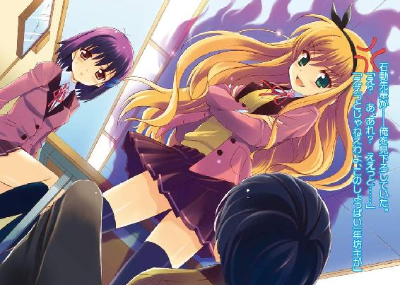
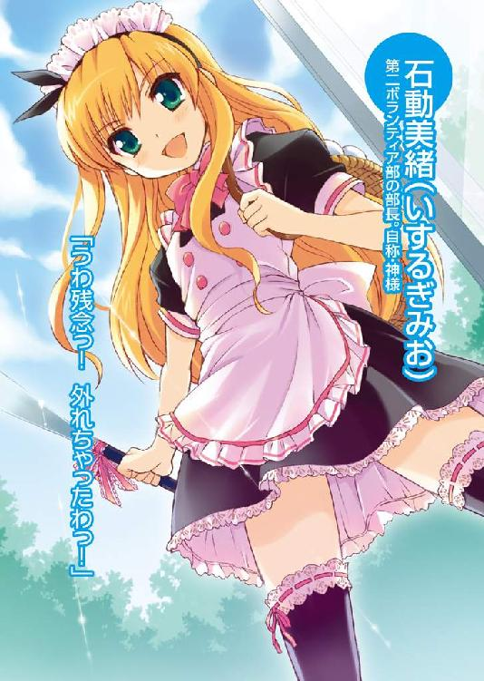
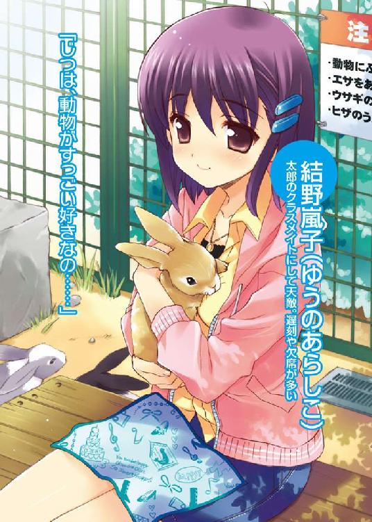
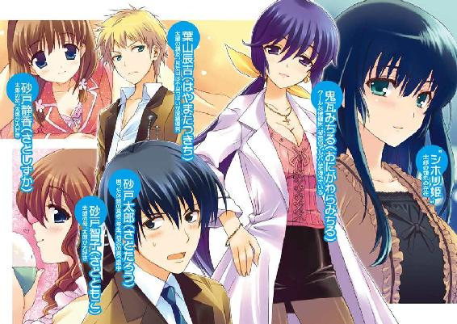
ＭＦ文庫Ｊ
えむえむっ！
松野秋鳴
口絵・本文イラスト●QP:flapper
編集●笹尾明正
第一話 直滑降ファーストラブっ！
中学三年生のときの、放課後の教室だった。
俺、砂戸太郎は、親友の葉山辰吉と雑談をしている。教室にはまだ半分近くの生徒が残っている。
教室の前の戸がからからと開き、一人の女子生徒が教室の中に入ってきた。
その女子生徒はまっすぐこちらに向かってきた。そして、俺の目の前で立ち止まる。
かなりの美少女だった。
やわらかそうなショートカット気味の髪に、赤ん坊のように白くてなめらかな肌。ぱっちりとした大きな瞳が印象的な、どこに出しても恥ずかしくないような美少女だ。綺麗な桜色の薄い唇が、なんだか俺を落ち着かない気分にさせる。
そんな美少女が自分をじっと見つめているのだが、俺はこの少女にまったく見覚えがなかった。もちろん同じクラスの女子でもない。
少女はきゅっと唇を引き締め、眉をひそめるようにして俺を睨みつけている。怒っているようにも、怯えているようにも見えるような、微妙な表情をしていた。その体はなぜか小刻みに震えている。
俺は首をかしげながら、彼女の大きな瞳を見返していた。
俺になんか用か、と尋ねようとしたそのとき。
少女の白くてほっそりした右手が高く振り上げられた。
そして。
勢いよく、ダイナミックに、風を引き裂くようにして振り回された彼女の右手が、俺の左頬にクリーンヒットした。
「うべぇ!?」
パチーンというよりドゴォンという重い衝撃が頬から頭蓋に到達し、情けないことに俺は吹っ飛んでしまった。後方の机や椅子をなぎ倒しながら、床に倒れる。
「い、い、いきなり、なにを......」
俺は女座りのような格好で左頬をおさえながら、強烈なビンタを喰らわせてきた見覚えのない美少女を見上げた。
少女はとても冷たい目で俺を見下ろしながら、言った。
「――あんたなんて死ねばいいのに」
俺はなにも言うことができなかった。
あまりにも突然で、あまりにも理不尽な、少女の暴力。
汚いゴミでも見下ろしているような、少女の絶対零度の視線。
あんたなんて死ねばいいのに――その、あまりにもな暴言。
普通の人なら激怒していただろう。ここまでやられて怒らないほうがおかしい。
俺の全身は震えていた。
ぶるぶると激しく震えていた。
頭の天辺から足の先まで突っ走る激情に、俺の心と体は完全に支配されていた。
クラスの誰もが、激怒して少女に飛びかかる砂戸太郎の姿を予想していたはずだ。
だが。
俺は、俺という男は、いきなり自分にビンタしてきた相手の足もとにすがりつき――
こう叫んだのだ。
「もっと......もっと殴ってくださあぁああいっっ！」
「......え？」
少女から困惑の声が漏れる。
俺はえへらえへらと怪しい笑みを浮かべながら、少女の足に体を寄せ、
「も、もっと、もっと俺を殴ってくださいっ！ ゴミクズでも見るような目で俺を見てくださいっ！ もっとひどい言葉で罵ってくださいっ！ お、お、お願いしますぅ！」
教室が凍りついた。
そんなことにも気づかず、俺は少女に不気味な笑顔を向け続けていた。少女もクラスの連中と同じく、完全に引いた顔をしていた。
「ブタ野郎っ！ この醜いブタ野郎って言って！ あなた様の美しく高貴な白い足で、俺の汚いケツを思いっきり蹴り上げてください――――っ！」
俺の全身はぶるぶると激しく震えていた。
だが、その震えは怒りのためではなく。
心と体を一瞬で支配した、未知の快楽のためだった。
その超絶的な快楽のせいで、俺は完全に我を忘れてしまっていた。
「へ、変態だ」
と、クラスの誰かが言った。
「変態よ」
「砂戸は変態だ」
「ド変態」
「ド変態だわ」
クラスメイトが遠巻きに俺を眺めている。とても気持ち悪いものを見るような顔で。
「ち、違う......」
俺はクラスメイトに向かって言った。が同時に、クラスメイトたちから向けられるその嫌悪の表情にも快感を感じてしまっていたりもした。
「ち、違う......違う！ 俺は変態なんかじゃないっ！ だ、だからそんな目で俺を見ないでくれよ！ ......あ、ああ、でも、そんな君たちの冷たい視線が気持ちいい......ってそうじゃない！ ち、違うんだっ！ 俺は変態なんかじゃないんだあぁあああぁあああっ！」
俺は絶叫した。気持ち悪い笑顔で絶叫した。
「――っ！」
そこで目が覚め――俺はがばっと布団を跳ね上げた。
「はあ、はあ、はあ......ゆ、夢だったのか......」
見慣れた自分の部屋。俺はベッドに上半身を起こした格好で、頭を抱えた。
「ちくしょう。最悪の悪夢だったぜ......」
どうせ夢を見るなら、あの子の夢を見たかったのに......右手で額の汗を拭いながら、俺はそんなことを思った。
艶やかで黒く長い髪を背中まで伸ばした、清楚で美しい容姿の少女。
俺が思いをはせる、あのシホリ姫――
と。
「......ん？」
なにげなく左手をベッドの上に置いたとき、なんかふにょっとした。ふにょ。ベッドにしてはあまりにもやわらかすぎる感触だった。
見ると、俺のベッドに女が寝ていた。
そして、俺の左手はその女の胸の上に置かれていた。
「うぉおいっ!?」
俺は慌てて左手を離す。
細くてまっすぐな髪を鎖骨あたりまで伸ばした、とても小柄な女性だった。ピンク色のパジャマを着たその女性は、横向きに体を丸くするような格好で、あどけなく唇をゆるませながら、すーすーと小さな寝息を立てている。細い髪の一房が、彼女の白い頬にかかっていた。
「おい......おいっ！ 起きろ！」
俺は顔を引きつらせながら、女性の耳元で大声を張り上げた。
「......んー」
女性はゆっくりと瞼を開けた。右手の甲でうにうにと寝ぼけ眼をこすりながら、ぼんやりした顔で俺を見上げる。
「太郎ちゃん......うるさいよぉ」
「うるさいじゃねえっ！」
俺はその寝ぼけた顔に向かって怒鳴った。
「俺のベッドに潜り込むなってあれほど言っただろうが！ この、バカ姉貴が！」
この女性の名は、砂戸静香。一九歳になる俺の姉貴だ。
「だって」
と、姉貴はベッドの上にちょこんと座る。身長が一四九センチしかないミニサイズの姉貴は、いまみたいにあどけない姿をしているとただの子供に見えてしまう。
「だって、昨日の夜は雷が鳴ってて怖かったんだもん。眠れなかったんだもん。だから、しょうがなく太郎ちゃんのベッドに......」
「明らかなウソをつくんじゃねえ！ 昨日から今日にかけての天気は完全に晴れだ！ 降水確率ゼロパーセントだ！」
「バレちゃったか。えへっ」
「えへじゃねえ！」
「うへっ」
「うへでもねえ！」
「そんなことより、太郎ちゃんよ」
姉貴は俺の耳元に唇を寄せ、内緒話をするように言った。
「お姉ちゃんのおっぱい、やわらかかったかい？」
俺の顔が熱くなった。
「て、てめぇ！ すでに起きてやがったのかよ！」
「うわー、太郎ちゃん顔が真っ赤だよ。か、かわいいっ！」
「コラ！ 抱きつくんじゃねえっ！」
「太郎ちゃんがその気ならわたしはいつでもオッケーだよ。近親相姦どーんとこいっ」
「意味不明なこと言ってるんじゃねえよ！」
俺は姉貴の体を強引に引きはがした。
そのとき、枕元にある目覚まし時計が視界に入った。
七時五〇分。
「な、なんだとぉ!?」
俺は目覚まし時計を両手で掴み、
「そんなバカな!? 目覚ましは七時にセットしたのに！ なんで鳴らなかったんだ!?」
「あ、それはわたしが止めたからだよ」
「はい？」
「わたし、今日の授業は三時間目からだから、そんなに早く起きなくていいの。それなのに、その目覚ましが朝早く鳴り出すものだから......太郎ちゃんが起きる前に素早く止めておいたの。うふっ」
こ、このヒマ人の大学生は......
「なんてことしやがるんだよ！ このままじゃあ遅刻しちまうじゃねえかっ！」
「そんなに怒らないでよぉ。一秒でも長く太郎ちゃんの体温を感じていたいというお姉ちゃんの愛情なんだよ？」
「うるせぇ！ とにかく出ていきやがれ！」
「いやんっ」
姉貴を部屋から追い出し、俺は高速で高校の制服に着替えた。
階段を下り、ダイニングに顔を出す。
「あら、太郎さん。おはようございます。今日はちょっと遅いですね」
ダイニングの奥にあるキッチンから顔を出したのは、俺の母親の砂戸智子だった。
「ああ。母さん、おはよう」
母さんは年齢は四十過ぎなのだが、どう見ても三十代の前半くらいにしか見えないほど若い。いっしょに歩いているとよく姉弟と間違えられるくらいだ。肩ぐらいまでの髪を後ろで一つに結んでいる。
エプロン姿の母さんはにこにこほほ笑みながら、皿を片手に持ち、
「すぐ朝ごはん用意しますからね。今日は豆腐のおみそ汁と、卵焼きと、鮭と......」
「いや、今日は朝ごはんはいいよ。ちょっと時間がないから」
「え......」
母さんの笑顔が凍りついた。
皿がつるりと手の中を滑り、床の上で割れた。ガシャン！
「そうですか......太郎さんは、私の作ったごはんなんて食べたくないと言うんですね」
母さんの両目がうるうるゆらめき、大粒の涙がこぼれる。俺はぎょっとした。
「ち、違うって！ そんなんじゃ――」
「いいんですいいんです！ なにも言わないで！ 悪いのはぜんぶ私なんですから！ 私が母として至らないばっかりに、太郎さんに迷惑ばっかりかけて......本当にごめんなさい......うううっ......」
母さんは泣きながら、ダイニングと続きになっているリビングに倒れるように移動し、そこに置いてある仏壇の前に正座した。その仏壇には、五年前になくなった父さんの写真が遺影として置いてある。
「お父さん......ごめんなさいね。私のせいで、私の育て方が間違いばかりだったせいで、太郎さんは朝ごはんも満足に食べられないほどの精神の歪みを......」
「精神の歪みってなんだよっ！ たかが朝ごはんで！」
「ここからニートへの道がはじまってしまうのですね。ああ、私たちの愛する息子が社会問題の一端を担うなんて......」
「なんでそうなるっ!? ただ時間がなくて朝ごはんを抜こうと......ああもうめんどくせっ！ わかったよ！ 食べる！ 食べるから！」
「え、ほんとですか？」
母さん、にっこり笑顔。俺はげんなりしながら、かくかくとうなずいた。
「うふふ。うれしいです。じゃあ、すぐ用意しますからねー。太郎さんはテーブルについて待っててくださいっ。今日の朝ごはんもおいしいですから」
さっきまでとは一転、上機嫌になった母さんは鼻歌を歌い出した。
「泣くのはずるいだろうが......」
ちょっとしたことで涙ぐむクセのある――特に俺に関することならなおさら――母さんには本当に苦労する。すぐ泣きやむとわかっていても、やはり泣かれるともう抵抗できなくなってしまうのだ。
「やれやれ......今日は完全に遅刻だな......」
俺はテーブルに頬杖をつき、ため息をついた。
自宅近くにある駅から十五分ほど電車に揺られる。桜守駅で降り、そこから十分ほど歩いたところに、俺の通う私立桜守高校はあった。
「あーあ、大遅刻だよ......」
校門から昇降口までは五十メートルほどの長さのゆるやかなスロープとなっていて、その両脇には並木道のように桜の樹が並んで立っていた。いまは五月なので桜の花はもう散ってしまっているが、入学式の頃はこの何本もの桜が一斉に花を咲かせていてとても綺麗だったことを覚えている。校門から見てスロープの右隣には様々な部活の部室が並ぶ部室棟があり、左隣には自転車置き場があった。
そのスロープの真ん中辺りに、茶色の毛並みをした猫を見つけた。
「おっ、ノラ吉じゃねえか」
ノラ吉は「にぁー」と鳴きながらこちらに近づき、俺の足に体をこすりつけてきた。
「おー、かわいい奴じゃのぉ。よしよし」
俺はその場にしゃがみ込み、ノラ吉の頭を優しく撫でた。ノラ吉は気持ちよさそうに目を細めている。
ノラ吉は学校周辺を寝床にしている人なつっこい野良猫で、皆に愛されている桜守高校のマスコット的存在だった。ちなみに、ノラ吉という適当な名前はこの学校に勤めている保健医が何年か前につけたものらしい。
「いけね。いまはおまえと遊んでる暇はないんだ。......じゃあな、ノラ吉」
ノラ吉に手を振りながら、校舎のほうに向かう。
ノラ吉はその場で後ろ足を折って座り、「にぁー」と一声鳴いて俺を見送ってくれた。
教室にたどり着いたのは一時間目がはじまってから五分が過ぎた頃だった。怒られるのを覚悟しつつ、そっと教室の戸を開けたのだが......
「あり？」
微妙にざわついている教室。教卓に先生の姿はない。そして、黒板に大きく書かれている文字は『自』と『習』。
「なんだ、自習かよ......」
たすかった。俺は安堵の息を吐いた。
窓際の真ん中あたりにある自分の席に腰を下ろす。
「よォ！ ずいぶんと重役出勤じゃねえか、太郎」
俺の前の席に座っていた男子が振り向き、笑いながら言った。
短めの髪を金色に染めた、細面の男子だった。眉毛も少し剃っていて、一見怖そうな顔をしている。改造した制服をだらしなく着崩し、誰がどう見ても不良ですというような外見をした彼は、俺の親友の葉山辰吉だった。
辰吉とは中学一年生の頃にクラスメイトとして出会い、妙に馬が合ってすぐに仲良くなった。一年から三年までずっと同じクラスで、しかもこの桜守高校でも同じクラス。これで四年連続だ。なにか特別な縁でもあるのかもしれない。
「姉貴と母さんのせいで遅れたんだよ」
「うわっ。自分のお寝坊を愛すべき家族のせいにするなんて......太郎、俺は悲しいぞ。俺はおまえをそんな子に育てた覚えはありません」
「俺だって育てられた覚えはねえよ。つーか、自習でマジたすかった」
「なんか一時間目の先生が急病で休んだらしくて、それで自習になったらしいぜ」
「へえ、そうなのか。今日はラッキーだな」
「でも、朝のホームルームでマッチョの奴がすげえ怒ってたぞ。砂戸の奴はなにをやっとるんだぁって」
「マジですか......」
マッチョというのは、俺たちのクラス担任の中山先生のことだ。中山先生は身長一八五センチのすげえ筋肉質な体をした体育教師で、クラスのほぼ全員が彼のことをマッチョと呼んでいる。
「あの様子じゃ、アレだな。『遅刻なんかするのは筋肉が不足している証拠だぁーっ！』とか叫びながらプロテインを手づかみしておまえの口の中につっこむぐらいのことはやりかねん勢いだったぜ」
「うげ......冗談に聞こえないから怖い」
あのマッチョ先生は、世の中の人間全部がもっとムキムキの筋肉質ならば世界は平和になると本気で信じているようなタイプの人間なのだ。狂っている。
「つーかそんなことより、自習って課題とか出てんの？」
「いや。自由課題みたいだぜ。つまり自分たちで勝手に勉強してろってことだ」
「さらにラッキー」
教室のクラスメイトたちは教科書もノートも出さず、雑談や睡眠に没頭していた。まあ課題がなにも出てないのだから当たり前だろう。自分たちで勝手に勉強してろだと？ 試験直前でもないのにそんなことする生徒なんかいるわけないだろうが。
「さて......」
辰吉が言った。
「じゃあ、俺は今日ある授業の予習でもやっとこうかな。昨日の夜に一回やってるんだけど、予習と復習は何度もやったほうが効果的だし」
いた。ここに一人いたのだった。
この辰吉という男は、思いっきり不良っぽい外見をしているのに、中身は至ってマジメな学生さんだった。中学の頃の成績は常に学年トップ。毎日の予習と復習は欠かさないし、遅刻も無断欠席もゼロ。酒もタバコもまったくやらないという、外見以外は超優等生。
しかもこいつは、中学生の頃は生徒会にも入っていたのだ。俺たちの通っていた中学校はわりと風紀に甘かったとはいえ、よくこんな外見で生徒会に入るのが認められたものだ。それほどこいつの優秀さは教師たちに認識されていたのだろう。
そんな優等生の辰吉がこんな格好をしているのには理由があった。
辰吉は身長が低い。
たぶん一六〇センチに何センチか届いていない。女子高生の平均身長と同じくらいだろう。子供のときから、ずっと自分はクラスで一番のチビだったと辰吉は言っていた。
そして、辰吉は小学生のときに身長が理由で同級生にいじめられたことがあったらしい。このいじめをやめさせるにはどうすればいいかと考えた辰吉は、髪を金髪にして眉を剃って登校したのだという。その風貌にビビった同級生は、辰吉をいじめるのをやめた。以来、辰吉はこの格好を貫いているのだ。
「じゃあ、俺は予習するから。おまえもちゃんと勉学に励めよ」
と、辰吉が前を向こうとしたとき――
教室の前の戸がひかえめに開き、そこから一人の女子生徒が入ってきた。
ショートカット気味のやわらかそうな髪に、長い睫毛に彩られた吸い込まれそうな大きな瞳。薄く光が塗られたような白い肌。ほっそりとしていながら出るところは充分に――そして下品にならないほどの慎ましさを持って――出ている、完璧な肢体。街を歩けば誰もが振り向くような美少女だった。
その姿を見た瞬間、自動的に憂鬱な気持ちが湧き上がってきた。
彼女は、今朝の俺の夢に出てきた登場人物。あのときは名前を知らなかったが、同じクラスになったいまならわかる。彼女の名前は――結野嵐子という。
「また遅刻か。あの子ってけっこう遅刻多いよな」
辰吉がぼそっと俺に言ってくる。
「しかも昨日は無断欠席してたし。あの子って、もしかして不良なのか？」
「おまえにだけは言われたくないだろうけどな」
結野は黒板のほうを一瞬だけ見たあと、机のあいだを縫うように歩き、真ん中の列の一番後ろの席に腰を下ろした。すぐに鞄からデジタルオーディオプレイヤーを取り出し、イヤホンを耳に装着する。そして文庫本を広げ、どこか陰鬱そうな顔でそれを読み進める。休憩時間の彼女のオーソドックススタイルだ。
彼女の瞳がふいに揺れ、何気なくその姿を眺めていた俺と目があった。俺は慌てて目をそらした。
「でも、なんか偶然だよなぁ」
辰吉が言う。
「同じ中学の俺たち三人が、みんな同じクラスなんてよ」
「そうだな......」
俺たちの通っていた清和中学からこの私立桜守高校に進学する生徒は少ない。
たいていの奴らは、もっと近くにある公立校に進学するからだ。清和中学からの生徒は、俺と辰吉、そしてあの結野嵐子の三人だけだった。
その三人がそろって同じクラス。俺たちの学年は九クラスもあるのにだ。
辰吉と同じクラスになれたのは純粋にうれしいのだが、あの結野と同じクラスなのははっきり言ってすごく嫌だった。めちゃくちゃ嫌だった。
「ブルーな顔してやがるな。あんまあのときのことは思い出さないほうがいいぜ」
辰吉がにやにや笑いながら言ってくる。うるせえ、と俺は口をへの字にした。
中学三年生のときの、とある放課後――
突然俺たちの教室にやってきた結野は、いきなり俺を平手で殴りやがったのだ。
そして、わけがわからず混乱する俺にこう言った。
『――あんたなんて死ねばいいのに』
彼女がなぜ俺を殴り、なぜそんなこと言ったのか、それはいまでもわからない。
が、彼女のその行為は......俺の体の中に眠っていたある素養というか属性というか、そういうものを呼び覚ましてしまった。
彼女に殴られたとき、冷たい目で見下ろされたとき、ひどい言葉を投げかけられたとき、俺の肉体の最奥から未知なる『なにか』が湧きだしてきたのだ。
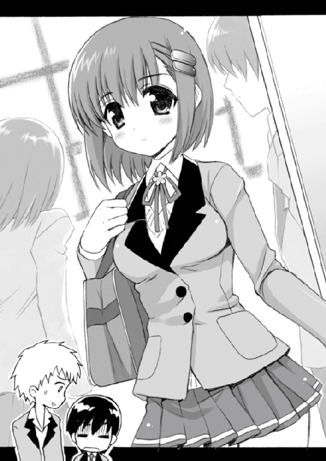
その『なにか』は楽園的な快楽を運ぶ黄金の本流となって全身を駆けめぐり、壊滅的ともいえるほどの圧倒的な力で俺を構成するすべての細胞を支配した。俺は我を忘れ、結野の足にすがりつき、こう言ったのだ。
『もっと......もっと殴ってくださあぁああいっっ！』
「............」
あのとき俺は目覚めてしまったのだ。
マゾヒズム......というやつに。
しかも、その場にはまだクラスの半数が残っていた。俺がドＭの――Ｍはマゾの略だ――変態野郎だということはすぐにクラス中に伝わった。
そして、その日から俺はクラスで孤立するようになってしまった。
男子どもはにやにや笑いながら遠巻きに眺め、女子たちは恐怖と嫌悪に顔を歪めて近づこうともしない。地獄のような日々だった。事件が起こったのが中学三年の三学期という、残り期間の少ない時期だったからなんとか耐えられたものの、あれがもっと早い時期だったら登校拒否とかしてたかもしれない。マジで。
そのことが原因で、俺は急遽進路を変えた。皆が進む公立校は回避し、清和中学からの生徒が少ないこの桜守高校に進学したのだ。俺がドＭの変態だということを誰も知らない学校に行きたかったから。そこですべてを仕切り直そうと思った。
それなのに。ああ、それなのに......
「なんで、あの子がこの学校にいるんだよ......しかもなんで同じクラスなんだよ......」
俺はいやいやと頭を振った。
「苦悩してるな、太郎」
「当たり前だ！ もし、もしもだぞ、もしもあの子が、俺が女性に罵られたり冷たくされたり殴られたりしたら気持ちよくなってしまうドＭ人間だってことをクラスの連中にバラしたりなんかしたら......」
俺は愕然と体を震わせた。辰吉は残念そうな顔でかぶりを振り、
「ああ哀れ、変態太郎くんはクラスメイトどころか学校中の人間に嫌悪され孤立してしまう。深く傷ついた太郎くんは登校することもできなくなり、やがては部屋から出ることもできず、引きこもりのニートとなって社会問題の一端を担う存在に......」
「ああああっ！ 朝ごはんはしっかり食べたのに――って辰吉！ ひでえじゃねえか！」
「悪い悪い。冗談だって。......でもまあ、大丈夫なんじゃねえか？ おまえの秘密を知る問題の嵐子姫は、ほれ、あの通りだしよ」
辰吉は、教室の後ろにいる結野のほうをちらっと見る。
結野はむっつりしているように見える顔で、もくもくと読書を続けている。雑談に興じるクラスメイトたちのほうには一ミリの興味も示さず、静かに文庫本に目を落としていた。
「俺、あいつがクラスの誰かと喋ってるところとかほとんど見たことねえよ。たまに話しかけられたりしても、すごい冷たい態度で応対してたぜ。なんか、自分で壁を作って他人を拒絶してるって感じだな」
確かに辰吉の言うとおり、彼女が他人と喋っている姿を見かけたことはほとんどない。
俺は少し首をかしげ、
「なんであんなふうなんだろうな？」
「さあな。人と関わり合いになるのがあんまり好きじゃないんじゃねえの？ だからおまえのことを言いふらす可能性ってのも、いまのところ少ないと思うぜ」
「確かにな......」
そう言ってみたものの、不安は完全に消えたりしない。
「大丈夫だって。もしあいつがおまえのことをクラスの奴らに言いふらしたりなんかしても、俺がちゃんとフォローしてやるから。まかせろよ」
「辰吉......」
俺はその言葉に、不覚にも感動してしまいそうになった。
思えば、俺がドＭの変態野郎だということを知ってもそれまでと変わらず接してくれたのは、この辰吉だけだった。いや、変わらなかったどころか、こいつはクラスメイトに迫害されてヘコんでいる俺をずっと慰め続けてくれたのだ。俺がなんとか卒業し、この学校の試験に合格できたのはこいつのおかげかもしれない。
そして、辰吉がこの桜守高校に進学したのも、たぶん俺のことが心配だったからだと思う。辰吉からそう告げられたわけではないのだけれど、きっとそうに違いない。
こいつには大きな借りがある。いつか、それを返せたらいいなぁと俺は思っていた。
「ありがとな、辰吉」
「な、なんだよ？ 妙に素直だな。逆に気持ち悪いぞ？」
「気持ち悪いってなんだよ」
へっと笑う。辰吉とかほかの男性とかに罵られたりしても、変態的に気持ちよくなったりせずに普通に応対することができる。俺が罵られたりして気持ちよくなってしまうのは、身内以外の女性だけなのだ。
「でもな、辰吉......」
目を伏せるようにして、静かに声を落とす。
「俺はどうしても自分のドＭ体質を治さなければならないんだ。近いうちにどうしても」
「なんで？ 結野の奴にバラされたときに、それは間違いだって言い訳するためか？」
「そうじゃない。結野のことは関係ないんだ」
「じゃあ、どうして？」
「そ、それはだな......」
俺は人差し指の先端をもじもじとこすり合わせながら、ぽつりとつぶやいた。
「こ、こここここ恋を、し、しししたから」
「は？ なんて言った？ コイ？ 故意？ 鯉？」
「す、好きな人が、できたんだ」
「えぇ！ こ、恋なのか!?」
「じ、じつはそうなんだ」
うふっ、と俺は笑う。そして遠くを眺めるような感じで言った。俺の脳裏には、清楚なたたずまいのシホリ姫が映っている。
「こんなふうに胸が痛くなるなんて、はじめての経験だ......これが初恋ってやつなんだな。ちくしょう、甘酸っぱいぜ......」
「なにを気持ち悪いこと言ってやがるんだよ、おまえは」
俺は右手で自分の胸を鷲づかみにするようにし、
「俺は、もうこの自分の気持ちを抑えることができないんだ。だから、俺は愛しのあの子に告白したい。いや、告白する。だが、その前に......俺は自分のドＭ体質を矯正しなければならないんだ」
「べつに、ドＭのままで告白すればいいじゃねえか」
「ダメに決まってるだろうがぁっ！」
くわっと、辰吉を睨みつける。
「もし......もしもだぞ、告白がうまくいったと仮定しよう。そうなれば、当然俺とあの子は付き合うことになる」
「まあそうだな」
「付き合って、イチャイチャする。ああ、なんて夢のような生活。だがしかし、付き合うとなるとイチャイチャだけでは済まされない。時には、些細なことでケンカしてしまうこともあるだろう」
「女と付き合ったこともないくせに大した想像力だな」
「すると、彼女は俺に怒った顔で文句を言うだろう。怒鳴ったりもするかもしれない。ちょっとした弾みで手が出てしまう可能性も、ゼロとは言えない」
「ああ、なるほど......」
ようやく辰吉の表情に理解の色が見えた。俺はうなずいて見せ、
「そうだ。もしそんな事態になってしまったら、俺は......」
がくがくと震えながら、無意識のうちに結野のほうに視線が向く。
宿命的ドＭ体質の俺は、文句を言われたり怒鳴られたり手を出されたりすると......
気持ちよくなっちゃうのだ。
もし、そこに生まれた快楽が我を忘れるほどのものだったりしたならば、俺は愛しのあの子の足にすがりつき......ああああ、そして......
「最悪だ。あまりにも最悪だ」
「確かに......」
辰吉は腕組みをし、うなずいた。
「だから、だ！ 俺は愛しいあの子に告白をする前に、この呪われしドＭ体質を克服しなければならないんだっ！」
「ふうん、そういうことかよ。あっ、そういえば聞き忘れてたけど、おまえの好きな女の子って誰なんだ？ 俺の知ってる女の子か？ もしかして......」
と、辰吉はむっつり顔の結野のほうを見る。俺は首を振り、
「違う違う。なんでそうなるんだ」
「じゃあ誰なんだ？ なんて名前の子？」
「シ、シホリ......いや、おまえの知らない女の子だよ」
「なんだよ、隠すことねえだろ」
「隠してねえよ。まあ、もうちょっとしたら全部言うから」
というか......じつは俺、まだ彼女の本名も知らないのだ。シホリ姫というのは仮名でしかない。だからなにも言えないのである。言える情報がないのである。
「でな、そういうわけで、俺はいま悩んでるんだ」
「ふうん。初恋ねぇ」
辰吉はつぶやくように言う。俺はふと訊きたくなって、口を開いた。
「なあ、辰吉。おまえの初恋っていつなんだ？」
「な、なんだよ、藪から棒に」
「いいだろ。おまえの初恋ってどんなだったのか気になったんだよ。教えろ」
「俺の初恋は......小学三年生のときだったな」
懐かしそうな顔をして、辰吉は言った。
「ほう。相手は誰なんだ？」
「近所に住む、綺麗なお姉さんだった。年は二十代の前半くらいだったな。一人前のメイクアップアーティストになるのが夢だって言ってたよ」
「へえ。ずいぶん年上だったんだな。このおませさんめ」
「ああ。俺はその人にすごくかわいがってもらって、よく家にも遊びに行った。近くにいるだけで、俺の胸はドキドキしてたな」
「やはり、おませさん......で、その人とはどうなったんだ？」
「知り合って半年ぐらい経った頃だったかな、お姉さんの実家でなにかあったらしくて、お姉さんは実家のほうに帰らなきゃならなくなった。そのとき別れて、それっきりだよ。いまごろどうしてるんだろうな......」
「ううむ、甘酸っぱい」
「って......俺の話はどうでもいいだろ。いま話してるのは、おまえの初恋のこと。で、おまえは好きな子に告白するために自分のドＭ体質を治さなきゃならないって言ってるけど、具体的にどうやって治そうと思ってるんだよ？」
......それが大きな問題なのだ。
「具体的な案はない。だから、おまえに相談しようと思っていたところなんだ」
「そんなことを相談されてもな......」
「だよなぁ」
ううーん、と俺は頭を抱える。あの子に告白したい。告白して付き合うためにはドＭ体質を治さなければならない。が、どうすれば治せるのかまったくわからない。
「ここ数日、すっげえ考えたんだけど、なにもいい案は浮かばなかった。ほんっと、マジどうすりゃいいんだぁ......ふえーん！」
「泣くな、頼むから」
辰吉はため息をつく。それから、苦悩する俺にこう言った。
「......もし八方ふさがり状態でどうしようもないのなら、第二ボランティア部ってところを頼ってみたらどうだ？」
「第二ボランティア部？ 第二？」
辰吉は小さくうなずき、
「そうだ。この学校にはボランティア部ってのが二つあってよ、一つめのボランティア部は学校近くの地域の清掃活動とか町内の福祉施設にお手伝いに行ったりとか、まあいわゆる普通のボランティア活動をしてるんだが、第二ボランティア部はそういうのじゃない活動をしてるらしいんだ」
「いったいどんな活動をしてるんだよ？」
首をかしげ、尋ねる。辰吉はちょっと説明に困っているような顔をし、
「桜守高校に通う生徒たちの願いを叶えてあげる......というか、悩み相談みたいなというか......」
「は？ 願いを叶える？ 悩み相談？」
「俺もちょっと前に知り合いから聞いただけだから詳しくは知らねえけど、なんでもその第二ボランティア部では、部室に訪れた生徒たちのちょっとした願いごとを叶えたり、悩みごとの相談や懺悔などを聞いてくれる。それが活動の内容らしい。だから、もしおまえがドＭを治すいい方法が見つからなくてどうしようもないほど困ってるんなら、そこを訪れてみるのも......って、なんだよその胡散臭そうなものを見るような顔は」
「だってよぉ......」
生徒の願いや悩みを聞いてくれる？ それが部活の活動内容だと？
「すげえ胡散臭いじゃねえか。おい、それって有料とかじゃないよな？」
「学校の部活なんだから金なんかとるわけねえだろ......たぶん」
辰吉はフッと力を抜いた笑顔を見せ、
「まあ、この桜守高校にはそんな珍しい部活もあるって話をしただけだよ。胡散臭いと思ったらいかなきゃいいだけだし」
「ふうん......第二ボランティア部ねえ......」
放課後になり、俺と辰吉は教室を出た。
「じゃあな、太郎」
「おう。また明日な」
辰吉が片手を上げ、昇降口に降りる階段とは反対の方向に歩いていく。
料理部という外見にまったくそぐわない部活に入っている辰吉は、放課後になると料理部が活動している家庭科室に向かうのだ。帰宅部の俺は授業が終わると帰るだけ。
階段のほうへと歩き出そうとしたところで――
窓の掃除をしている結野嵐子の姿を見かけた。
結野は細い腕と足を、んしょ、と伸ばして窓の高いところを雑巾で拭いている。
窓ガラスの目の前にあるその顔は、普段教室で見せている陰鬱な顔などではなく、子供のように無防備な表情。桜色の唇を半開きにし、あどけない目をぱちっと開けながら、一生懸命な様子で窓を拭いている。やわらかそうな髪の毛が頬をふわりと隠していた。
俺は一瞬だけ、その姿に見とれてしまった。
「......って、なにしてんだよ、俺は」
つぶやき、急いで教室を離れる。
やはり結野は美少女だ。それは間違いないことである。だが、奴は俺のドＭ体質を開花させた忌むべき女子なのだ。そんな奴の姿に見とれてしまうなんて......俺は軽い自己嫌悪を覚えながら、とぼとぼ廊下を歩いた。
昇降口で靴を履き替え、校舎を出る。
昇降口から校門までのスロープの途中で――俺は立ち止まった。
そして、じっと部室棟のほうを眺める。
「第二ボランティア部ねえ......胡散臭えなぁ......」
だが――いまの俺は、藁にもすがりたい気持ちだった。
「まあ......ちょっとだけ覗いてみるかな。あくまで覗くだけだけど」
そんなことを一人でつぶやいてから、俺は桜の樹のあいだを抜けて部室棟のほうに歩いていった。
第二ボランティア部は、部室棟の一番端っこにあった。
「......ここか」
部室の扉の上に『第二ボランティア部』と書いてあるので、間違いないだろう。
俺は恐る恐る扉に手をかけ、ゆっくりと扉を開けた。
その瞬間――
呼吸が止まった。
十畳くらいの広さの部室だった。中には机や椅子がいくつか置いてあり、壁際にはロッカーがある。部室の奥には戸口があり、その向こうにはどうやらもう一つ部屋があるようだった。
その部室の真ん中辺り。
椅子に座り、文庫本を読む少女の姿があった。
淡い色をした長い髪がやわらかく両肩に落ち、その真珠色の肌は内側から光を当てられているかのようになめらか。二重の整った瞳。細い眉にすらっと通った鼻筋、小さな唇を加えたその顔の造形は、もはや崇めてしまいたくなるほどに美しい。
俺は、目の前に現れた少女の完璧な美しさに、思わず息を止めてしまっていたのだ。
その非現実なまでに整った容姿をした美少女は、聖母のような穏やかな顔で、手元の文庫本に目を落としている。その光景はまるで一つの芸術作品のようだ。
極上の美少女である結野も、そして俺の初恋の相手であるシホリ姫も、ただ容姿だけをいうなら目の前の美少女には決して敵わない。それほど美しい少女だった。
白い、ほっそりとした指先が、本のページをめくる――その前に。
少女の綺麗な二重の瞳が、扉の近くに立つ俺の姿をとらえた。それだけで、俺の鼓動が大きく跳ね上がる。
「あら？」
少女は優しげな微笑をたたえながら、細い首をかしげるようにして俺を見つめた。さらり、と少女の長い髪が肩を滑る。
少女は文庫本を机の上に置くと、すっと椅子から立ち上がった。
「こんにちは。この第二ボランティア部に、なにかご用ですか？」
鈴の鳴るような綺麗な声が、俺の鼓膜を撫でる。
「え？」
声をかけられ、俺はハッと我に返った。
「あ、ええっと......あ、あの......」
美少女は穏やかなほほ笑みを浮かべたまま、俺のほうに歩み寄ってきた。
俺の目の前でぴたりと立ち止まり、少女はまっすぐ俺の目を見つめてくる。
再び呼吸が止まる。真正面から見ると、やはりその顔は怖いほどに完璧だった。いったい前世でどれほどの徳を積めばこんなに美しく生まれることができるのだろう。
「もしかして......この第二ボランティア部になにか願いごとか相談したいことがあって、わざわざ足を運んでくださったのですか？」
言って、少女はやわらかく笑った。
うわぁ......と思わず声を出しそうになったほど、それは華やかで魅力的な笑顔だった。
その笑顔に誘われるように、
「は、はい。じつは、そうなんです。俺の願いごとを叶えてほしくて、ここに......」
と、俺は顔を赤くしながら言っていた。
「まあ、本当に？ それは......とてもうれしいです」
やばいです。その笑顔はやばいです。
「あっ――あたし、まだ自己紹介をしてませんでしたね。ごめんなさい」
少女は言う。
「あたしは、石動美緒といいます。二年生で、この第二ボランティア部の部長をやっています」
「え......あなたが、第二ボランティア部の部長なんですか？」
美少女――石動先輩は「はい」とうなずき、笑顔を広げる。
「あの......もしよろしければ、あなたのお名前も教えていただけませんか？」
「あっ、はい。俺は砂戸太郎っていいます」
俺がそう名乗ると、石動先輩はぱちぱちと何度もまばたきをした。
「砂戸太郎？ あなたが......砂戸太郎くんですか？」
「へ？ ああ、そうですけど」
「そうですか、あなたが......これは手間がはぶけたかも......」
石動先輩は俺の顔をマジマジと眺め、しきりにうなずいていた。
手間がはぶけた？ どういうことだ？
「あの......俺のこと知ってるんですか？」
「え？ ああ、どうか気になさらないでください」
「はあ......」
そのとき、背後にある部室の扉が開いた。俺は反射的に振り返る。
「ひっ――！」
短く悲鳴を上げる人物。大きな瞳に怯えの色を宿し、身を引くような体勢で俺を見つめているその人は――結野だった。
クラスメイトであり、俺がドＭに目覚めるきっかけを作った、結野嵐子だ。
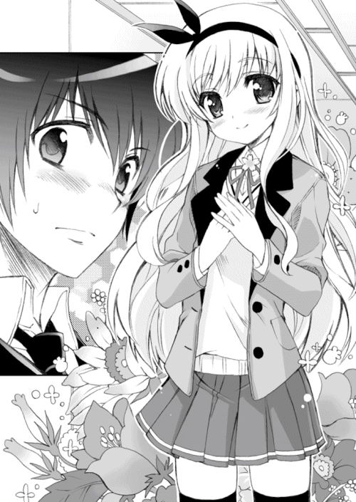
「なっ！」
俺はびっくりして派手にあとずさった。そして、小さな声でつぶやく。
「な、なななんで、結野がここに......？」
もしかして、結野もこの第二ボランティア部になにか相談があって......
「砂戸くんは、嵐子さんとお知り合いなのですか？」
俺のつぶやきが聞こえたのだろう、石動先輩が言った。
「嵐子さんは、この第二ボランティア部の部員なんですよ」
「え......？」
結野が第二ボランティア部の部員？ 俺が驚きの目を向けると、結野は激しく顔を歪ませた。そして俺を避けるように大きく迂回しながら、じりじりと部室の中に入ってくる。近づいただけで変なウィルスにでも感染すると思っているような態度だった。
「嵐子さん。昨日は体調が悪くて学校をお休みしたのでしょう？ あたし、とても心配しました。お体はもう大丈夫なんですか？」
石動先輩は優しげな顔で結野に尋ねる。
「え？」
部室の中にある机の一つについた結野は、驚いたような顔で先輩を見る。
「ええ、わたしは大丈夫ですけど......み、美緒さんこそどうしたんですか？ だ、大丈夫ですか？」
「え？ あたしはもちろん大丈夫ですよ。変なことを言う嵐子さんですね」
先輩は口元に手を当て、くすくすと笑った。
「じゃあ......砂戸太郎くん」
石動先輩は俺のほうに向き直り、言う。
「あなたの願いごとというのがなんなのか、聞かせてください」
「へ？」
先輩の顔を見つめる。
「ええーっと、それを......言うんですか？ いま、ここで？」
「はい。だって、願いごとの内容を教えていただけないと、それを叶えることなんてできないじゃないですか」
「え、いや、まあそうなんですけど......」
俺はちらりと結野のほうに目をやった。結野は俺の視線に気づくと、びくりと大きく体を震わせ、素早く俺から目をそらした。『こいつなんでわたしのほうを見てるの？ やだ、すごくキモいよおっ』。そんな声が聞こえてきそうな振る舞い。
......なんか、こいつの前ではすごく話しにくいな。
いや、結野だけではなく石動先輩に話すのもすごく抵抗があった。よく考えると、ドＭを治したいというお願いをするためには自分がドＭであるということを他人に告白しなければならないわけで......そのことを俺はすっかり失念してしまっていたのだ。
「？ どうしたのですか？」
「あ、あの......」
「はい」
「......やっぱり、いいです」
「え？」
「ね、願いごとのことはやっぱりいいです。わざわざ人に叶えてもらうほどのことじゃないし。じゃあ、そういうわけで......」
俺は石動先輩にくるりと背を向ける。
「あっ......お待ちになってください」
先輩の上品な声が追いかけてくる。俺はそれを無視して扉のほうに向かう。二人の前で願いごとを口にすることはできない。ならば、もうここにいても無意味だった。
「お待ちになって。あの、ちょっと......」
背後から聞こえる石動先輩の優しい声が、
「ちょっと、お待ちに......」
俺の背中に――
「ちょっと待てって......言ってんだろうがあぁああぁ――――っっっ！」
強烈な勢いで叩きつけられた。
え......？
突然の大音量に、俺はびくりと震える。そして。
後ろ襟を引っ張られ、がくん、と俺の体が急停止した。あ、あれ？
そのまま、すごい力で後ろに吹っ飛ばされる。
「おげぇ!?」
床に激突するような勢いで尻餅をつく。反動で揺れた頭部が机の角に思いっきりぶつかり、俺は呻きながら頭を抱えた。
「ぬ、ぬぐお！ 頭蓋骨が陥没するほどに痛いっ！」
い、いったいなにが起こったんだ？ 俺が顔を上げようとすると――
スカートの中から伸びる、黒いニーソックスに包まれた細くしなやかな足が、天高く振り上げられていた。
その足の裏が俺に向かって振り下ろされる。その着地点は、床に尻餅をつく俺の股間部分......！
踏み潰される――そう思って体を強ばらせたが。
振り下ろされた足の裏は、俺の股間のほんの少し前、床に投げ出された両足のあいだに置かれていた。俺は混乱しながら、顔を上げる。
石動先輩が――俺を見下ろしていた。
聖母のような穏やかな微笑......は、すっかりと消え失せ、いまの石動先輩は唾でも吐き出しそうなほど不機嫌な顔。
「え？ あ、あれ？ ええっと......」
「ええっとじゃねえわよ、このしょっぱい一年坊主が」
ふん、と傲慢そうな感じで鼻を鳴らし、長い髪をかき上げる。
先輩は偉そうに張った胸に、自分の右手を添えるような格好で、
「この美緒様が、あんなにも下手に出てやったっつーのに、なあに？ 願いごとのことはやっぱりいいだとぉ？ ふざけんじゃないわよ、このボケ。声帯が潰れるまで詫びの言葉を吐けや」
「............」
ええええ――あれぇ？ なんだこれ？
「あっ。やっといつもの美緒さんに戻った」
と、結野が安心したような声で言ってくる。いつもの？ これがいつもの？
「あー、すっごい肩こった」
先輩は右手で自分の肩をもみながら、結野のほうに顔を向ける。
「嵐子。あんたから借りてたあの本だけどさぁ」
ちらりと机の上の文庫本に目を向ける。
「貸してって言っといてなんだけど、やっぱあたしには無理だわ。なんか字が詰まりすぎてて読むのがしんどい。ハードル高すぎな感じっす。もうちょっとさ、読みやすい本を貸してくんない？ ところどころ挿し絵が入ってたりすると、なおいい」
「あっ、はい。わかりました。じゃあ今度はそういう本を持ってきますね」
「うん、よろしくー」
言ってから、石動先輩は再び俺のほうに目を向けてきた。
ため息をついてから、両手を腰に当て目つきを鋭くする。
「......やれやれ」
チッと露骨に舌打ちし、
「清純で上品な感じにしてりゃあ、学校に入ってきたばかりの一年坊主はコロッとだまされて、アホみたいに願いごとを垂れ流すと思ったのに。そんで、清楚な石動先輩の噂が一年生のあいだで広まり、そんな麗しい先輩に願いごとを叶えてほしいと思った一年が第二ボランティア部に押し寄せてくる......という計画が、昨日に続いて今日も失敗に終わったわ。ムカつく。まったく――ああ、慣れない敬語なんか使ったからすげえイライラするんだけどっ！」
言って、じろりと俺を睨みつけた。ぞくぞくするような目つきだった。
「あやまりなさいよ」
「へ？」
「とりあえず、あやまりなさいよ。心を込めて謝罪しなさい」
傲慢に、言い放つ。
「あ、あやまれって......お、俺は別に悪いことはなにも......」
「ねえ、聞こえてたでしょ？ 美緒様が、あやまれって言ってるのよ？」
「............」
なんなんだろう、この人は。急に人格が変わったかと思えば、いきなりキレだして、そして理不尽な謝罪を要求してきやがった。まったく意味不明だ。
なんで俺があやまらないといけないんだよ、ふざけんな――そう言おうとして、俺は口を開いた。
「ご、ごめんなさいっ！ 申し訳ありませんでしたぁ！」
え？ あれ？ 口が勝手に謝罪の言葉を言ってやがる。なんで？
「ふんっ。それでいいのよ、このクズが。――ん？」
石動先輩はずいっと顔を近づけてくる。端正な顔がすぐ目の前に迫る。
「あんた......なんで息を荒げてるの？ はあはあ言って気持ち悪いんだけど」
「はあ、はあ、はあ......え？」
そう――俺という変態男は、あろうことか、この理不尽な叱責に興奮していたのだ。マゾヒズム的な快感を感じてしまっていたのだ。
「ふん、なんかキモいわねこいつ......まあ、いいわ」
先輩は両腕を組み、細い顎をくいっと上げ、俺を見下ろす。
「とりあえず、最初の話の続きをしましょう」
「へ？ さ、最初の話って......」
「あんたの願いごとの話よ。あんたはなにかお願いしたいことがあって、この第二ボランティア部にきた。最初にそう言ったでしょ？」
「え？ ええ......」
「その願いごとを言いなさい。あたしが叶えてあげるから」
「は？ い、いや、それはもういいですとさっき言――」
「おい」
頭上から声が降ってくる。
「あたしだって、あんたみたいなゴミの願いごとなんて叶えるのはめんどくさくて嫌なんだけど、これも神様の仕事だからしょうがないのよ」
「神様の......仕事？」
「そうよ。だから、あたしがあんたの願いごとをちゃんと叶えてあげる。神様であるこのあたしがね。わかったら、さっさと願いを言いなさい」
「............」
神様って......なに言ってんだ、この人は？ ちょっと頭がアレなのか？
石動先輩は俺のそばにしゃがみ込み、右手で俺の頬をがっと挟んだ。
「ほら、さっさと言えよ、このノロマ野郎」
「あ、あぅ......」
みしみしという音が聞こえてきそうなほど先輩の締めつけは強烈だった。そして目の前には先輩の鋭い眼光。整った二重の瞳に鋭利な殺気を宿し、その視線で俺をなぶっている。
「はあ、はあ、はあ......」
ぶるぶるっ、と体が震え出す。それは恐怖や痛みのせいではなく、悦楽の予兆が肉体の内部を光速で駆け抜けたせいだった。
ダメだ......このままでは、俺のドＭ体質が目覚めてしまうのも時間の問題......次第に速くなっていく呼吸と鼓動を感じながら、俺はそう思った。
「わ、わかりましたよっ！ 言います！ 願いごとを言いますから！」
どうせこのままの状態が続けば俺のドＭ体質は目覚めてしまう。もはや選択の余地はなかった。
「そうそう。最初から素直にそう言えばよかったのよ」
一転、機嫌をよくした先輩は、
「えらいえらい。ご褒美に撫でてあげる」
にこにこ顔で俺の頭をごしごし乱暴に撫でてきた。なんだか動物扱いされてるような感じだったが......それはそれで悪くなかった。
先輩はすっと立ち上がり、俺から一歩離れる。
「じゃあ言いなさい。あんたの願いごとを」
「は、はい......」
ううっ......くそ、嫌だけど仕方がない。俺はため息をつきながら立ち上がり、
「あ、あのですね......願いというのは......」
「うん」
「ええっと、なんというかですか、俺のある特殊な体質を改善してほしいというか......」
そこで、俺から目をそらし続ける結野の肩がぴくっと震えた。
「特殊な体質？ なによそれは？」
「は、はあ。そ、それはですね......つ、つまり、その......マゾヒズム......」
「は？ まぞひずむ？」
「は、はい。お、俺はマゾヒズム――ドＭ体質なんです......で、でも、自分ではそれがすごく嫌で、だからここにお願いして......」
「ちょっと待って。ドＭ体質ってなあに？ まったく意味がわからないんだけど。もっとわかりやすく言いなさいよ」
と、先輩は首をかしげる。
「ええっと、つまり......」
俺は顔からびっしりと汗をかいていた。自分の変態体質を人に説明するのは、すげえ恥ずかしいことです。しかもこの部屋には、俺の変態性を開花させた結野嵐子がいる。
「つ、つ、つまり、つままつまり......はあ、はあ、はあ......」
俺は自分の変態体質をいまから告白しようとしている。
それを聞いた先輩は、この超絶美少女の石動先輩は、俺のことをどう思うだろう。気持ち悪いと思うだろうか。侮蔑の視線を投げつけるだろうか。先輩はどんな顔で、どんな目で、この俺を......
「はあ、はあ、はあ、はあ、はあはあはあはあはあ......」
やばい。なんだか頭が白くなってきた。
「ど、どうしたの？ なんか呼吸音が尋常じゃないくらいに速くなってるんだけど......」
「だ、大丈夫ですっ！ ええ、大丈夫ですともっ！」
「そ、そうなの......なんか目も血走ってきて、まったく大丈夫そうじゃないというか怖いというかキモいというか......」
もう限界だった。
俺はくわっと目を見開き、絶叫するように言った。
「じ、じつはですね！ 俺という人間はですね！ 女性に罵られたり冷たくされたり殴られたりすると、すごく体が気持ちよくなっちゃう人間なんですよ！ も、もう、我を忘れるぐらいに気持ちよくなってしまって、はあはあはあ......マジでやばいんですよ！ 俺はやぁばい奴ぬぁんですよぉ！」
俺は石動先輩の両肩をぐわしっと掴んだ。先輩はぎょっとした顔で俺を見上げる。
「ふ、ふふふ普通なら、罵られたり冷たくされたり殴られたりするとすごく嫌じゃないですかっ!? で、でも、俺は違うんだよ！ 逆なんだよ気持ちよくなっちゃうんだよ変態なんだよド変態なんだよ！ それが俺の言うドＭ体質ってやつなんだぁ！ そ、そ、そんな体質が嫌だから、こ、ここにお願いしにきたんだよっ！」
「ち、ちょ――ちょっと落ち着け！ こ、興奮しすぎよ！」
困ってる。先輩すげえ困ってる。うふ、うふふ......
「落ち着けと......」
「はあ、はあ、はあ......」
「言ってるだろうがああぁあぁ――――っっ！」
石動先輩は怒鳴り声を上げ、俺の顎を思いっきり蹴り上げた。
「ぶ、ぶべらっ!?」
恐ろしいほど強烈な一撃を喰らい、俺は派手に吹っ飛んだ。
どすん、と床に倒れる。
美少女が、俺を、蹴ってくれました。
「あは、あははははは......」
床に大の字になって倒れながらも、俺の脳内ではドーパミンがどぴゅどぴゅと分泌されていた。超法規的ともいえるほどの悦楽が脳髄を貫き背徳の商人の手によって天国への扉は開かれてしまったのだ。もはやなにもかもが意味不明だった。
「あははっは......うううううう......」
俺は狂ったように笑いながら、泣いていた。
こんな自分が心底嫌だった。
「なるほど。話はわかったわ」
行儀悪く机の上に座り、腕組みをしながら俺の話を聞いていた石動先輩は、最後にそう言ってうなずいた。
――マゾヒズム的興奮状態から脱し、なんとか落ち着いた俺は、自分の体質と願いごとのことを先輩にようやく伝えることができた。今度は冷静に。
「あんたは、女性に罵られたり冷たくされたり殴られたりすると、過度に興奮してしまう体質の持ち主なのね。自分ではコントロールできなくなるぐらいに。そして、そんな自分が嫌でしょうがなくて、普通の人間になりたくて、藁にもすがる気持ちでこの第二ボランティア部にやってきたというわけか......」
「はい。だいたいそんな感じです」
「ふうん、そう......ドＭ体質ねぇ......」
言って、石動先輩は顔を隠すようにうつむく。その体は少し震えているように見えた。
どうしたのだろう。もしかして石動先輩は、不憫な体質に生まれついてしまった俺のことをかわいそうだと思って涙を流し――
「ぶっ！ ぶははっ！ なにそれ！ ドＭ体質だって!? お、おもしろすぎるわよその体質っ！ ぎゃはははははははっ！」
「............」
石動先輩は大爆笑しながら、部室の床をごろごろ転がりはじめた。
「み、美緒さん！ そんなことすると制服が汚れちゃいますよっ！」
「あ、嵐子！ あんたももっと笑いなさいっ！ こんな珍妙な生き物、滅多に拝めるもんじゃないわよっ！ あはははははははっ！」
「............」
それからしばらくして――
ようやくバカ笑いを停止させた石動先輩は、ゆっくりと床から立ち上がった。その傍らに近づいた結野が、先輩の制服の汚れをぱんぱんと手で払ってあげていた。
俺は椅子に座り、黙っている。
「ふうん、ドＭ体質かぁ――」
先輩はにやにや笑いながら俺に近づき、
「じゃあ、もしかして、さっきあたしがあやまれって言ったときとか、ひどい言葉で罵ってたときとかも、あんたはドＭな快楽を感じて内心よろこんでたの？」
「う......」
はっきりと否定できないのがつらい。口ごもる俺を、先輩は妖艶な笑みで見つめ、
「あは、やっぱりそうなんだぁ......じゃあなに？ あんたは、この美緒様を、自分が気持ちよくなるための道具として利用してたってわけ？」
「ち、ちが......」
「うっわ、キモいっ。あんたって本当にいやらしいのね。このくされド変態」
先輩は左手で俺の髪の毛を乱暴に掴み、右手でぺちぺちと俺の頬を軽く叩いた。
「あ、あう、あうあうあう......」
「あうあううるせーのよ、この変態暴走特急が。あんたみたいなブタが存在してるから、いつまでたっても世の中は平和にならないのよ。あんたもそう思うでしょ？」
「あう......そ、そう思いますぅ......はあ、はあ、はあ......」
「そう思うなら、もう一度あやまりなさい。誠心誠意、心を込めて、自分みたいなブタが生まれてきてしまったことを世の中にあやまりなさいよ」
先輩はかなりめちゃくちゃなことを言ってきた。理不尽この上ない謝罪要求だった。
だが、哀れな俺は――
「は、はいぃぃいぃ！ あやまりますぅ！」
ほとんど反射的に両手を床につき、叫んでいた。
「ごめんなさいっ！ 生まれてきてごめんなさいっ！」
「声が小さいわよっ！ もっと腹から声を出しなさい、このブタロウがっ！」
「イエッサー！ すみませんでしたあぁあぁっ！ 俺みたいなウジ虫が生まれてきてすみませんでしたぁあぁ――っ！」
と。
「うぷっ」
先輩は指をそろえた右手を口の前に当て、吹き出した。
「うぷ、うぷぷっ。見たっ!? 嵐子いまの見たっ!? こいつ、本当にあやまりやがったわよっ！ 生まれてきてすみませんって！ し、しかも、あんなうれしそうな顔で！」
近くにいる結野のほうを見て、先輩は笑いながらぱんぱんと膝を叩く。
「こいつ本物だわっ！ 真性のマゾ野郎だわっ！ あははははははっ！」
「............」
なんだか泣きそうだった。こんな屈辱を受けたのは生まれてはじめてだ。そんな屈辱を受けて興奮している自分が悲しくて泣きそうだった。
「あー、おもしろかった。......さてさて」
石動先輩は笑いを引っ込め――まだ口元はにやにやしていたが――俺のほうにまっすぐ向き直った。
「こんな変態の願いごとでも、神様のあたしは叶えないといけないのよねー。ほんっと、やれやれだわ」
ふひー、とため息をつく。
「まあいいや。――あんたの願いごと、確かに受け取ったわ。だから、あんたの願いはこのあたしが叶えてあげる。絶対にね」
言って、まっすぐに俺の目を見つめてくる。
心を射抜くような、透明な視線。これまでのふざけた態度からは考えられないほど、その視線には純粋な力がこもっているように見えて、俺は少し驚いた。
「は、はあ......でも、具体的にどうやって治す気なんですか？」
「ううむ」
石動先輩は腕組みをし、難しい顔で唸る。
「いますぐにはいい方法は浮かばないわね......こんなアホみたいな相談、過去に前例がないし。まあでも大丈夫よ。明日までにはなんかいい方法を考えておくから。だから、とりあえず今日は帰って、また明日この部室に顔を出しなさい」
明日までにいい方法って......そんなすぐに思いつくのかよ。
「なあに、その顔は？ あんたまさか、この美緒様が信用できないってーの？」
ギンッと、睨みつけてくる。
「い、いえ、そんなことは......じゃあ、とりあえず明日またきますんで......」
「ふんっ。素直にそう言えばいいのよ、薄汚いブタ野郎が」
「ブタ野郎って......俺は別に肥満体質じゃないし......」
「あ？ なに言ってんのよ。ブタ野郎ってのは、太ってる人間をバカにする言葉じゃないわ。それは家畜以下のどうしようもないゴミ存在に与えられる称号よ。つまりブタ野郎という言葉はあんたみたいな究極変態を表す観念にも似た最上の罵詈雑言であるということなのよ。わかったか、このブタ野郎」
「ぐ、ううう......」
先輩の言ってることはまったく意味不明だ。意味不明なのだが、ドＭとしての俺の本能が、論理よりも上のところで先輩の言葉を肯定していた。ブタ野郎というその言葉、その響き、それはどんな罵詈雑言にも勝る、すっごく気持ちのいい言葉......
「さ、さすがですね石動先輩。だてにサディストを名乗ってるわけではないということですか......」
「誰もそんなものを名乗った覚えはないわよ。キモいことを言うな」
先輩はとても醜悪なものを見るような目を俺に向けてくる。
「まあいいわ。とにかく、明日、絶対にきなさいよ。絶対にっ。......願いごとのほかにも、あんたにはまだ別の用事があるんだからね」
「別の用事？ 用事って......」
「うるさい。こっちの話よ。あんたは、あたしの言うとおりにしとけばいいの」
「はあ......」
そのあと、結野が睨むような目をしながら差し出してきた用紙に――願いごとや相談にきた生徒は必ず記入するようになっているみたいだ――名前や携帯の電話番号、住所や願いごとの内容などを書き込んだ。
「あ、あの、俺の願いごとのことは、誰にも......」
「わかってるわよ。あんたの体質のことは誰にも言わない。部員や関係者以外にはね。一応、あたしたちも守秘義務というものはわきまえてるわよ」
「そ、そうですか......」
「なあに？ もしかして、言いふらしてもらいたいの？ それなら遠慮なく......」
「ち、違いますよ！ やめてくださいっ！」
「ふんっ、冗談よ」
嘲りの笑みを浮かべる石動先輩と、嫌悪の表情を向ける結野に見送られながら、俺は部室を出ていった。
はたしてあの第二ボランティア部は、そして石動先輩はアテになるのだろうか......そんなことを考えながら校門に向かっていると、携帯電話に着信が入った。辰吉からだった。
「おう、辰吉。なんだ？」
『あっ、太郎！ ちょっと聞くけど......おまえ、まだ第二ボランティア部に願いごとをしにいったりはしてないよな？』
「............」
いま、いってきたところです。
『え？ も、もしかしていったのかよ？ あんなに乗り気じゃなかったのに？』
「う、うるせぇ......いまの俺は藁にもすがりたい気分なんだよ」
『そうか......』
「なんだよ？ どうしたんだ、辰吉？」
電話の向こうの辰吉は、なんだか少し慌てているような感じだった。
『......ええっと、いまおまえがいってきた第二ボランティア部のことなんだけどよ』
「ああ」
『俺もちょっと気になって第二ボランティア部がどんなところなのかってことを料理部の先輩とかに訊いてみたんだ。......で、その先輩の話によるとだな、あの第二ボランティア部の部長である石動美緒って人は......かなりイタい人であるようなんだ』
イタい人？
「イタいって......どういうふうに？」
『あの先輩はな......自分のことを、神様の化身だと思っているらしいんだ』
「............」
ああ――それはかなりイタい......
そういえば、先輩はさっき自分でそんなことを言ってたような......
『本気でそんなことを言ってるのかはわからないんだけど......でも、あの先輩は自分は神様なのだと高らかに宣言している。それで、自分は神様なのだから、ちっぽけな人間どもの願いごとを叶えてあげなければならない――そう考えて、先輩が一年生のときにあの第二ボランティア部を作ったらしいんだ』
うわあ、なんかそれって究極のサディズムだな......
『でも、あの先輩はやることなすこと暴発ばかりの迷惑人間で、生徒の願いを叶えるというのを建前に、これまでかなりメチャクチャなことをやってきたみたいなんだよ。じつは俺にそのことを教えてくれた料理部の先輩も、前に第二ボランティア部に願いごとをしにいって死ぬほどひどい目にあったらしいんだ。そういうことがあって、いまでは第二ボランティア部に願いごとをしにいこうって思う生徒はほとんどいなくて、いつも閑古鳥が鳴いている状態らしい』
死ぬほどひどい目......俺は石動先輩の加虐的な笑みを思い出していた。
「そ、そんな......」
俺は愕然とつぶやく。
「俺、もう石動先輩に願いごとを言っちまったよ。いまの話が本当なら......これってかなりやばいんじゃねえか？」
『ああ、やばいかもしれないな......』
「マジか......ああ、なんてことだよ......」
『本当に、なんてことだ......』
辰吉は暗い声で言った。
「って辰吉。なんでおまえまでそんな絶望した声だしてんだよ」
『え？ ああ、いや、なんかおまえがあまりに沈んだ声を出すから、俺にまで感染しちまったんだよ』
「なんだそりゃ......」
言って、俺はため息をつく。
『悪い、太郎』
辰吉は申し訳なさそうな声で、
『俺がおまえに、第二ボランティア部なんてものを紹介したばっかりに......』
「本当にそうだよ......」
俺はもう一度、重いため息をついた。
電話を切り、ブルーな気分のまま校門を出て帰路につく。
電車に乗り、自宅の最寄り駅にたどり着く。俺の家は駅から徒歩数分のところにある。駅から出て自宅へ向かおうとしたところで、違う高校の制服を着た女子が俺の前を通り過ぎていった。綺麗な長い黒髪をした女の子だった。
まさか、と思って俺はその女の子の顔に目をやった。
だが、それは人違いだった。彼女はまったく見覚えのない女の子だった。
「そうだよな......こんなところで偶然会うことなんて、そうないよな......」
落胆のため息をつきながら、つぶやく。
「あの子って、どこの学校に通ってるんだろ......」
午後九時にだけ俺の前に現れる、髪の長い美少女。俺はその子のことを思っていた。
俺の初恋の相手である、名前も住む場所もなにも知らない少女のことを。
俺は週に二度、月曜日と木曜日に近所のコンビニでアルバイトをしている。
午後五時から午後十時までの五時間のバイト。はじめたのは高校に入学したときくらいからだ。
アルバイトをはじめて一週間ほど経った頃だろうか。俺が、コンビニの前の道を通るその少女の姿に気づいたのは。
店内に客の姿はなく、店長も奥に引っ込んでいて、俺は一人レジの前でぼーっとしていた。そんなとき、なにげなく外のほうを見ると、コンビニの前の道路を俺と同じくらいの年の少女が通り過ぎていった。
しっとりした黒髪を背中まで伸ばした、息を呑むほどの美少女だった。
俺は思わずその少女の姿に見とれてしまった。すげえかわいい、とかそんな独りごとも言ってたかもしれない。
いい目の保養になった。でも、もう二度と姿を目にすることはないだろうな。俺は当たり前にそう思っていた。だが。
次に俺がバイトに入った日にも、彼女は姿を現した。その次も、その次の日も。艶やかな黒髪を微かに揺らし、まっすぐ前を見つめながら、少女はコンビニの前の道路を右から左に歩いていった。
やがて俺は、彼女がコンビニの前の道を通るのがちょうど午後九時であるということに気づいた。
俺がレジの応対に追われているとき。仕事を失敗して店長に怒られているとき。なにもやることがなくぼーっと突っ立っているとき。彼女は時計みたいな正確さで午後九時ちょうどにこのコンビニの前の道を歩いていくのだ。
もしかすると彼女は、どこかでアルバイトとかをしていて、その帰りにこの道を使っているのかもしれない。だから、いつも同じような時間に通り過ぎていくのではないか。
こんな夜道を女の子が一人で歩いて帰っているなんてと、俺は心配になったりした。彼女が姿を現すたびに、無事に家までたどり着けますようにと祈ったりもした。次にバイトに入った日、彼女の姿を目にすると、ホッと安心した。
――なんか、シホリちゃんに似てるね。
ある日、コンビニの店長が彼女の姿を眺めながらそう言った。シホリというのは、店長が好きなアニメのキャラクターであるらしい。店長はホストみたいなかっこいい外見をしていながら、魂まで生粋のアニメオタクだった。
シホリ......シホリ姫。
いつしか俺も彼女のことをそう呼ぶようになっていた。
そして、俺はいつの間にか、彼女の姿を心待ちにするようになっていた。
午後九時、ほんの少しのあいだだけ俺の目の前に現れる美少女。
バイトから帰っても、いつも彼女のことを考えてしまう。名前はなんというのだろうか。どこに住んでいるのだろうか。どこの学校に通っているのだろうか。どんな声で話すのだろうか。どんな顔で笑うのだろうか。
この感情はなんなのだろう。そう考えて、俺は気づいた。
これは......恋だ。
恋なのだ。初恋なのだ。
そんなふうに自分で確信してから、俺の中に芽生えた恋心は急速に膨れあがっていった。溢れる想いは胸の中でバースト寸前だった。
もう、この気持ちを抑えることはできない。俺は自分の想いを彼女に伝えたいと思った。
だが......それには大きな問題があった。言うまでもなく、俺のドＭ体質のことだ。
だから俺は、自分のドＭ体質を改善しなければならないと思ったのだ。
あの子に、自分の気持ちを伝えるために。
自宅にたどりついた俺は、玄関のドアを開けた。
「ただいま......」
「あら、太郎さん。おかえりなさい。今日はちょっと遅かったですね」
リビングから顔を出した母さんが、にこっと笑顔で出迎えてくれた。いま時刻は午後五時くらい。第二ボランティア部に寄ったせいで、いつもより少し遅くなってしまった。
俺は二階の自室に戻り、制服から部屋着に着替えた。一時間ほどくつろいでから下に降りる。うちの夕食の時間は基本的に午後六時となっているのだ。ちなみに、バイトがある日は帰ってきてから一人で食べることにしている。
ダイニングに顔を出すと、母さんが言った。
「静香さんはまだ帰ってきていませんから、もう二人で食べちゃいましょう」
「ああ、そう。姉貴はまだなのか」
遅くまで授業をやっている日があったり、友人との付き合いがあったりなどで、姉貴の帰宅時間は一定していない。だから姉貴が遅くなる日は先に二人で食べるのが普通だった。
ダイニングのテーブルに二人分の料理が並び、俺と母さんは向かい合って座った。
「あっ、太郎さん。私、ちょっと観たいテレビがあるんですけど、観ていいですか？」
「え？ ああ、そりゃべつにいいけど」
というか、なんでわざわざそんな断りを入れるのだろう。いつもは勝手に観てるのに。
母さんはリモコンを操作し、テレビをつけた。俺は何気なくテレビのほうに目をやった。
『もうすぐ母の日ですね。今日は母の日のプレゼントの特集をしたいと思います！』
女性リポーターが笑顔でそう言っていた。どうやら母の日のプレゼントを紹介するコーナーらしい。
しばらくしてそのコーナーが終わった。次はどこかで見たことのあるタレントが、
『いやー、もうすぐ母の日ですねぇ！ ということで、今日は普段お世話になっているお母さんに恩返しをするという......』
しばらくしてコマーシャルになった。チョコレートの宣伝で、アイドルが『母の日にはチョコレートを送ろう！』とか言っていた。
その次も、次の次も、母の日に関するコマーシャルが流れた。コマーシャルが明けると、次は女性タレントが番組のゲストに向かって『母の日の思い出についてみなさんに訊いてみたいと思います』と言っているシーンが......って、おい、どんだけ母の日をプッシュしてるんだよ......
あまりに不自然というか奇怪な番組構成だった。訝しく思いながら睨むようにテレビのほうを見ていると、そのテレビの下に置いてあるＤＶＤレコーダがいつの間にか起動していることに気づく......
さらに俺は、ダイニングにあるカレンダーの数が増えていることにも気づいた。今日の朝までは一つしかなかったはずなのに、いつの間にか三つに増えている。
そして、それらのカレンダーの『ある日付』に赤ペンでぐりぐりと印が付けてあった。それは五月の第二日曜日、通称母の日......
俺はジト目で向かいの母さんを見やった。母さんは素知らぬふりで、
「あれ？ なんか鼻がむずむずします。くしゃみがでそう。ハ......ハ......」
母さんは目をつぶり、くしゃみをした。
「ハ......ハ......ハハノヒックショーンッ！ ハハノヒックショーンッ！」
「そんな不自然なくしゃみがあるかっ！」
俺は思わず立ち上がり、怒鳴っていた。
「ハハノヒックショーンッってなんだよっ！ そんな不自然なくしゃみする生命体は地球上にはいねえ！」
「え？ そ、そうですか？ べつに不自然じゃないと思いますけど......」
「わざとらしいんだよ！ カレンダーの母の日のところに印を付けたり！ わざわざ母の日に関するテレビ番組をＤＶＤレコーダで編集して流しやがったり！ あれ時間かかっただろ！」
「はい。けっこうな手間でした」
「ったく......」
俺は呆れた顔でつぶやいた。
「だ、だって......」
母さんはうるうるした瞳で言う。
「太郎さんが去年、母の日を忘れててプレゼントをくれなかったから......だから、今年も忘れてしまっているんじゃないかと不安になって、つい......」
つい母の日に関する番組を編集したり母の日に印を付けたカレンダーを増やしたりハハノヒックショーンッとかいう不自然なくしゃみを俺の前で披露したのか。なんだそりゃ。
俺は盛大なため息をつき、いまにも泣き出してしまいそうな母さんの顔を見つめた。泣くのはやめてくれ、俺は泣いてる女の人が苦手なのだ。
「やれやれ......」
まあ、あれだ。母さんは翻訳家という大変な仕事をしているのにもかかわらず、ちゃんと家事はしてくれてるし。料理もけっこううまいし。つまり、そういうことで......
「......わーったよ。今年は母の日のプレゼントを忘れない。約束する。だから、こんなことはもう二度としないでくれ」
「え......本当ですか？」
「本当だ」
言うと、母さんは満面の笑みで叫んだ。
「や、やりましたっ！ ひゃっほーっ！」
「いい大人がひゃっほーっとか言うな！」
そのとき。
「ただいまー」
と、声をかけながら姉貴がダイニングに入ってきた。
「ありゃ？ もう食べちゃってるのか。間に合ったと思ったのになぁ」
「静香さん、聞いてください」
「ん？ お母さん、どうしたの？ なんかご機嫌そうだね」
「うふふ......じつはですね、いま太郎さんが私に母の日のプレゼントをくれるって言ってくれたんです。大好きなお母さんに贈り物をしたいからって」
おいおい、後半のセリフは言ってないだろうが。
「え......」
姉貴はショックを受けた顔で俺のほうを見た。
「そ、そんな......太郎ちゃん、わたしへのプレゼントもあるの？」
「あるわけないだろうが。母の日なんだから」
「ひ、ひどいっ！」
「残念でしたね、静香さん」
「不公平！ 不公平だよ！ どうして母の日はあってお姉ちゃんの日はないのっ!? 誰の、誰の陰謀なのこれはっ！」
姉貴はかなり意味不明なことを言いながら、いやいやと頭を振った。
「ごめんなさいね、静香さん。太郎さんの愛情は私が独り占めです」
「なに言ってるんだよっ！」
姉貴は怒鳴り声を上げると、だだだっとこちらに駆け寄ってきて俺を抱きしめた。
「太郎ちゃんはわたしのもんなんだからっ！」
「お、おい......姉貴こそなにを言って......」
「そうですよ静香さん。なにを言ってるんですか。負け犬の遠吠えに聞こえますよ？」
母さん、にっこり笑顔でそう言った。姉貴はこめかみに怒りマークを貼りつけ、
「ふんっだ！ 太郎ちゃんはお母さんよりわたしのほうを愛してるんだからっ！ 昨日だって同じベッドで寝たんだもんっ！ 太郎ちゃん、わたしに腕枕してくれながら言ってたよ！ 『俺、じつは母さんのこと嫌いなんだよねー。なんかウザいんだよねー』って！」
お、おいおい！ なに言ってやがるんだよ！
「え......」
母さんは愕然とした顔を俺に向け、
「ほ、ほ、本当ですか、太郎さん......た、た、太郎さんは私が嫌いって......タ、タロサン、ワタシ、キライッテ......」
「言葉がカタコトになるほどショックを受けるな！ 言ってねえってっ！ ぜんぶ姉貴のウソに決まってるだろ！」
姉貴が「チッ」と悔しそうに舌打ちした。母さんは呆然としたような顔を姉貴に向け、
「あ、あなた！ な、なんていうウソをつくんですか！ ほ、本当に恐ろしい！ 私は悪魔を産んでしまいましたっ！」
「うるさいわねっ！ わたしが言いたいのは、太郎ちゃんはわたしのことが一番大好きだっていうことだよ！」
「それは間違っています！ 太郎さんが大好きなのは、この私です！」
「うがぁーっ！ い、いい加減にしてくれーっ！」
俺は頭を抱えて叫んだ。
「やれやれ、まったく......」
不毛な争いを続ける母と姉から逃げるようにして外出した俺は、夕焼けに染まる街中をとぼとぼ歩いていた。
「あの二人は、昔からああなんだよなぁ......」
超がつくほど子煩悩――ただし男の子限定――で俺を溺愛している母親と、超がつくほどのブラコンで俺を溺愛している姉。俺はずっとこの二人に挟まれて生きてきたのだ。
二人とも俺のことを溺愛しているので、俺にはすごく甘い。しかもいつも俺にべたべたしてくるので、正直ウザいと思ったことは何度もある。
だから、中学三年生のとき自分がドＭ体質だと自覚してからしばらくは、俺のこの変態体質は母さんと姉貴のせいだと思っていた。
母さんと姉貴が死ぬほど俺を甘やかしたから、いつもにこにこ顔で俺を溺愛していたから、俺はその反動で女性から罵られたり冷たくされたり殴られたりすることに喜びを感じる体質になってしまったのだと。すべては母と姉のせいなのだと。
しかし、そういう理由ならばこの変態的な体質も一時的なものではないかとも思っていた。この変態体質は、思春期における反抗期がちょっとだけ歪んだ形で出てしまったもので、時間が経てば自然と治る。俺は楽観的にそう思っていた。
――父さんの書斎で、あれを見つけるまでは。
あれは中学校の卒業式のちょっとあとだった。ドM体質が発覚してからは地獄のようだった中学校生活をなんとか生き抜き、高校入学までの一時の休息期間。その日、妙に退屈していた俺は、父さんの書斎になにかおもしろそうな本がないかと探しにいったのだ。
父さんは俺が小学五年生のときに亡くなったのだが、思い出を残したいという母の申し出により、父さんの書斎はそのままにしてあるのだ。読書家だった父さんの書斎には大量の本があり、俺はたまにそこから本を抜き取って読んだりすることがあった。
書斎に入った俺は、綺麗に整頓された本棚を物色した。が、これを読みたいと思うような本は見つからなかった。本を探すことに飽きた俺は、書斎にある立派な机に目がいった。父さん愛用の机。俺はその机に近づき、一番下の大きな引き出しを何気なく開けてみた。
そこにはなにやら大きな箱が入っていた。
......いま思えば、それはパンドラの箱だったのだ。だが、当時の俺はそのことにはもちろん気づかず、なにが入っているのだろうと、その箱を開けてしまった。
その中に入っていたのは――
黒い鞭。太いろうそく。手錠。ロープ。チェーンのついた首輪。ピンポン球に穴を開けてベルトをつけたような名称不明の怪しい器具......などなど、いかがわしい道具の数々。
俺は愕然とした。そう、その箱の中には、山盛りのＳＭグッズが入っていたのだ。
な、なぜこんなものが父の書斎に......呆然とそれらを見つめていると、ちょうど書斎を掃除しにきた母さんに遭遇してしまった。うろたえる俺に、母さんは言った。
『あら......見つかってしまったのですね』
母さんは頬を赤らめながら、これらの道具のことを俺に教えてくれた。教えてくれなくてもいいことなのに、教えやがった。
『それは、お父さんの持ち物なんですよ。お父さん、じつはマゾヒスト......というのかしら？ 女性に罵られたり冷たくされたり叩かれたりすると、すごく興奮する体質だったんです。それでですね、あの、その......ふ、夫婦の夜の営みで、それらの道具を使ってくれって頼まれて......』
その言葉に、俺の世界観の一部が崩壊した。
『最初は驚いたんですけれど、私はお父さんのことを愛していましたから、その申し出に応じたんです。そうしたら、お父さんすっごく喜んでくれて......』
言うな。それ以上なにも言わないでくれ。
『お父さんから聞いた話なんですけど、じつはお父さんだけじゃなくて、おじいちゃんも、ひいおじいちゃんも、その......ええっと、マゾヒストだったみたいなんです。だから、もしかしたら太郎さんにもそういう体質が遺伝しているかもしれませんね。でも安心してくださいね、たとえ太郎さんがマゾヒストでも、私の愛が変わることはありませんから。うふっ』
そんなバカな......俺はあまりのショックに、言葉を発することもできなかった。
弁護士だった生前の父さんは、とてもまじめで、厳格で、きちっとした人だった。家族の前でもだらしない格好を見せない父さんのことを、俺はかっこいいと思っていた。
そんな父さんが、真性のマゾヒストだったなんて......いや、父さんだけじゃなくじいちゃんやひいじいちゃんも......
そのとき俺は理解した。理解するしかなかった。俺のドＭ体質は歪んだ反抗期の発現などではなく、砂戸家に伝わる血によるものだったということを。俺の家系は、呪われたマゾヒストの血筋だったのだ。ああ、なんてアホらしくも恐ろしい血筋。
つまり、俺は生まれついてのドＭ人間。
マゾヒストの宿命を背負った、哀れな変態さんなのだ。
「......はあ」
昔のことを思い出し、知らずにため息が漏れていた。
すでに日は暮れかけている。いつの間にか俺の足は繁華街のほうに向いていた。
「そうだ。ここまできたついでに、母の日のプレゼントでも探してみるか」
俺は繁華街にある五階建てのデパートの中に入った。
中を適当に歩いていると、『母の日フェア』と銘打たれた一画があった。どうやら化粧品売り場のフェアらしい。
「化粧品か。いいかもしれないな」
つぶやきながら、そちらに向かう。と、そこで知ってる顔に出くわした。
化粧品売り場のレジカウンターの前に立っているその人物は――辰吉だった。
どうやら部活帰りらしく、格好は制服のままだった。辰吉はレジに立つ店員さんに金を払い、綺麗に包装された小さな箱を受け取っていた。
「おい辰吉。こんなところでなにやってるんだよ？」
「え――」
背後から声をかけると、辰吉は驚くべき速度で首を巡らし、俺のほうに振り向いた。その顔は驚愕に染まっていた。なんでそんな顔するの？
「た、太郎!? なんでおまえがここにっ!?」
「そんなびっくりすることないだろうが。俺だってデパートに入ることぐらいあるって。で、それはなんだ？」
「それというのはなんだ？ 意味がわからない。おまえは幻でも見たんじゃねえのか？」
「いまおまえが受け取ったもんだよ。綺麗に包装されたやつ。ここで買ったってことは化粧品だよな？」
「............」
辰吉はうつむき、沈黙した。なんだよ。なんか様子がおかしいぞ。
「もしかして、母の日のプレゼントとかか？」
「えっ？ え、ええっと......ああ、そうだ。なんでわかったんだ？」
「やっぱりそうか。じつは俺も、ここに母の日のプレゼントを探しにきたんだ。母さんにすげえアピールされたから仕方なくなんだけどな。だから、もしかしておまえもって......そう思ったんだ。包装してもらってるってことは、誰かへのプレゼントなんだろうし」
俺は軽く笑いながら、
「つーか、プレゼント買うところ見られたからって、なんでそんな驚いてるんだよ」
「い、いや......」
と、辰吉は俺から目をそらす。やっぱり様子がちょっと変だ。なぜだろう。
もしかして、いま辰吉が買ったのは母親へのプレゼントじゃないのでは？
そこで俺は、ふと思い出したことがあった。
「おまえ、もしかしてそれは母親へのプレゼントじゃなくて......」
「えっ!?」
「彼女へのプレゼント、じゃないのか？ ほら、中学のとき付き合ってた、あの」
辰吉には中学生のときに付き合っていた女の子がいた。
別のクラスの女子だったのだが、なんか生徒会の仕事の関係で知り合って、仲良くなったらしい。そして彼女のほうから辰吉に交際の申し出があり、辰吉はそれを了承し、カップルの誕生となった。
「違うよ。そんなわけはない」
辰吉は表情を消し、淡々と言う。
「だって、俺と由美はもう別れたんだから」
その話も知っている。じつは、由美さんは中学生の終わりぐらいに急に親の転勤が決まり、卒業と同時にこの町を離れていってしまったのだ。
しばらくは遠距離恋愛が続いていたのだが、いつの間にか自然消滅してしまった......そう辰吉は言っていたのだが、もしかすると辰吉は彼女とよりを戻したくなって、そしてプレゼントを贈ろうと――
「これは、おまえの言うとおり母の日のプレゼントだよ。ただ、母の日のプレゼントを買ってるところを見られるのって、なんか照れくさいじゃねえか。それで慌てただけだ」
「ふうん......」
辰吉は包装されたプレゼントを鞄の中にしまってから、
「そんなことより、太郎。電話で言ってた話なんだけどよ」
「ああ......」
俺はブルーな声を出した。
「おまえ、第二ボランティア部にドＭを治す方法を相談しにいったんだろ？ どんな感じだった？ やっぱり石動先輩ってのは、料理部の先輩が言ってたとおり......」
「たぶん、だけど......おまえんとこの先輩が言ってることは本当な感じがする。あの石動先輩はかなりやばくてイタい人っぽい......」
はあ、とため息。
「あの先輩、強引に俺から願いごとを聞き出したあと、死ぬほど俺のこと笑いやがったんだよ。しかもドＭな俺をいじめて楽しんでたし。自分は神様だとか危ないこと言ってたし。そんで、散々なぶられたあとに、俺の願いごとを叶える方法を考えておくからまた明日こいって言われたんだけど......」
「どうするんだ？ いくのか？」
「いや......あんなイタい先輩に振り回されるなんて、まっぴらごめんだ。......だから、明日は部室にいかねえ」
「そうか......いかないのか」
「ん？ おまえはいったほうがいいと思うのか？」
「さあな......でも、もしかしたら、すごくいい方法を思いついてるかもしれないぜ？」
「まあ、その可能性もゼロではないと思うんだが......」
俺は脳裏に石動先輩の姿を思い浮かべた。そして、結野嵐子の姿も。
「ダメ。やっぱり、いくのはやめとく。......だってよ、第二ボランティア部には結野がいるんだぜ？ あいつ、第二ボランティア部の部員だったんだよ」
「え？ 結野が？ なんでだ？」
「そんなのこっちが聞きたい。だから、もうあの部室には足を運ぶ気にはなれねえんだよ。あの先輩もアテにならなさそうだし」
「結野が第二ボランティア部に......」
「ああ。あの先輩に、結野嵐子。俺にとって第二ボランティア部は鬼門だよ」
そのとき俺は、ふと思い出した。そういえば石動先輩は俺の願いごととは別になんか俺に用事があるようなことを言ってたような......だから明日は絶対に部室にこいって......
「まぁ、いっか。そんなことはどうでも」
どうせろくでもない用事だろうと思い、俺はそうつぶやいた。
次の日の朝、俺は桜守高校の校門にたどり着いた。
昇降口に入り、下駄箱で靴を履き替えようとした、そのときだった。
「――砂戸太郎！」
背後から大声で呼ばれ、俺は反射的に振り向こうと――
頬に風を感じた。なにかが高速で顔面のすぐ横を通り過ぎたのだ。
その一瞬後、ドゴォンッ！ という轟音が耳のすぐそばで響いた。
「な......」
俺は言葉を失った。下駄箱の鉄製の蓋が、べっこりと陥没していた。いままさに開けようとしていた俺の下駄箱の蓋だ。よほどの力をぶつけないと、こうはならない。
なんだ？ なにが起きたんだ？ テ、テロか？
混乱する俺の足下で、てんてんとなにかが弾んだ。見ると、それは野球の硬球だった。なぜこんなところに硬球が？
「うわ残念っ！ 外れちゃったわっ！」
聞き覚えのある声が。俺は顔を上げ、そちらに目を向けた。
昇降口の入り口あたりに――石動先輩が立っていた。
先輩は右手に金属バットを持ち、たくさんの硬球を入れたカゴを背負い、そしてなぜかメイド服を着ていた。
メイドの格好をした石動先輩は不敵な笑みを浮かべ、俺を見ている。
「............」
もはやなにからツッコめばいいのかわからず、俺は呆然とその場に突っ立っていた。
「石動先輩......いったいなんのマネですか？ というかなんでメイド服......」
「ぐ......」
石動先輩はめきっと音がするほど表情を歪ませた。その顔はどことなく赤くなっているように見える。先輩にしては珍しい反応だなと思った。
「こ、これはみちる姉が......」
「みちる姉？ 誰ですかそれ？」
「うるせえ黙れそのことには触れるな今度言ったら百回殺すぞブタロウ」
早口に言って、力いっぱい俺を睨みつける。そのことには触れないようにしよう。
というか、いまはそれよりも気になることがある。
俺は、地面に転がる硬球をもう一度見やってから、
「あの......いま、硬球で俺を狙撃したのは、先輩ですよね？」
「そのとおぉおりっ！」
石動先輩はなぜか胸を張って叫んだ。満面の笑みだった。
「............」
どこからともなく空っ風が吹いた。
下駄箱で靴を履き替える生徒が、メイド姿の石動先輩に好奇の視線を向けていた。
が、先輩が一睨みすると慌てて校舎の中に消えていく。どうやら石動先輩の怖さは多くの生徒に公認されているらしい。
「......どういうことか、説明してもらえませんか？」
俺は低い声を出し、白い目で先輩を見た。さすがにシャレにならない。運良く外れたからよかったものの、硬球なんかが体に当たっていたら大変なことになっていたはずだ。
が、先輩は悪びれた様子もなく、それどころかにっと笑って、
「昨日、あたしはこう言ったわよね。あんたのアホみたいな願いを叶える方法を明日までに考えるって。その言葉どおり、あたしは必死に考えてあげたのよ。それはもう必死にね。インターネットでいろいろ調べたりもしたんだから。あんたみたいな変態のためにこのあたしがそこまでしてあげたんだから、魂の芯まで感謝しなさいよ。あたしへの感謝の気持ちを書物に残して末代まで語り継ぎなさい」
「............」
「でも、さすがに難題だったわ......この美緒様の頭脳をもってしても、それは容易に思いつくものではなかった。考えてる途中にイライラして妄想の中で何度もあんたを殺したわ。だがしかし！ あたしはついに見つけたのよっ！ あんたの願いを叶える方法を！ あんたのドＭ体質を治す方法をね！」
石動先輩は得意げな笑みを浮かべ、言った。
俺はとりあえず黙って先輩の口上を見守る。本当にドＭ体質を治す方法を見つけたのならば、それはすごいことだ。
「あたしの調べによると、マゾヒストってのは他者から苦痛や加虐を受けて快感を得るらしい。でも、一般的な人間にとって苦痛や加虐というものはなんとしてでも避けたいと思うものよ。なぜなら、苦痛や加虐というものは、それが大きなものであると生命の危機につながるものだから。だけどマゾヒストはそれに快感を覚えてしまう。避けずにそれに自ら飛び込もうとしてしまう。そこであたしは閃いたのよ。ドＭ体質を治すためにはどうしたらいいかを。で、その方法とは......」
「その方法とは？」
尋ねると、石動先輩は金属バットの先端を俺のほうに向け、
「苦痛や加虐がとっても危険なものだってことを――その体に教えてやればいいのよ！」
と、叫ぶように言った。
「苦痛や加虐は気持ちいいものなんかじゃないっ！ それはとても危険でやばくて生命的にピンチな代物であると、あんたの体に強烈にすり込んでやるのよっ！ そのための――この装備なんだぁ！」
言い終えたあと、先輩は左手でカゴの中から硬球を一つとりだした。
それを軽く空中に投げたあと、両手でバットのグリップをしっかり握り――
思いっきり、一片の容赦もなく、バットをフルスイングした。
「――っ！」
プロ級のスイングに打ち出された硬球は、恐ろしい速度で俺のほうに向かってくる。
先輩の打った硬球......美少女の打った硬球......
あの硬球に当たっちゃったら、どんなことになってしまうのだろう。
きっと、すげえ痛いだろうな。死ぬほど痛いだろうな。
「うへ、うへへへへ......って、ダメだろうがぁ！」
俺はすんでのところで体をひねり、ぎりぎり硬球をかわした。硬球は下駄箱にぶち当たり、蓋を陥没させる。やばかった。もう少しで快楽に飛び込んでしまうところだった。
「こらっ！ 逃げるんじゃないわよっ！」
「に、逃げるに決まってるでしょうがっ！ 下手したら死んじまいますよっ！」
「そう！ 下手したら死ぬということをあんたの体に教えるためにやってるのよ！ あんたの体に死ぬほどの激痛を与えて、苦痛や加虐とかは気持ちよくなってはいけないものなんだと本能に訴えるっ！ 自己保存の本能を呼び覚ますことによってドＭ体質を矯正するというこのあたしの素晴らしい作戦なのよっ！」
「矯正する前に死んだらどうするんですかっ!?」
「大丈夫よ！ そこはぎりぎり大丈夫よ！」
「まったく根拠がねえ！」
ダメだ。あの先輩は頭がおかしい。俺はその場から逃げ出そうと――
「ぬぅ！ 逃がすかぁ！」
石動先輩はカゴから取り出した硬球を連続で打ち込んできた。
「ぐぉ！ ぬぉ！ あぉ！」
俺は奇跡的な反射神経を発揮し、なんとかそれらの硬球を避けた。硬球が下駄箱の蓋を陥没させる音が連続で響く。
「はあ、はあ、はあ......」
俺は肩で息をしていた。それは疲れと緊張と、そして体の最奥から迸る快感のため。
「はあ、はあ、はあ、はあはあはあはあはあ......」
い、いかん。俺の心は硬球を避けなければならないと言っているのに、体のほうはあの硬球にぶつかることを願ってやがる。激痛によって溢れ出す悦楽を求めてやがる。なんて厄介な体なんだ。なんて変態的な体なんだ。
「くそっ......あんた、なかなかやるわね。人間失格変態のくせに」
石動先輩は鋭い目つきでつぶやく。
「あたしの渾身の打ち込みをこうも避けきるとは......野球部の朝練に混じって必死に練習したってーのにぃ......でも、このままじゃあたしのプライドがゆるさないわ。絶対にあんたの体に硬球をぶち込んでみせるぜよ......」
「ちょ、ちょっと待って！ なんか趣旨が変わってませんかっ!?」
俺の言葉をシカトし、先輩は硬球を高く放り投げる。そして。
「くらえぇええぇえええぇえええっ！」
雄叫びとともに、先輩はバットをフルスイングした。
轟音を引き連れながら、硬球が俺に迫る。
「はあ、はあ、はあ......」
硬球は俺の腹に向かっている。このままでは確実にヒットしてしまう。
ああ......すごい速度で向かってくるなぁ。あの硬球が当たればどんなに痛いだろうか。そして、どんなに気持ちいいだろうか。それはもう俺がいままで経験したことのないほどの快感に違いない。その快感を味わったあとならば、死んでもいいかも......
「って――死んじゃダメに決まってるだろうがぁ！」
体のみならず意識までも浸食しようとするマゾヒズムの悪魔野郎に、俺は最後の理性であらがった。そして、迫りくる硬球を避けるために――
「でやぁあああぁああっ！」
その場で思いっきりジャンプした。
だが、アクションを起こすのが、少しだけ遅かった。
硬球はジャンプした俺の股の下を通り過ぎ――なくて。
俺の股間にメガヒットした。
「――――――――っ！ ...............あ............ああっ.....................」
肉体と意識を破壊する地獄の激痛は一瞬にして規格外の悦楽に反転する。桃源郷。それは桃源郷だった。死まであと半歩という距離に到達することによって垣間見ることのできる奇跡の理想郷だった。
「......あ、あんた、ドＭの快感を味わうために、あえて股間に硬球をぶつけにいくなんて。ま、まさか、そこまでの変態とは思わなかったわ。あたし、さすがに引いたわよ」
「......あは......あははっ......」
薄れゆく意識の中で思った。果たして俺は、本気で硬球を避けたいと思ってあの場でジャンプしたのだろうか。それとも先輩の言うとおり、あえて股間に硬球をぶつけるためにジャンプしたのだろうか。わからない......自分でもなにがなんやらもうわからない......ただ、前者であって欲しいと、俺は切に願う......
始業を告げる鐘の音が昇降口に響くのを聞きながら、俺はがくっと意識を失った。
目を覚ますと、俺はベッドの上に寝かされていた。
「ここは......どこだ？」
つぶやきながら、上体を起こそうとすると。
「――ひぃ！」
と、鋭い悲鳴のような声がすぐ近くから聞こえた。訝しく思いながら、顔を巡らす。
ベッドのそばの椅子に、制服を着た少女が座っていた。
さらさらしたショートカット気味の髪に、きめの細かい白い肌。大きな瞳を俺に向けるその少女は――結野嵐子だった。
「えっ!? ゆ、結野！ なんでおまえがここに......？」
驚き、ベッドの上で身を引く。そしてそのまま硬化した。
結野は、どこか怯えたような顔で俺を見つめていた。
気まずい沈黙が流れる。
やがて、
「......運んだのよ」
と、結野がとても小さな声で言った。
「え？」
「わ、わたしが登校してきたら、下駄箱のところに美緒さんがいて、そのそばであんたが気絶してたのよ。美緒さんと話し合って、とりあえず保健室に運ぼうってことになって、ここに運んだの」
保健室？ そうか、ここは保健室のベッドか。
「そ、そうなのか。石動先輩とおまえがここまで運んでくれたのか」
「あんたを運んだのは美緒さんよ。わたしは、あんたの鞄を持ってきただけ。......あんたの体になんか死んでも触りたくないから」
ん？ いま、とても小さな声ですごいことを言われたような......
「みちる先生は、いまはちょっと外に出てていないの。もうすぐ帰ってくると思うけど」
みちる先生って誰だ？ そういえば、石動先輩も昇降口でみちるとかいう名前を口にしていたような気がする。
「ああ、そう......」
なにを言えばいいのかわからず、俺は意味のない言葉を口にする。
結野は俺と目を合わさず、うつむいた。
起き抜けで混乱していた頭が、ようやく正しく機能しはじめる。
そうだ。いま目の前にいるのは、あの結野嵐子なのだ。
中学生のとき突然教室に飛び込んできて、俺に暴力を振るい暴言を放った謎の少女。俺の中に眠っていたマゾヒストの血を覚醒させる原因となった少女。
「............」
文句の一つでも言ってやろうかと一瞬思ったが、どうもそんな気にはなれなかった。
どうせ俺はマゾヒストなのだ。責めるほうは苦手な人間なのだ。
ふと時計を見やると、もう一時間目の授業がはじまっている時間だった。
「おい、結野。もう一時間目の授業はじまってるぞ？ こんなところにいていいのか？」
「......いい。どうせ遅刻だったし」
結野はうつむいたまま、ぽつりと言った。
確かに俺が気絶したあとに登校してきたのであれば、完全に遅刻だろう。それにしても、こいつは本当に遅刻が多いな。
と。
「――ん？ 結野？」
どうしたのだろう。うつむく結野の全身が、小刻みに震えていた。
「おい結野。大丈夫か？」
心配になった俺は、顔色を見ようと結野のほうに少しだけ体を寄せた。
結野の体がびくりと大きく揺れる。その顔色は真っ青、びっしりと汗を掻き、大きな瞳は完全に泳いでいて、なんだか尋常じゃない様子だった。
「お、おい......」
俺は無意識に右腕を動かし、震える結野の肩に手を置いた。
瞬間、結野の表情が凍りつき、
「い――――――」
結野は椅子を蹴るようにして立ち上がった。
「いやぁあああぁあああぁ――――――――――っ！」
超音波的な叫び声を発し、激しく表情を歪ませながら、左手で俺の襟元を握る。
そして――
「触らないでよこの超絶ケダモノっ！」
「べぶらっ!?」
容赦のないフルスイングの右拳が、俺の左頬にめり込んだ。
「いやっ！ もういやっ！ なんでわたしが、あんたみたいな奴と同じ空間にいなきゃならないのよっ！ 意味がわからないわっ！」
「げびっ！ ごぶっ！」
「あんたみたいなのと同じカテゴリーの生物ってのが信じられない理解できない我慢できない！ というかあんたが生きている必然性が不明なのよっ！」
「べむっ！ べらっ！ べろっ！」
結野はなぜか急にキレだし、俺の存在意義を激しく否定しながら問答無用の拳を顔面に打ち込んできた。それはあまりにも理不尽な言動と暴力だった。
そんでもって俺という男は――
「あはっ！ あはははははははははははっ！」
例によって例のごとくドＭを発動させていた。というかこんな極上のシチュエーションでドＭ体質が目覚めないわけがなかった。
「あははははははっ！ こ、殺せぇ！ もう殺せよぉ！ その快楽の刃で俺の肉体を破壊しろぉ！ そのとき俺の魂は肉体のくびきを超えて超官能的世界へと――」
「い、いやぁ！ 怖い！ こわいこわいこわいこわいこわいっ！」
「シャ、シャングリラ――――――っ！」
もはやこの保健室は論理や常識の通用しない変態空間へと変貌していた。
「......い、いや......もういやぁ......」
結野は泣き出しそうな声で言うと、俺の襟元を掴んでいた左手を離した。俺はふらふらとベッドの上に倒れ込んだ。
「こ、こわいよぉ――っ！」
結野は最後にそう叫ぶと、脱兎のごとく保健室を出ていった。
「......うぅ」
しばらく時間が経過し、なんとか自分を取り戻した俺は、痛む顔面をさすりながら上半身を起こした。快楽が去るとそこに残るのは痛みだけ。女の細腕とはいえ、拳で何度も殴られたらかなりというか猛烈に痛い。
「あ、あいつ、いったいなんなんだよ......」
急にキレて急に殴りかかってきた結野。その行動はまったく意味不明だった。理解不能だった。とゆーか怖い。わけがわからなすぎて怖い。
俺がベッドの上で呆然としていると、保健室の扉が開き誰かが中に入ってきた。
長い黒髪を首の後ろで結った長身の女性だった。年齢は二十代の半ばくらいに見える。スレンダーな体を白衣で包んだ、けっこう綺麗な女性だった。
その涼しげな瞳が、ベッドにいる俺のほうに向けられる。
「さっき、すごい勢いで走っていく嵐子とすれ違ったんだが」
白衣の女性は薄い唇を開き、言った。
「君はもしかして彼女にエロいことをしたのか？」
「してませんよっ！」
急になにを言い出すんだ、この人は。
「冗談だ。本気にするな」
冗談を口にしたとは思えないような無表情で、女性は言う。
「嵐子が出ていった原因はわかっている。君と二人きりというこの状況は、彼女には少し酷だったかもしれないな。だが、たまには荒療治もいいだろう」
女性は一人でぶつぶつ言ったあと、さっきまで結野が座っていた椅子に腰を下ろした。
そういえば、この人はいったい誰なのだろうか？
「あの......」
「なんだ？」
「あなたは誰ですか？」
俺がそう言うと、女性はほんの少しだけ眉を上げた。
「君は、自分の学校の保健医の顔も知らないのか？」
「え？ 保健の先生......ですか？」
「ああ。鬼瓦みちる。ひらがなでみちるだ」
「鬼瓦先生、ですか......」
「みちる先生と言ってくれ。というか言え」
「え？ そ、それはなぜ？」
「私は自分の名字があまり好きではないからだ。『鬼瓦』なんて、すごく怖そうな響きじゃないか。だから生徒たちにはみちる先生と呼ぶことを強要している」
「は、はあ......そうですか」
どちらかといえば、この人にはみちるみたいなかわいい名前よりも鬼瓦のほうがしっくりくるような気がするのだが。
「みちる......みちる姉......あっ！」
「ん？ どうした？」
「い、いえ。そういえば......石動先輩と結野がみちる先生の名前を口にしていたなぁと思って」
「そうか。まあ、あの二人はわたしの友達みたいなものだからな。特に美緒とはほとんど姉妹のようなものだ」
「そうなんですか......」
「そんなことより、砂戸太郎よ、私はちょっとタバコを吸いたくなったのだがいいか？ まあダメだと言っても吸うが」
「え？ 先生が保健室でタバコなんて吸っていいんですか？」
「気にするな。まあ気にしてもいいが、口には出すな」
みちる先生はポケットからタバコを取り出し、火をつけた。
「ちょうどタバコが切れてしまってな。校門の外まで買いにいっていたんだ。そのあいだ、嵐子に君の様子を見といてくれと頼んだのだが......やはり逃げてしまったか」
「そうだったんですか......って、なんでみちる先生は俺の名前を知ってるんですか？」
「美緒からいろいろ話は聞いているからな」
言ったあと、みちる先生はタバコの先端をちょっとだけ俺の手の甲に触れさせた。
「あ、あつっ！ な、なにをするんですか？」
「ふむ。どうやら美緒の言ってたことは本当らしい」
「は？」
「君、いますごい幸せそうな顔をしているぞ」
「えっ!?」
俺は両手で自分の顔を触った。い、いつの間に......
「君はドＭ体質で、それを治してもらいたくて第二ボランティア部を訪ねたらしいな」
「な――あ、あの先輩、そんなことを人に......」
守秘義務はわきまえてるとか言って、全然わきまえてないじゃねえか。
「心配するな。美緒が願いごとのことを言うのは部員と私にだけだ。私は美緒の相談役みたいなものでな、よく話をするのだ」
みちる先生は気持ちよさそうにタバコの煙を吐き出す。
「君のことも相談されたよ。とても厄介な願いごとだと悩んでいた。それで、私が『荒療治もありなんじゃないか』となんとなく言ったら、なにかを思いついた顔をしていた」
「............」
俺はジト目で表情の変化の乏しい保健医を見やった。もしかして、この人が適当に荒療治とか言ったから、石動先輩はあんなことをしやがったんじゃないのか？
「で、美緒はどんな方法で君の願いを叶えようとしたんだ？ 美緒が野球部の朝練に混じってノックの練習をしていたのは聞いているが、具体的な方法とそのあとの経過は聞いていないので、よかったら教えてくれないか？」
「どんな方法って......ひどい方法ですよ」
俺は、石動先輩が金属バットで硬球を打ち込んできた話をみちる先生にした。
「......なるほどな。昇降口で襲撃されたのか」
「ほんと、ひどかったですよ。自己保存の本能を呼び覚ますことによってドＭ体質を矯正するとか意味不明なこと言いやがって。マジで死ぬところだった。しかも、なぜかそのとき石動先輩はメイド服なんか着てやがったんですよ。ふざけてるとしか言いようがない」
「ああ、メイド服か。あれは私は着せたものだ」
「え？」
そういえば、そんなことを言ってたような......
「私は服を作るのが趣味でな。それで、作った服を美緒に着てもらっているのだ。モデルはかわいらしいほうがいいからな。君もそう思うだろう？」
「は？ ええ......でも、なんで朝っぱらからあんな格好を......」
「美緒はノックの練習をしたあと、部室で君が登校してくるのを待っていたんだよ。部室は校舎までのスロープの横にあるから、窓からそこを通る生徒たちを見ることができるからな。本当は放課後に君が部室にやってきたときに実行しようと思っていたらしいんだが、あまりにいい方法を思いついてしまったので放課後まで我慢できなかったようだな」
どこが『あまりにいい方法』なんだか......
「で、部室の窓からスロープを眺めている美緒を、ちょうど登校してきた私が見つけてしまったのだ。そして私の鞄の中には美緒に着せるつもりだった新作のメイド服が入っている。本当なら放課後に着せようと思っていたのだが、美緒の姿を見ると私も我慢できなくなってしまったんだよ。だから部室に入って半ば強引に美緒にメイド服を着させた」
「............」
「そんなときに君がスロープを通っていったから、美緒は仕方なくメイド服のままで君の狙撃に向かったというわけだ」
我慢できなかったって......あんたら二人は子供か。
「そうだ、君にいいものを見せてやろう」
言って、みちる先生は立ち上がる。そして窓際にある机の上から、薄いバインダーのようなものを抜き出して持ってきた。それを開いて俺に渡す。
中には写真が貼ってあった。一ページに六枚の写真がある。どうやらこれはフォトアルバムであるらしい。
そこに映っているのは、石動先輩だった。
右のページの石動先輩は、花の形のコサージュがついたサンダルを履き、フリルのついた白いワンピースを着ていた。写真の六枚は微妙にポーズが変わっており、まるでアイドルのグラビア写真みたいだ。
隣のページの先輩は洒落たスニーカーにデニムのハーフパンツ、レースのブラウスを着ている。髪型も、頭の高い位置で結んだポニーテールにしていた。
「この服、先生が作ったんですか？」
「全部ではないけどな。サンダルとかハーフパンツとかは市販のものだ。それより、どうだ？ 美緒はかわいいと思わないか？ あまりにかわいいので写真に撮ってその姿を残しているんだ」
「............」
確かに、先輩は綺麗だった。
現実感を感じないほど整った容姿をしているあの先輩がこんな格好をすると、それはもう言葉では表現できないほどに綺麗だ。
表情にやらされてる感がちょっと出てるのが玉に瑕だが、それでもこれほど美しい少女はアイドルや女優の中にもいないだろう。
俺は次のページをめくり、ぎょっとした。
そのページの石動先輩はセーラー服を着ていた。なぜか機関銃を持っていた。
そして隣のページは、なんとナース服だった。
「こ、こ、これは？」
「これは、とある店で私が買ってきたものだ。どうだ？ これもかなりいいだろう？」
「これって......ただのコスプレなんじゃないですか？」
次のページはチャイナ服と剣道着だった。その次はチアリーダーとスーツ姿、その次は魔女みたいな黒装束と......
俺は愕然とみちる先生のほうに顔を向けた。コ、コスプレばかりじゃねえか。
みちる先生は俺から目をそらし、タバコの煙を吐き出した。
「......美緒があまりにかわいいので、つい、な......」
ついじゃねえよ。あんた、生徒を相手になにしてるんだよ。
「で、でも、今朝のメイド服といい、よくあの石動先輩がこんな格好をするのを承諾しましたね」
「美緒は素直でいい子だよ。私がお願いすると、たいていのことはやってくれる」
「そ、そうなんですか？」
この人、なんか石動先輩の弱みでも握ってるのか？
「まあ、それはそれとして......」
みちる先生は俺の手からすっとアルバムを抜き取り、それを机の上に戻す。
ゆっくりとこちらに戻ってきたみちる先生は、再び俺の目の前の椅子に腰を下ろした。
それから、みちる先生は俺の顔をまっすぐ見つめ、
「あのな。美緒のこと、なんだが......」
と、切り出した。あいかわらずの無表情だが、どことなくさっきまでより真剣な顔をしているように見える。
「あ――はい」
「君もいろいろひどい目にあったかもしれないが、あの子だってふざけているわけではないんだ。だから、ゆるしてやってくれないか」
「そんなこと言われたって......」
俺は眉をひそめる。
「あの人、どう考えてもふざけてるじゃないですか。めちゃくちゃじゃないですか。まったく、こっちはすげえ真剣なのに......振り回されるこっちの身にもなれってんだ」
「............」
みちる先生は無言で俺の手の甲にタバコの先端を押しつけた。
「ぐ、ぐわっ！ あちぃ！ すげえあちぃ！」
俺は手の甲にふーふー息を吹きかけ、みちる先生に怒鳴った。
「な、なにするんですかっ!?」
「ああ、すまん。つい出来心で」
「出来心ってなんですかそれは！」
「でも、君はいますごく充実した顔をしているぞ？」
「えっ!?」
俺は両手で自分の顔を触った。
「というか、君はいつまでベッドを占領している気だ？ 外傷はないのだからもう出ていってくれないか。というか出ていけ」
「な、なんですか!? 急に冷たくないですか？」
「君の気のせいだ。いいから出ていけ」
「わ、わかりましたよ」
俺は渋々ベッドから降りた。
「でも、なんかまだちょっと痛みが残ってるから、今日は早退しますよ。どうせ次は体育の授業だから、ベッド追い出されたら暇だし」
「............」
みちる先生は俺の言葉に反応せず、俺のほうには視線も向けず、タバコを吹かしている。俺のことを完全に無視していた。
「み、みちる先生......あ、あの......」
「ん？ ああ、まだいたのか？」
「ええっと、俺、早退していいんですかって尋ねたんですけど......」
「ああ、そうか。そうしたければそうしろ。私には関係ない」
冷たさすら感じない、まるで感情のこもっていない平坦な声で言う。
「私にとって、君という存在はなんの価値も意味もないからな。君がどこでなにをしようが生きようが死のうが私にはまるで関係がない。興味もない」
言って、みちる先生は折れたシャーペンの芯でも眺めているような目を向けてくる。
「私にとって、君は無価値なんだよ」
「............」
な、なんだよその言い方は。なんでそんな冷たい扱いを......無価値って......美しい容姿をした大人の女性が、俺のことを無価値って......はあ、はあ、はあ......
「ふむ。美緒の言ってたとおりだな」
「はあ、はあ......え？」
「ドＭの人間をからかうと、わりと楽しい。君はいま、私の冷たい態度に興奮していたのだろう？ その上気した顔を見ればわかる」
「な......」
「きみをからかっていると、なんだか珍しい動物と遊んでいるような気になる。暇なときはきみをからかうことにするよ」
「からかうって......や、やめてくださいよ」
「そんなうれしそうな顔で言われても説得力に欠けるが」
「えっ!?」
やばい。ここに長くいてはやばい。俺は足早に扉に向かった。
「――あ、そういえば」
保健室を出ようとしたところで、俺は振り返った。
「石動先輩はどこにいったんですか......って、そうか、いまは授業中だから自分の教室にいますよね」
「いや、美緒は君をここに運んだあと、今度こそ君の願いを叶えるために作戦を練り直すから一時間目の授業はサボると言ってどこかにいってしまったよ。『コンセプトは間違っていないはずだから、アプローチを少し変えてみる』とか言っていたな」
「............」
俺はげんなりと肩を落とした。あの迷惑先輩は、まだ俺に関わるつもりなのか。
「勘弁してくれよ......」
つぶやき、俺は保健室をあとにした。
下駄箱で靴を履き替え、昇降口を出る。と、そこで――
「ちッちゃなこォろから変態でぇ～十五でドMと呼ばれたよォ～。それはおまえのことだブタ野郎っ！」
背後から、悪魔の声が。
ゆっくり振り向くと、昇降口の出入り口の上にある庇のようなでっぱりに、石動先輩が仁王立ちで立っていた。ちなみにメイド服ではなく、普通の制服に着替えている。そして、その右手には――木刀が握られている。
俺は暗い未来を予想してしまい、頭を抱えた。
「ブタロウ！ 今度こそあんたの願いを叶えてやるわっ！ ――トゥ！」
石動先輩は大声で言い放ち、でっぱりの上から華麗にジャンプした。
「うぉ！ と、飛んだ!?」
先輩はくるくると回転しながら俺の頭上を越え、俺に背を向ける格好で華麗に着地する。
石動先輩は長い髪を軽やかに舞わせながら、こちらに振り向いた。
「い、石動先輩。どうして俺が校舎を出ることを......」
「ふんっ。さっき保健室に寄ろうとしたとき、あんたとみちる姉が話してる声が扉の外まで聞こえてきたのよ。で、あたしはここであんたを待ち伏せしてたわけ。校舎の中で暴れるとなにかと面倒だからね」
先輩は、にっ、と憎らしいほど晴れやかな笑顔を浮かべる。
「つーかさぁ......」
一転、不機嫌そうに表情が歪む。
「あんた、なに勝手に家に帰ろうとしてやがんのよ。あたしの許可なく」
「え......な、なんで先輩の許可なんか......」
「あたし、あんたのドＭを治す方法を考えるために昨日はほとんど徹夜だったのよ？ それなのにあんたは感謝の気持ちを示すことなく、あろうことかあたしの許しも得ずに勝手に家に帰ろうとするなんて......マジむかつくわ」
「か、感謝っていったいどの部分に......」
「脱げ」
「え？」
「とりあえず服を脱ぐのよ。ここで全裸になって、あたしへの謝罪の気持ちを肉体を使って表現するの。ほら、さっさとしなさい」
なに言ってるんだ、この人は？ ここで服を脱げって、そんなことできるわけ......
「......ちょっと、あんた」
先輩が嘲りの視線を投じてくる。
「なに本気で脱ごうとしてるのよ。冗談に決まってるじゃない」
「はあ、はあ、はあ......え？」
呆然としながら自分の両手を見つめる。
いつの間にか、俺の指はブレザーのボタンを外しにかかっていた。
「な――？ い、いつの間に!?」
「ふんっ。誰もあんたの汚ねー裸なんて見たくないわよ。......それともなあに？ あんたもしかして、自分の裸をこのあたしに見てもらいたかったの？」
言って、先輩はくすくす笑う。
「やだ超キモいっ。ほんっと、あんたって規格外の変態さんね」
「う、うう......」
否定できないのがつらい。
「まあいいわ――あんたをここで待ち伏せしてたのは、あんたで遊ぶためじゃないし」
木刀を肩で担ぐようにし、先輩はまっすぐ俺を見る。
「あたし、さっきはちょっと失敗しちゃった。それは素直に認めるわ」
「失敗？」
「硬球で狙撃したことよ」
「ああ......」
確かにあれはちょっとどころじゃなくてかなりの大失敗だと思います。
「コンセプトは間違ってないはずなのよ。でも、道具を間違えちゃったわ。金属バットで打った硬球で狙撃するという方法は、ちょっと難しいのよ。まず狙いを定めるのが難しいし、あとなによりも力の加減が難しいというのが問題よ。これでは、じわじわと苦痛と加虐を加えることによって肉体的にも精神的にもぎりぎりのところまで追いつめていくというあたしの考えが体現できなかった。さっきの失敗の原因はこれなのよ。ねっ、ブタロウ。あんたもそう思うでしょ？」
「俺としてはコンセプト自体を考え直してほしいというか、もう俺には一切関わって欲しくないというか......」
「で、次に選んだのはこの木刀なのよ！」
「訊いといてシカトですか」
というか、この人は俺の言葉なんて聞いてないんだろうな。
「あたしが直接手に握って操ることのできるこの木刀なら、狙いがつけやすいし、力の加減も自由自在！ これでもう失敗する要素はないわっ！」
「......って、じゃあアレですか？ 次はその木刀で俺をぶん殴ろうと？」
「うん」
先輩、こっくりとうなずいた。
「じょ、冗談じゃないですよ！ 木刀なんかで殴られてたまるかっ！ せめて竹刀にしてください！ い、いや竹刀でも嫌だけど！」
「では、参る」
「聞いて！ 人の話をちゃんと聞いて！」
俺の言葉には耳も貸さず、石動先輩は木刀を大上段に構えた。
先輩はその構えを保ったまま俺のほうに飛びかかり――木刀を振り下ろす。
「――チェエエェストオォオォオオ！」
風を引き裂きながら振り下ろされた木刀が、俺の眉間に迫る。
当たっちゃえ。当たっちゃえよ。きぃもちいいぞぉ。
悪魔のささやきが聞こえた。
「あ、当たるかあぁっ！」
理性を総動員して肉体を操る。真横に動く。木刀は俺の体のすぐそばを通過し、地面にぶちあたった。ドゴォン、というにぶい激突音が響いた。
「ウキーっ！ なんで避けるのよブタロウ！ 避けるんじゃないっ！」
「避けなきゃ死んでたでしょうが！ なにが『問題は力の加減』だよ！ まったく加減してないし！ 渾身の一撃だったじゃないですかっ！」
「細かいことは気にすんな！」
「そこが失敗の原因だったとあなた言ってましたよねっ!?」
逃げ出そうとする俺の退路を、石動先輩が素早い動きでふさぐ。
「う、うぅ......」
先輩は再び木刀を大上段に構え、ふおおおおっと長い息を吐いた。その体はすごい剣気をまとっていた。
じりっ、と石動先輩の足先が滑る。
「くらえええええええええええっ！」
すさまじい剣速だった。だが俺は真横に跳んでなんとかそれを避ける。いろんな意味でなんとかそれを避ける。が、しかし。
逃げる俺を追尾するようにすぐさま跳ね上がった切っ先が、俺に襲いかかる。
「うぉ!?」
後ろに倒れ込むようにして、俺はその斬撃をぎりぎりかわした。
だが、バランスが崩れてしまい、俺は地面に尻餅をついて倒れてしまった。
「うふふふふふふふふ......」
目の前に――邪悪な顔をした石動先輩が立っていた。
「もう逃げられないわね......」
「ぐっ......」
確かに、この体勢ではもう先輩の斬撃を避けることはできないだろう。
先輩はうふふと笑いながら、右手に握った木刀の先端で俺の顎をくいっと持ち上げる。
「クズのくせに、よくもこのあたしを手こずらせてくれたわね」
「う、ううう......」
木刀の先端が舐めるように俺の首筋を下りていき、胸の真ん中を通り、みぞおちの辺りで停止する。
「なにそのうれしそうな顔は？ このド変態が」
言って――ぐりぐりと木刀の先端を俺のみぞおちに押しつける。
「あ！ ああ！ ああああ......はあ、はあ、はあ......」
「こんなことされて喜ぶなんて、あんたってほんと恥ずかしい物体ね。もう死になさいよ、このブタ」
もうやばい。やばいです。限界まで高まったマゾヒズム的快楽によって我を忘れてしまうのは時間の問題――というか自分がまだ正気なのかもわかりません。
「まあいいわ。あんたのその変態体質、この美緒様が治してあげる。覚悟っ！」
先輩は木刀を両手に持ち、それを天高く振り上げた。
「ひいぃ――！」
ああああああ......もうダメだ。いろんな意味で俺はおしまいだ......
俺はすべてを諦め、ぎゅっと両目をつぶった。
「............」
一秒が経った。
二秒が経った。
「......あれ？」
いつまで経っても木刀が振り下ろされる気配はない。俺はそっと瞼を開いた。
石動先輩は木刀を振り上げた格好のまま、大きく目を見開き、校門の方向に顔を向けていた。その顔は驚いているようにも呆然としているようにも見える。
いったいどうしたんだ？ 俺は先輩の視線を追った。
俺たちのいる場所から五メートルほど離れた場所に――茶色い毛並みの猫がいた。
学校周辺を寝床にしている野良猫のノラ吉。先輩は、そのノラ吉を凝視していた。
ノラ吉は「にぁー」と鳴き声を上げながらこちらに近づいてきた。
「くっ――！」
先輩は一声呻き、バッとその場から飛び退いた――校舎側、ノラ吉から遠ざかる方向に。
「......第一種警戒態勢......」
先輩はノラ吉を睨むように見つめながら、つぶやく。
「チッ......命拾いしたわね、ブタロウ」
先輩は悔しそうに言う。命拾いって......先輩は俺のドＭ体質を治そうとしてたのではなかったのですか？ それとも、やっぱり殺そうとしてたのですか？
「でも、次こそは絶対にやってやるわよ！ ......月のない夜道には気をつけな。月のある夜道にも気をつけな。夜道じゃなくても気をつけな。どうせ無駄だけど」
先輩は意味不明な忠告っぽいことを言ったあと、だだだっと校舎のほうに走っていった。まるで逃げるように。
「............」
近づいてきたノラ吉が、俺の足に体をこすりつける。
「......ほんっと、わけわかんねえな、あの人は」
俺はノラ吉の頭を優しく撫でながら、つぶやいた。
日曜日。俺は自室のベッドの上にいた。
俺はぼんやり天井を見つめながら、初恋の少女――シホリ姫のことを考えていた。
流れるような長い漆黒の髪に、透き通った瞳。その清涼なたたずまい、清楚な雰囲気は、コンビニの窓越しにもはっきりと伝わってくる。それは、俺が夢に描いた理想の美少女がそのまま現世に具現化したような姿だった。
「ああ、愛しのシホリ姫は、いまごろどこでなにをしてるのだろうか......」
俺は目を閉じる。暗闇の中に、初恋の美少女の姿が出現する。
俺は脳内の仮想空間でシホリ姫に告白する練習をすることにした。
『あ、あの......好きですっ！ 俺と付き合ってくださいっ』
『え......で、でも......』
シホリ姫は軽く握った右手を口元にくっつけるようにしながら、困ったような表情を浮かべている。その顔は少しだけ朱に染まっていた。
『わたし、まだあなたのことよく知らないし......』
『はじめは誰だってそうさっ！ だから、これからゆっくりと時間をかけてお互いのことを知っていけばいい！ さあ、ここから愛をはじめよう！』
と、俺が熱っぽく言うと――
『キモい』
シホリ姫は険のこもった視線で言い、どこからともなく木刀を取り出した。
『なんであたしが、あんたみたいなド変態と付き合わなきゃならないのよ。ダイオキシン以下の公害野郎が、身分の差を思い知りなさい』
木刀が振り上げられる。振り下ろされる。何度も何度も。一太刀ごとに肉が潰され骨が砕かれ自尊心が壊される。少女は俺を嘲りながら砂戸太郎という存在をめった打ちにする。
『あ、ああああ――！』
『死ねっ！ 死ね死ね死ねっ！ 死んでミジンコのウンコにでも生まれ変わりやがれ！』
『あああああっ！ も、もっとっ！ もっと強くそして大胆かつ繊細にっ！』
『あたしに命令するんじゃないわよ、基本的にブタ野郎がっ！』
妖艶な笑みを浮かべ、俺に木刀を振り下ろすその人物は――石動先輩......
「って、なんでだぁああぁ――っ！」
俺は叫びながら、がばっと上半身を起こした。
い、いかん。昨日の木刀攻撃があまりに印象深かったせいか、あのときの石動先輩の姿が脳裏にこびりついてやがる。
「く、くそぉ。昨日のことなんか思い出したくないのに......」
つぶやき、ため息をつく。
――あのクレイジーな先輩は、まだあんなことを続けるつもりだろうか。自己保存の本能を呼び覚ますことによってドＭ体質を矯正するとか......そんな意味不明なことを言いながら、また俺を木刀で殺そうとするのだろうか。
「ダ、ダメだ。このままじゃマジで殺される......」
なんとかしなければならない。早急になんとかしなければ。
と、そのとき――
「太郎ちゃぁんっ！」
ノックもなしに部屋のドアが開き、姉貴が入ってくる。俺はぎょっとした。
姉貴は俺のそばに座り、
「太郎ちゃん！ お母さんが......お母さんが、一階でずっと謎のダンスを踊ってるの！ あれはきっと喜びのダンスだよ！ も、もしかして、太郎ちゃん......お母さんに母の日のプレゼントを渡したりした？」
「え？ あ、ああ。渡したけど。デパートで買った化粧品を......」
「ふえーんっ！ 今日は母の日！ 呪われた母の日！ お姉ちゃんも太郎ちゃんからのプレゼントが欲しいよぉ！」
姉貴は叫び声を上げ、俺をぎゅっと抱きしめた。
「ええいっ！ 今日は母の日なんだからしょうがないだろ！ 我慢しろ！」
「やだっ！ やだやだやだぁ――！ 我慢できないよう！ もう姉と弟の関係に甘んじてるのは我慢できないよう！」
「いったいなんの話だっ！」
俺が姉貴を引きはがそうと悪戦苦闘していると。
「た、太郎さん！」
母さんが血相を変えて部屋の中に飛び込んできた。
「こ、今度は母さんか！ いったいなんだよっ！」
「で、出たんです！ いい気分でダンスをしてたら、キッチンに、奴がっ！」
母さんはかなりテンパっている様子で、あたふたと叫んだ。
「奴......？」
「奴と言えば奴に決まってます！ あの、ブラックデビルですよぉ――！」
母さんはもう泣き出す寸前だった。
「ブラックデビルって......」
俺はちょっと考え、
「ああ、もしかして、ゴキブリのことか？」
「ゴ、ゴキ......!?」
姉貴がぴたっと動きを止める。
「ゴ、ゴ、ゴキブ、ブ......ぶぶぶぶ......」
そして、ぶくぶくと口から泡を出して後ろ向きに倒れた。
「うぉおおいっ!? あ、姉貴！」
「ぶ、ぶりぶりぶり......」
そうだ、すっかり忘れていた。姉貴はゴキブリが大の苦手で、ゴキブリというその名前を耳にしただけでも失神してしまうのだった。
「......ん？ 苦手？」
そのとき、俺はあることに思い至った。
昨日の石動先輩。俺に木刀を振り下ろす直前、急に逃げ出すようにあの場を去っていった先輩。あのとき、確か――
ということは、もしかして......
「母さん、俺、いまからちょっと外いってくる。姉貴のこと頼むわ」
「えええっ!? ちょ、ちょっと太郎さんっ！ ああああ静香さんがっ！」
「ぶりぶりぶり......ぶくぶく......」
電車に乗り桜守駅で降りる。十分ほど歩き、桜守高校の校門に辿りつく。
目指すは、第二ボランティア部の部室だった。
日曜日まで第二ボランティア部が活動しているかは知らないし、そこに石動先輩がいるという保証もない。が、どうしても月曜まで勝負を延ばす気にはなれなかった。もし明日の朝登校してきたときに、もしくは登校路の途中に石動先輩からの襲撃を受ければ、それで俺の人生は終わってしまうという予感がある。だから、やるなら先手必勝。こちらから出向いて確実に戦果を上げなければならない。
幸い、対石動美緒用の最終決戦兵器は確保済み――校門の前で毛繕いをしていた――である。あとは、俺の仮説が正しければ......
部室の前に辿りつく。俺は大きく深呼吸してから、部室の扉を少しだけ開けた。数センチほどの隙間から部室の中を覗く。だが。
「......む。誰もいない」
俺は部室の扉を完全に開け、中に足を踏み入れた。
「やっぱり、日曜日は部活も休みなのか？」
いや、まだわからない。俺は部室の奥に目を向けた。
この部室にはもう一つ続きになっている部屋がある。先輩はそこだという可能性も。
俺は部室の中を進み、奥の部屋をそっと覗き込んだ。
六畳ほどの畳敷きの部屋だった。そこに、石動先輩はいた。
「............」
先輩は制服の上にタオルケットを掛けて眠っていた。
左手をおなかの上のタオルケットに置き、右腕はＶの形に折り曲げられていて、顔のすぐ横に軽く握られた右手が添えられている。少しだけ右向きに顔を傾けた格好で、先輩はすーすーと穏やかな寝息を立てていた。ゆっくりとした呼吸に合わせて胸が上下する。
「石動先輩......寝てるんですか？」
尋ねるが、返ってくるのは寝息だけ。どうやら完全に眠っているらしい。
「眠ってると静かなんだな。いやまあ、当たり前なんだけど」
いつも高飛車で加虐的な先輩は、眠っているとなんだかずいぶん年齢よりも幼く見えた。まるで小学生くらいの子供のような感じ。普段があまりにうるさいのでそう見えただけかもしれないけど。
「とりあえず先輩を起こさないと話にならないな......ちょっと先輩。起きてください」
なぜか萎えそうになった戦意を奮い起こし、俺は先輩に声をかけた。
「ダメだ。声をかけただけじゃ起きそうにない」
俺は戸口で靴を脱ぎ、畳敷きの部屋に足を乗せた。先輩に近づき、
「石動先輩。起きてください」
抱えていた最終決戦兵器を右手だけでなんとか背中に隠し、残った左手で先輩の左の二の腕を掴んで揺り動かそうと――
「......っ！」
揺り動かそうとして、手を離した。
先輩の二の腕は、制服の上から触ってもわかるくらいにふにっとやわらかくて――俺はそのことにびっくりしてしまったのだ。
いやまあ、先輩は精神は悪魔でも肉体は確かに女の子なわけだし、別にびっくりすることないんだけど、やっぱり先輩も一応女の子だったんだなと確認できたというか......
俺はなぜか混乱していた。それに、顔もちょっと熱い。
と。
「ん......」
俺が体に触れたからなのか、それともドギマギした雰囲気が伝わったからなのか、先輩は目を覚ました。俺の鼓動が一つ大きく跳ね上がる。それは決して恐怖のためではなかったと思う。
ゆっくりと瞼を開いた石動先輩は、右手で目を軽く擦りながら、緩慢な動作で上半身を起こした。掛けられていたタオルケットがぱさりと落ちる。
「ふ......んん......」
先輩はぽーっとした顔で、脱力していた。「ふぁ......」と小さくあくびをする。
「い、石動先輩......」
「......ふぁい？」
呼びかけると、先輩はぽーっとしたままの顔を俺のほうに向けてきた。そこにはいつもの攻撃的な気配はない。寝起きでかなりぼんやりしているようだ。
「......れれ？」
先輩が首をかしげる。
「なあんで......ぶたろうが、ここにいるの......？」
「石動先輩」
先輩は完全に油断している。いまがチャンスだった。
「これを見てくださいっ！」
俺は意を決して、背中に隠していた決戦兵器を先輩の目の前に突き出した。
石動先輩の両目がそれに向けられる。タイミングよく「にぁー」という鳴き声。ぼんやりしていた先輩の顔が――急に強ばった。
「ぎっ――！」
すぐさま立ち上がった石動先輩は、素晴らしい動きで俺から距離をとった。
「な......っ！ ブ、ブタロウ！」
「ふふふ......そんな先輩の顔ははじめて見ましたよ。そんな、恐怖に染まった顔はね」
にやり、と俺は笑った。右腕に決戦兵器――ノラ吉を抱えながら。
「どぉしたんですか先輩。これはただの野良猫ですよう？ かわいいかわいい猫ちゃんですよぉ？ それなのに、先輩はなんでそんな顔をしてるんですかぁ？ 不思議だなぁ？」
「こ、この......ブタのくせに......」
「石動先輩。もうネタは割れてるんです」
ふふん、と俺。
「先輩は――猫が苦手なんですよね？」
「う、うう......」
「やはりそうですか。ふふふ......」
にやにや笑いながら、俺はじりじりと先輩のほうに近づく。先輩は小刻みに震えながら後ろに下がり、その歩みが部屋の壁に阻まれる。
「ひっ――く、くるなっ！」
「くるな？ この期に及んで命令形ですか？ さすがですね先輩」
「て、てめぇ......このあたしに向かって......」
ずいっと、ノラ吉を近づける。先輩の端正な顔がいっそう歪む。
「先輩。俺からの要求は一つだけです。もう意味不明なことを言って木刀で襲うのはやめてください。あんなことをされては、命がいくつあっても足りません」
「な、なんだと......？ せっかくこの美緒様が必死に考え――ひぃやぁ！ や、やめてよ！ 近づいてこないでよぉ！」
「もうあんなことはしないって約束してください。そうすれば、こんなことは――」
言ってる途中で。
俺の腕の中にいたノラ吉が、ぴょんっと跳んだ。
「あっ！」
慌てて手を伸ばすが届かない。俺の腕の中から離れたノラ吉は――
石動先輩の顔面にひっついていた。
「............」
「............」
沈黙が部屋を支配する。
「あ、あの......先輩......？」
先輩は棒立ちのまま、ぴくりとも動かない。その表情はノラ吉の体に隠れてわからなかった。
「せ、せんぱ......」
ゆっくりと。
先輩の体が、横に倒れた。
「え!? せ、先輩っ！」
先輩はノラ吉を顔面に貼りつけたまま、ぴくぴくと痙攣している。その右手がなにかを掴むように真上に伸ばされた。
先輩の口から、とてもか細い声が漏れる。
「タ――――タ――――」
「た？」
「タ――――ス――――ケ――――テェ――――」
先輩の体の痙攣は次第に大きくなっていく。これはマジでやばいのかもしれない。
「ノ、ノラ吉っ！ ちょっとどけっ！」
俺は先輩の顔からノラ吉を剥がし、部屋の外へ追い立てた。
「先輩っ！ 大丈夫ですか!?」
「あ......ああ、あう......」
先輩は美少女のくせに口から涎なんぞを垂らしながら、ひくひくしていた。
「せ、先輩！ ノラ吉は部屋の外に出ていきました！ もう近くに猫はいませんよ！」
「うう、ううう......」
しばらくひくひくしていた先輩だったが、やがて静かに体を起こした。
「石動先輩......大丈夫ですか？」
「......ね、猫は......ダメなの......」
先輩は膝を抱えてしゃがみ込み、両膝に顔を埋めるようにしながら、
「子供の頃......十匹ぐらいの猫に一斉に襲われたことがあって......手に持っていたお菓子を狙ってたみたいだけど......あたし、めちゃくちゃにされて......ううう......」
「そ、そうだったんですか......それで、トラウマに」
「うん......」
先輩はまだ震えている。もしかすると、ちょっと泣いてたかもしれない。
「で、でも、もう大丈夫ですよ。猫はどこかにいきましたから」
「......ほんと？ また戻ってこない？」
「はい、もう戻ってきません。完全に追い出しましたから」
「そう......」
先輩は、静かにつぶやく。
――俺の首筋に大きな鎌が見えた。
横を見ると、頭から黒いマントを羽織った骸骨が、俺の首筋に大きな鎌を触れさせていた。え？ なにこれ？
骸骨はまばたきのあいだに消える。あれ、いまのはまぼろし？ でもなんで、あんな死神みたいなまぼろしを......
「......砂戸太郎くん」
ぞくり、とした。
ただ名前を呼ばれただけなのに――この悪寒はなんだ？
「さっきの、約束してあげてもいいわよ」
「へ？」
「木刀で襲うのはやめてっていうやつ......うん、わかった。木刀はもうやめるわ」
石動先輩は、ゆっくりと立ち上がった。
その手には――いつの間にか金属バットが握られていた。
「これ、硬球で狙撃したときに使ったやつ......野球部に返すの忘れてて、この部屋に置いてたんだけど......忘れててよかったわ......ホントウニヨカッタワ......」
「あ、あああああ......」
石動先輩は右手に金属バットを垂らしながら、笑っている。が、笑みを浮かべているのはその口元だけで、その両目からは凶悪な輝きが放たれていた。
「せっかく、このあたしが、あんたみたいな、ゴミのために、がんばって、あげたのに......それを、それをおおおお......」
先輩の全身からは高密度の殺気が放出されていた。それは小動物程度なら近づいただけで圧死してしまうのではないかというほど強烈で禍々しい殺意の噴出だった。
「あ、ああああ、あああああああ......」
「堪忍袋は、爆裂したわ......」
ゆらり、と先輩は俺のほうに一歩近づく。
「ふふふ......生まれてきたことを、魂魄の髄まで後悔させてあげる......あんたというクソを構成する六十兆個の細胞がすべて発狂するまで、このあたしの熾烈なる怒りをあんたの肉体に注ぎ込んであげるわ......」
ぶるぶるぶる、と全身を疾走する震え。
いまの石動先輩は圧倒的な怒りの塊であり無垢なる暴力の具現であり絶対的な死の象徴でありそして――究極の女王様だった。
「さようなら......ブタロウ」
低くつぶやき、石動先輩は一片の躊躇いもなく金属バットを振り上げた。
「......おい」
遠くから声が聞こえる。
「おい、砂戸太郎......」
暗闇にその声は染み渡っていく。
「砂戸太郎、大丈夫か？ しっかりしろ」
名前を呼ばれ、瞼を開けると目の前にみちる先生の無表情があった。
「目を覚ましたか。もしかすると死んでいるのかもと思ったが、生きていてよかったよ」
「え......あれ？ 俺は......」
畳敷きの部屋に倒れていた俺は、痛む体をなんとか起こした。
「事情は、美緒から聞いたよ」
みちる先生はいつもの抑揚のない声で言ったあと、ちらりと背後をうかがった。そこには、イライラした顔で部屋の壁に背をあずけて立っている石動先輩がいた。傍らには金属バットが立てかけられていた。
「君は美緒の弱点が猫だということに気づき、それを利用して彼女の暴力行為を中止させようとしたみたいだな」
「ちょっと、みちる姉。暴力行為なんかじゃないわよ。あれはちゃんとした治療だったんだから」
と、先輩が口を尖らせながら言う。
――そうだ、俺は......石動先輩の怒りを買って、金属バットで体をめった打ちにされたんだ......痛む体をさすりながら、俺はそのことを思い出した。
「痛むか？ 顔面や頭は無傷だが、体のほうはそうとうひどい暴力を受けていたみたいだからな......が、金属バットでめった打ちにされたにしては、骨や内臓には異常がないようだし、まあ無事に済んだほうだ。丈夫な体に生んでくれた母親に感謝しておけ」
「はあ......まあ、体は昔から丈夫なほうでして......」
それにしても、すごく痛いのだが。まあこの痛みも生きている証拠だということで。
「ふん。みちる姉がとめなきゃ、完全に息の根を停止させてたのにさ......」
先輩は心の底から悔しそうにつぶやく。
「まあそう言うな。......美緒に新作の服を着させようと思って部室を訪れてよかったよ。あのままでは、君は美緒に殺されていたかもしれないからな」
「みちる先生......ありがとうございます」
この人は命の恩人だ。
「勘違いしないでくれ」
と、みちる先生は使い終えた爪楊枝を眺めるような目を向けてくる。
「君のことを心配していたのではない。君が死ねば、美緒は殺人犯になってしまう。それが不憫だっただけだよ。君のようなモノのせいで、美緒が罪の意識に苦しみ身柄を拘束されるのは、とても割に合わないと思わないか？」
「え？」
「君は、もっと自分の存在の無意味さを自覚したほうがいい。そのほうが、これからの人生傷つかなくて済むぞ」
「............」
な、なんて言いぐさなんだよ。無意味さを自覚って、はあ、はあ、はあ......
「冗談だよ」
みちる先生は言った。
「君の顔を見ると、ついからかってしまいたくなる。冷たい態度で接したくなってしまうんだ。どうやら、私はＳな人間であるらしい」
......なんなんだよ、この人は。
「おい」
いつの間にか近づいてきていた石動先輩が、俺を睨みつける。
「さっきのこと......あたしは猫が苦手ってことは、誰にも言うなよ」
襟元をねじり上げながら、怖い声で言う。
「この学校で、みちる姉以外にそのことを知ってるのは、あんただけ......もしほかの誰かにそのことを言ったら、あんたの一族をすべて抹殺してやるから」
「え......は、はい......」
「絶対よ。......もし、このあたしにそんな致命的な弱みがあるってことを知ったら、なんか復讐を画策しそうな人間とかもいそうだからね」
確かに、この先輩に復讐したいって人間は多そうな気がする。なんとなくだけど。
「まあ、その代わり......ってわけでもないんだけど」
石動先輩は仕方なさそうに言う。
「自己保存の本能を呼び覚ますことによってドＭ体質を矯正するという作戦は、とりあえず中止してあげてもいいわ」
かなり意外な言葉を聞いたような気がした。
「......え？ ほ、本当ですか？」
「本当よ......てゆーか、あんた」
とても汚いものを見るようなまなざしを、俺に向ける。
「あたしがあれだけ金属バットで殴っても、気絶する最後の瞬間までキモい笑顔を浮かべてやがったじゃない。あれを見せられたら、この作戦は無駄だと判断せざるを得ないわ。自己保存の本能を呼び覚まそうと思ってたけど......あんたは、その本能すらも完全にマゾヒズムに犯されちまってるのよ。ああ、ほんっと、このあたしの想像を超えるほどのド変態だわ、あんたって。もう死んだほうがいいんじゃない？ つーか死ね」
「............」
かなりの言われようだったが、まああの作戦を中止してくれるのなら文句はない。
「あ、そうだ......ついでにもう一つの用事も済ませるか」
石動先輩は腕を組み、ぽつりとつぶやく。
「もう一つの用事？」
「そうよ。本当は、あんたのドＭ体質を改善してからにしようと思ってたんだけど......どうやらそれには時間がかかりそうだから、こっちを先にするわ」
用事......そういえば、はじめてこの部室で石動先輩に会ったときも俺に用事があるとかそんなことを言っていたな。
ああ、そうだ、それに先輩は、俺とは初対面のはずだったのになぜか俺の名前をすでに知っているようだった。いったいなぜだろうか......
「用事ってなんですか？」
「あー......その前に、あんたにちょっと相談があるのよ」
「は？ 相談？ 用事の前に相談......ですか？」
用事とか相談とか、忙しい人だな。どっちかにしてくれよ。
「あ？ なによ？ なんか文句でもあんの？」
「い、いえ......」
「ふん。そうよね。存在イコール放送禁止用語みたいなあんたが、このあたしに文句なんか言えるわけないよね。......じゃあこれからあたしがあんたに相談してやるから、謹んで拝聴しなさい」
「............」
「相談ってのはさ――とある生徒からの願いごとのことなのよ」
と、石動先輩は言う。
「そのとある生徒にはね、とても仲のいい友人がいるのよ。もう何年も付き合っている一番の友人らしいわ。でも、その子は、その仲のいい友人にずっとある隠しごとをしている。その子はそれが嫌で嫌で仕方なくて、隠しごとを打ち明けてしまいたいと思ってるのよ」
「へえ......」
「でも、その隠しごとというのが少し言いにくいことでね。だから、不安だって言ってた。その隠しごとを打ち明けることによって、もしその友人との関係が変わってしまったらどうしよう。嫌われてしまったらどうしよう。そのことでずっと悩んでいるらしいわ」
「なるほど」
「で、ここであんたに相談なんだけど......もし、あんたがその友人だったとしたらどう？」
「へ？ どうって......なにがですか？」
「仲のいい、自分のことを一番の友人だと思ってくれているような子に、ずっと隠していたことがあって、それを打ち明けられたらどう？ あんたは、その子との関係を改めようとする？ その子のことを嫌いになる？」
言って、先輩はじっと俺を見つめる。
「そんなこと言われたって......それは、その隠しごとの内容によるんじゃないんですか？」
「うるさい。確かにそうだけど、あたしにも守秘義務ってもんがあるから隠しごとの内容は簡単には言えないのよ。だから、それはあんたが勝手に想像して答えなさい」
「そんなメチャクチャな......わかりました」
先輩に一睨みされ、俺は素直にうなずく。
俺がその友人だったら、か。
「............」
俺の一番の友達といえば親友の辰吉しかいない。もし辰吉が俺になにか重大な隠しごとをしていて、ある日それを打ち明けてきたとしたら......ううむ......
俺はしばらく考えてから、口を開いた。
「正直、その隠しごとの内容を想像して考えるなんて難しくてできないですけど......でも、もし俺だったら、たとえどんなことを打ち明けられても、そいつとの関係を変えたり嫌いになったりすることはないと思います」
「へえ。そう」
「はい。俺にも親友がいるんだけど、そいつはすげえいい奴で、中学生のとき俺がドＭの変態だってことがクラスメイトにバレて迫害されたときも、そいつだけは普通に俺と接してくれたんです。みんなバカにしたり怖がったりしてたのに、そいつだけは俺といっしょにいてくれたんです。俺は、そのことをすげえ感謝してる。面と向かって言ったことはないけど、本当の本当に感謝してるんですよ」
――クラスメイトのほとんど全員からバカにされて、気味悪がられて、怖がられて、腫れ物に触るように扱われた。いままで仲良かった奴らからも距離を置かれて、ちょっと気になってた女の子からも喋ってもらえなくなって、ほんとにすげえつらかった。死にたいとか、本気で思った。
でも、辰吉の存在があったから、辰吉が俺を支えてくれたから......
「だから、もしそいつになにかあったら、今度は俺がそいつの力になってやりたいと思ってます。そんぐらい大切な友達なんだから、どんなことを告白されても嫌いになったりするわけないですよ。なんていっても、そいつは俺のドＭ体質を受け入れてくれたんですから。だから、今度は俺がそいつを受け入れてやる番だと、受け入れてあげたいと、そう思います」
「ふうん、そっか......」
先輩はつぶやくように言う。
「でも、これは俺の場合ですよ？ その相談しにきた生徒とはまったく関係ない話なんだから、あんまりというかまったく参考にならないんじゃないですか？」
「参考になるかならないかはあたしが決めるわよ。余計なこと言うんじゃねえ、ブタ」
ふん、と鼻を鳴らす。あれ？ 口にしたのはいつものセリフだけど、なんかいまの石動先輩の口調は普段よりも少しやわらかかったような気がする。なぜだろうか。
「相談ってのはもう終わりですか？」
「うん、終わりよ」
「あの、じゃあ......先輩の用事のほうはなんなんですか？」
「用事？ ああ、そのことか。それはもういいのよ」
「は？」
俺はぽかんとして、
「もういいって......どういうことですか？」
「言葉通りの意味よ。あたしの用事のほうはもういいの」
「はあ......」
用事はもういいって......なんか釈然としないな。
そのとき――部室の扉が開いた。
顔を向けると、そこにいたのは結野嵐子だった。
「な......!?」
「おお、嵐子。今日はちょっと遅かったわね」
先輩が陽気に言う。そういえば、すっかり忘れていたけど、結野も第二ボランティア部の部員だったんだよな......それにしてもこいつ、日曜まで部活に出てるのか？
結野はぎくりとした顔で俺のほうを見ている。なんでこいつがここに......ってな感じの顔だ。
「なんでこいつがここに......」
あ、顔だけじゃなく言葉にして言いやがった。
「............」
気まずい。非常に気まずい。
どうしよう。もう帰ろうか。そんなことを考えているとき、俺の携帯電話が鳴った。
着信を見ると、俺がアルバイトしているコンビニからだった。
「はい、砂戸っすけど。......ああ、店長。どうしたんすか？ え？ 今日入る予定だった奴が急病でこられなくなった？ そんで俺に？ あー、はい、いいっすよ。わかりました。それじゃ」
電話を切ったあと、石動先輩に向かって言う。
「あの、ちょっと急用ができたから俺はもう帰ります」
「あん？ なんでよ？」
「すみません。急にバイトに入ってくれって頼まれたんです」
「ふうん。バイトが入ったの......」
「はい。じゃあ、俺はこれで」
足早に部室をあとにしながら、俺は内心ホッとしていた。店長ナイスタイミング！ これで自然にここから去ることができる。
「それにしても......」
校門に向かいながら、俺は首をかしげた。
「先輩の用事ってのは、いったいなんだったんだ？」
夕方、俺はコンビニに向かった。
いつものようにレジ打ちやら商品の補充とかをしていると、アッという間に時間は流れていった。そして、時刻はそろそろ午後九時。俺にとっては特別な時間だ。
客もあまり来ないので、店長は奥に引っ込んでいて店には俺一人だった。
レジの前に立ち、窓の外を見る。はたして彼女は――シホリ姫はここを通るのだろうか。
いつもとは曜日が違うので、通らないという可能性もある。でも通ってほしい。
時計の針が、午後九時を指す。
少女が――姿を現した。長くて綺麗な髪を揺らしながら、ゆっくりとコンビニの前の道を歩いていく。うれしさのあまり俺の顔は上気していた。会えた。今日も会えた。
「かわええ......超かわええ......」
ああ、でももうすぐ彼女が通り過ぎてしまう。奇跡のような時間が終わってしまう。残念だ。とても残念だ。と、思っていたのだが。
「え......？」
シホリ姫が立ち止まった。店のドアの前で。
自動ドアが自動的に開く。当たり前だけど。そして、なんとその少女が、俺の愛しいシホリ姫が、コンビニの中に入ってきたのだ。
「あ......ああ......」
そうだ。あの美少女だってコンビニを利用することだってあるに決まってるのだ。通りかかったコンビニにふと立ち寄ることだって、充分にあるのだ。
俺は固唾を呑んで少女の動きを見守った。
シホリ姫は店内に足を踏み入れると、なぜかうつむいてその場で停止してしまった。
なにやら不安そうな顔をしているように見える。いったいどうしたのだろう、俺のプリンセスは。
やがて、彼女は顔を上げ、再び歩きはじめた。なにを買いにきたのだろう、そう思っていたら......なんとシホリ姫は、まっすぐレジのほうに向かって歩いてきたのだ。
不意打ちだった。俺の心臓はどっくんどっくん、いや、どっごんどっごんと発作的にさえ思える激しい鼓動を繰り返していた。
ち、近づいてくる。初恋の少女が、俺のほうに近づいてくる......
彼女がレジカウンターのすぐ向こうに立った。俺の目の前に立っているのだ。
なんだろう。レジの横にあるからあげとかを買うつもりだろうか。切手やハガキを買いにきたのだろうか。それとも、使い捨てカメラの現像を頼みに......
俺は彼女の姿を盗み見た。黒を基調とした色のチュニックの上にベージュのボレロを重ね、下は膝丈のスカート。落ち着いたその服装は彼女にぴったりで、とても綺麗だった。
ああ、なんて美少女なんだろう。俺の愛しの女神様。はあ、はあ、はあ。そ、その神懸かり的に整った瞳に侮蔑の色を映して俺を見下ろしてほしい。はあはあはあはあ。こ、このクズ野郎って、ヘドにも劣るウンコマンって、そう罵って顔面を踏みつけてほしい。はあはあはあはあはあはあ......って、やばいっ！ 異常に高まった興奮のせいでドＭ体質が目覚めかけてしまっているっ！ い、いかん！ 我慢だ！ 我慢しろ砂戸太郎！
『すみません。このからあげをください』
『はい、どうぞ』
『あの、おいくらですか？』
『料金はけっこうです。そのかわり、俺に往復ビンタをしてください』
『わかりました。えいっ！ えいえいっ！』
『ああっ！ あああああっ！ も、もっと強くっ！』
――って、なんて妄想してやがるんだ俺って奴は！ へ、変態だ！ まごうことなき変態野郎だ俺は！
俺が不埒な妄想をしているあいだ、シホリ姫はなにも言わずに俺の前に立ち続けている。
どうしたのだろう。なにか買いにきたんじゃなかったのか？
シホリ姫は、じっと俺を見つめていた。
「え......？」
その瞳は、俺になにかを訴えているように見える。
間違いない――彼女は、俺に用事があってここにやってきたのだ。
もしかしてシホリ姫は、コンビニの前を通るときいつも自分を見つめている男子の姿に気づいていて、そしていつの間にか彼女のほうもその男子が気になる存在となり、次第に大きくなるその気持ちを抑えられなくて......とかいう夢のような展開が......
少女の形のいい唇がゆっくりと開く。
俺はドキッとした。シホリ姫が、なにか喋ろうとしている――！
が。
一瞬の逡巡のあと、彼女はまた唇を閉じた。
気まずそうに俺から目をそらす。そして。
シホリ姫は俺に背を向け、逃げるように駆けた。
コンビニの扉を抜けたその姿はすぐに俺の視界から消える。
「え......ちょ、ちょっとっ！」
俺はコンビニのエプロンをつけたまま、レジを飛び出して彼女の姿を追った。
ここで見失ってしまえば、もう二度と彼女に会うことはできない――そんな絶望的な予感が胸を占め、いてもたってもいられなくなったのだ。
夜の街に飛び出す。走り去っていく彼女の後ろ姿を見つけた。俺は全速力で彼女のあとを追いかけた。必死で追いかけた。
「待って――待ってくれよっ！」
まぶしい月明かりの下。
夜気に混ざる自分の吐息。
胸の中で暴れる大きな想い。
俺は初恋の少女を追いかける。
「はあ、はあ、はあ、はあ......」
彼女はかなり足が速かった。もしかすると陸上でもやっているのかもしれない。だが、俺も足にはけっこう自信がある。二人の距離は次第に縮まっていく。
もう少しで彼女の背中に追いつく、というところで――
「あ......」
俺は地面に足を取られ、派手に転がった。
左膝に走る激痛。視界が急に入れ替わる。目の前に現れるコンクリートの壁。俺はもんどり打って地面に倒れ込んだ。
「くそっ！ つ――っ！」
運が悪いことに、左膝をかなり強く打ってしまったようだ。立ち上がった途端、俺は痛みに呻き声を上げた。膝を抱えてその場にしゃがみ込んでしまう。
「ち、ちくしょう......」
遠ざかる彼女の背中を見つめる。
届かない......絶望的な想いが頭をよぎる。
「ちくしょう――くそったれっ！」
夜に向かって叫ぶ。激痛を無視し、立ち上がった。
ふざけんなよ、ちくしょう。まだだ。まだ、あきらめねえぞ。
力の限り両足を動かす。膝の痛みは忘れたふりをして、また開いてしまった彼女との距離を縮める。彼女は俺が追いかけていることに気づいているらしく、その走りをとめる気配はなかった。
だが。
火事場のクソ力とでもいうのか、俺の走る速度はむしろ地面に倒れる前よりも速い。
「はあ、はあ、はあ、はあ......」
気がつくと――初恋の少女の背中が目前にあった。
「届け......！」
俺は右手を必死に伸ばし――
彼女の左腕をがしっと掴んだ。
「......！」
シホリ姫は驚いたような顔で、自分の腕を掴む俺を見つめる。
が、すぐに彼女は身をよじり、俺の手から逃れようとする。
「ちょ、ちょっとおとなしくしてくれっ！ 俺は話をしたいだけなんだっ！」
シホリ姫は意外と力が強かった。俺は左手で彼女の肩をおさえようと――
そのとき、彼女がめちゃくちゃに振り回した右腕が、その尖った肘が。
俺の顔面に――突き刺さった。
「が、がはぁあああぁ――っ!?」
ちょうどカウンター気味に入ったので、かなり強烈な一撃だった。俺は彼女を掴んでいた手を離し、後ろに吹っ飛んでいた。
「あ、あああ......」
あああ......もう、おしまいだ......
初恋の少女からもらった極上の打撃。そんなものを喰らって、変態であるこの俺のドＭ体質が目覚めないわけがなかった。間もなく悦楽に我をなくすはずの俺は、少女の足下に無様に跪き、気持ち悪い笑みを浮かべながら彼女にサディスティックな行為を要求してしまう......ああ、もうなにもかもおしまいだ......しかもかなりのバッドエンドだ......
地面に尻餅をついた俺は――
「......ん？ あ、あれ？」
自分のドＭ体質が目覚めていないことに気づいた。
「え？ ど、どういうことだ？ もしかして......愛の力？」
シホリ姫を見上げる。街灯の明かりの下、彼女は端正な顔で俺を見下ろしている。その表情はとても心配しているように見えた。どうやら俺のことを気にしてくれているらしい。
俺はすぐさま立ち上がり、彼女に近づく。
「あ、あの......」
俺は緊張しながら声をかけた。
「ど、どうして逃げたりしたんですか？ い、いや、別に怒ってるわけじゃなくて、なんか俺に用事があったような感じだったから......あ、ごめん。まだ自己紹介してなかったね。俺は砂戸太郎っていうんだ。桜守高校の一年生で、ええっと......」
しどろもどろに言うと、シホリ姫はとても驚いたような顔で俺を見た。
そして――彼女の唇が、ゆっくりと上下に開く。
「......正体に気づいたから、追ってきたんじゃなかったのか......？」
喋った！ なんか喋った！ あ、あわわわわっ！ 俺ははじめて聞く少女の声に興奮しつつ感動していた。
「そっか......」
やがて、シホリ姫は意を決した顔をして、
「ずっと......ずっと、言おうと思ってたんだ......」
はっきりと声を出した。
「......俺はおまえの秘密を知っているのに、俺は自分の秘密をおまえに言えないでいる。それが、すごくつらかった。親友のおまえに隠しごとをしているのが、嫌で嫌でしかたなかったんだよ」
ああ、彼女の声はなんて綺麗なんだ。それは天井から鳴り響く天使の楽器のようで......
ん？ んんっ？
ちょ、ちょっと待て。いまこの子、自分のこと俺とか言わなかったか。あと、親友のおまえとか。それに、この声はどこかで聞いたことがあるような......
興奮と混乱のあまりまともな思考ができない俺を見つめながら、シホリ姫はゆっくりとその右手を上げ、自分の頭を掴んだ。
下ろした右手に長い髪がついていく。それはカツラだった。そして少女の頭部には――
短めの金色の髪があった。
「............」
よく見る。
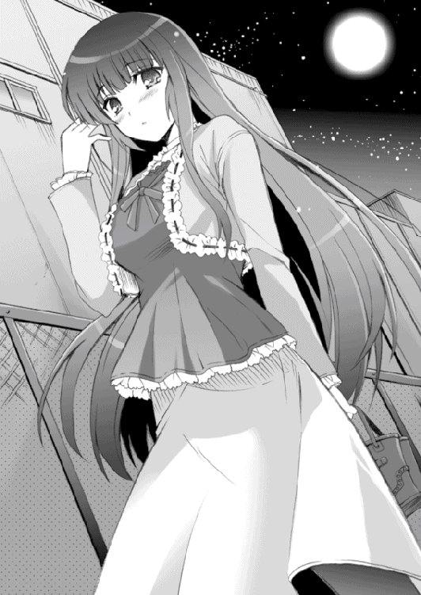
よく見てみる。
その顔を凝視する。
「お、お、おおおおお、おまえ、は......」
上げた指先が震えていた。いや、指先だけではなく、俺の全身は激しく震えていた。
「た、た、た、た、た、たつ......」
震える声を声帯から絞り出す
「たつ、たつ、たつつ、たつたつたつ............た、たつきち？」
「ああ、そうなんだ」
シホリ姫――いや葉山辰吉は、俺から目をそらし、言った。
「............」
俺はフリーズした。あまりの精神的ショックのせいで、すべての脳細胞が一斉に自殺してしまいそうだった。
辰吉は再びカツラを頭につけてから、
「お、驚くのは当たり前だよな。で、でも、これが俺のもう一つの姿なんだ」
「な、な、なんで......だ、だ、だって、肌の色が、いつもより、白いし......」
「これはファンデーションで肌色を整えているんだ」
「えぇ？ ま、ま、睫毛、だって、な、長いし......目の雰囲気も......」
「繊維入りのマスカラをつけて睫毛を長く見せているんだ。目元はリキッドアイライナーでアイラインを入れたり、アイシャドーを塗ったりしてる」
「ま、ま、まま眉毛だって、出現して......」
「これはアイブロウペンシルで描いてるんだよ。普段剃ってるのだって、本当は眉毛を描くためなんだ。俺はけっこう眉毛が濃かったから、女装をするときそれが気になっててな。不良っぽい外見にするためというのは、ただの言い訳なんだよ......」
俺はあんぐりした。
「少し前に、繁華街のデパートで会ったことがあっただろ？ あのとき、俺は咄嗟に母の日のプレゼントだと言ったけど、本当は自分で使う化粧品を買いにいってたんだよ。そんなときにおまえと会ったから、すげえ焦ったんだ」
「え......？ で、でも、あれにはプレゼント用の包装が......」
「あれは、店員が『どなたかへのプレゼントですか？』とか訊いてくるから。まさか自分で使うんですなんて言えないから曖昧にうなずいたら、『でしたらプレゼント用の包装をさせていただきましょうか？』とか言ってきて......それで、断るとなんか変に思われるかもしれないと考えて......」
なるほど。だから、あのときの辰吉は様子がおかしかったのか。
「で、で、でも、なんで女装なんか......」
「......俺の初恋は小学三年生のとき、相手は近所に住む一人前のメイクアップアーティストを目指していたお姉さんだって......前におまえに言っただろ？」
辰吉は俺とは目を合わさないまま、言う。俺はうなずいた。
「そのお姉さんがな、俺の顔が女の子みたいにかわいいと言って、俺が家に遊びにいくたびに長い髪のカツラをつけたりメイクをしたりしたんだ。あと、スカートとか女の子用の服を買って俺に着させたりもした」
「は、初恋のお姉さんが？」
「ああ。で、完全に女の子の姿になった俺を見て、お姉さんはかわいいかわいいって喜んでくれたんだよ。俺も、お姉さんが喜んでくれるのがうれしかったから、だんだん女装をするのが好きになっていった」
「............」
「でも......ある日お姉さんは実家に帰っちゃって、俺の前から姿を消してしまった」
遠くを見るようなまなざしで、辰吉は言葉を落とす。
「俺はそれがすごく悲しくて、すごくすごく悲しくて、それで、俺がかわいい女の子の姿をしていれば、もしかしたらまたお姉さんが俺に会いにきてくれるんじゃないかと......バカみたいだけど、子供の頃の俺は本気でそう思って、お姉さんがいなくなってからも一人で女装を続けていたんだ。それで長いことやってるうちに......なんか、いつの間にか、女装をするのが心地いい人間になっちまった」
辰吉は怯えるような目をしていた。
「俺は女装をするのが楽しいと感じている。でも、この趣味があんまり普通ではないということもわかってるんだ。だから誰にも言えなかった。けど、俺はおまえを親友だと思っていて、でもこの秘密を隠したままじゃ本当の親友にはなれないと思ってたんだ。しかも俺はおまえのドＭ体質のことを知っている。こんなのは不公平だ、なんか嫌だって、ずっと思ってたんだよ」
「............」
「でも自分の口からはどうしても言えない。だけど言いたいと思っている。二つの感情の板挟みで苦しんでた俺は、おまえがバイトに入ってる時間にわざわざ女装して店の前を通り過ぎるみたいなマネを繰り返したりもした。もしかしたら、おまえは気づいてなかったかもしれないけど......」
いや、気づいていました。美少女がいつも店の前を通っていたということは。
その正体が辰吉だったなんて夢にも思わなかったですけど。
「なんでそんなことをしていたのか、自分でもよくわからないんだけど......おまえが俺の女装した姿を見て、俺のことに気づいてくれないかとか、そんなことをちょっと期待してたんだと思う。バレるのは怖いけど、バレて楽になりたいともどこかで思ってる......最近の俺はすごく不安定だったんだ......」
「そうだったのか......」
俺はつぶやき、辰吉の小さな体を見下ろす。こいつの身長はそこいらの女の子と変わらない。だから女装してても違和感とか感じなかったんだが......それにしても......
「――そんなときだった。第二ボランティア部の噂を聞いたのは」
辰吉はぽつりと言った。
「桜守高校には第二ボランティア部っていう部活があって、そこでは生徒たちの願いごとを叶えたり相談に乗ったり懺悔を聞いたりしてくれる。それを知った俺は、すごく迷ったけど、第二ボランティア部に相談しにいくことにしたんだ」
「え？ お、おまえも第二ボランティア部に？」
「ああ。おまえがドＭ体質を治してくれるようにお願いしにいく一日前だよ」
辰吉も第二ボランティア部に......
「俺は自分の趣味が女装だということを先輩に告白して、そして親友の砂戸太郎っていう名前の男子にそのことを打ち明けられずに悩んでるって相談した。女装のことを言うのはすごく恥ずかしかったけど......石動先輩はとても優しそうで心から俺のことを心配してくれてるように見えたから、思い切って打ち明けたんだ。すると......」
辰吉はなんか微妙に乾いた笑みを浮かべ、
「あの先輩、急に豹変して......俺のことを指さして『変態、変態だわっ！』って大笑いしながら言いやがったんだ。ははは......」
「ああ、そう......」
俺も最初は先輩の猫かぶりに騙されたよ、うん。
「つーか、第二ボランティア部には結野もいただろ？ おまえ、結野にも自分の女装趣味のことを打ち明けたのか？」
「いや、俺が相談にいった日、結野は学校を休んでいたから部室にはいなかったんだよ。もし同じクラスの結野がいたら、さすがに告白することはできなかったかもな」
俺のときは結野もいたけど。まあ結野には俺がドＭ体質だってことがすでにバレちゃってるから、告白するのにあまり支障がなかった。気まずかったのは気まずかったが。
「で、バカ笑いしたあと、先輩はこう言ったんだ。あたしが砂戸太郎という名の少年に接触して、あんたの女装のことを聞いてどんな反応をする人間か調査してやる。砂戸太郎はあんたの女装趣味を受け入れることができる人間か、そうではないのか、あたしが判断してあんたに報告してやる......って」
そうか。だから、先輩は俺の名前を事前に知っていたわけか。
「少し......というか、かぁなり不安だったけど、俺は先輩に任せることにした」
「な、なんでだよ？ おまえ女装のことをバカ笑いされたんだろ？ それなのに、どうして先輩に任せてみようとか思ったんだ？」
「ああ、そうなんだけどよ......でもさ、俺の願いを叶えてやるって言ったときの石動先輩の顔は、そう言ったときの先輩の顔だけは、すげえ力強くて頼もしくて真剣に見えたから......だから、先輩に任せてみようとかちょっと思っちまったんだよ」
「............」
そして――ほんの少しでも石動先輩が頼りになるかもと思った辰吉は、俺にまで第二ボランティア部のことを教えたってわけか。
「でも、翌日に料理部の先輩から石動先輩の悪い噂を聞いて、もしかしたら俺はとんでもない過ちを犯してしまったんじゃないかと思った」
「おまえからの電話でそのことを聞いたときは、俺もそう思ったな......」
「だけどな......さっき、石動先輩から俺の携帯に電話があったんだ。そして、いま砂戸太郎についての調査が終わった、と言った」
辰吉は顔を上げ、俺の顔をまっすぐ見つめる。
「石動先輩はこう言ってたよ。――砂戸太郎は、変態のブタ野郎だって」
「............」
「奴はどうしようもないほどのマゾ野郎で究極の変態生命体ではあはあ言いながらドＭの快感に悶えるその姿は直視できないほどキモくてクレイジーであれは神様の最高失敗作に間違いないからさっさと死んでほしい」
「あ、あの人は、なんてひどいことを......」
「あいつは確かに史上最悪のド変態だけど、でも――あんたに女装趣味があるというだけであんたのことを嫌いになったりするような、そんな奴ではない」
「え......？」
「砂戸太郎はこう言ってた。中学生の頃、自分のドＭ体質がクラスメイトにバレて迫害されたとき、親友だけが自分といっしょにいてくれた。自分はそのことを心から感謝している。だからその親友にどんなことを告白されても、自分はそれを受け入れてあげたいと、そう思っている。――だから、葉山辰吉、あんたの心配はただの杞憂よ」
「............」
「そ、その言葉を聞いて、俺は決心したんだ。太郎に俺の秘密を打ち明けようって。お、俺は、太郎と本当の親友になりたいから。そ、それで、石動先輩が、太郎は今日急にバイトが入ったらしいということを教えてくれたから、ちょうどいいと思って、コンビニまでやってきたんだ......で、でも......」
辰吉の体は小刻みに震えていた。
「いざとなると、やっぱり怖くなっちまって......それで、思わず逃げ出しちまった。だけど、おまえが追いかけてきてくれて、そして俺を掴まえてくれて......これはもう、言うしかないと思ったんだ。ちゃんと秘密を打ち明けろって、神様が言ってるような気がしたんだよ......」
「そうか、だから......」
だから、さっき肘で殴られたときもドＭ体質が目覚めることはなかったのか。俺が快感を覚えるのは身内以外の女性だけ。俺の無意識は、シホリ姫が女性でないということを見抜いていたというわけか。
「あっ、じゃあ......あの用事って......」
いまようやくわかった。石動先輩が言っていた『用事』ってのがなんなのか。
部室で先輩から受けた不自然な相談――
あれこそが、その用事だったのだ。
「......へっ......へへへっ......」
自然と笑いがこみ上げてくる。いま思えば、なんて下手な誘導だったのだろう。しかもその誘導にうまい具合に乗っかっちまった俺もアホだし。
「た、太郎？ ど、どうしたんだ？」
辰吉が慌てた様子で言ってくる。
こいつもこいつだ。こんな、まどろっこしいことしやがって。しかも女装趣味って......
「女装趣味ってなんだよ。おまえ、変態じゃねえのか？」
言うと、辰吉が傷ついた顔を見せた。
「でもな......」
にやっと笑う。
「ドＭの変態野郎よりは、だいぶマシだろう」
「え......？」
「ほんっと、おまえはバカだな。女装趣味ぐらいで俺が引くかってーの。そんなことぐらいで引いてたら、代々ドＭの血を受け継ぐ家系に生まれた俺なんて生きていけねえよ。まったく、そんなことさっさと打ち明けちまえばよかったんだよ」
「............」
その言葉を聞いた辰吉は――ぶわっと涙をこぼした。
俺は辰吉が泣くところなんてはじめて見たので、少しうろたえてしまった。
「た、太郎ぅ......たろぉ......」
「な、泣くな。そんぐらいで泣くな」
「だ、だ、だってよぉ......」
えぐえぐと泣いてしまった辰吉の頭を、俺はぽんっと叩く。
「ほんとに、女装趣味ぐらいでよ......女装趣味......ぐらい......で......」
そのとき――俺はやっと気づいた。遅まきながら認識した。
俺が恋をした少女。初恋の美少女。
それは......辰吉ってことになりますよね？
俺の初恋の相手は、女装した男、だった......？
「――はうわっ！」
俺は両手で胸を押さえてのけぞった。
「ぐ、ぐおおっ！ そ、そんなっ！ そんな失恋ってっ！」
は、はじめて本気で好きになった女の子が......そんなことって......
「お、おい太郎！ ど、どうしたんだっ!?」
「な、なんでもない......ううう......」
俺はその場にしゃがみ込み、胸の痛みに必死に耐えた。
さようなら......俺の初恋......
午後十時が過ぎ。
アルバイトを終えた俺は、自宅に向かって夜道をとぼとぼ歩いていた。幸い、仕事を途中で放り出して辰吉を追いかけたことは店長にはバレていなかった。もしバレていたら首になっていたかもしれないので、たすかった。
だが――
「う、うう......」
やばい。油断すると泣き出してしまいそうだ。
「ん？」
自宅の門戸の前に、誰かが立っている。
それは――石動先輩だった。
「石動先輩？ どうしてここに......」
俺は先輩に近づく。先輩は、不機嫌そうな顔で、
「遅い。十分も待ったわよ。この美緒様を二桁分まで待たせるなんて何様のつもりよ。クソ変態様のくせに」
......いや、そんなこと言われても。そもそも約束もしてないし。
石動先輩は上下とも赤いジャージを着ていた。そして、その上着の胸にはどこかの中学校の名前が入っている。
「先輩......そのジャージって」
「ん？ これはあたしが通ってた中学校のものよ？ まだ着れるから部屋着として使ってるんだけど......なに？ あんたのくせに、あたしのファッションにケチつける気？」
「い、いえ......そんなことより、先輩はどうしてここに......？」
「ふんっ」
石動先輩は両手を腰に当て、そっぽを向きながら、
「――で、どうなったのよ？」
「へ？」
なにを言ってるのかわからない。
「どうなったってなにがですか？」
「葉山辰吉のことよ。あんたに自分の秘密を告白したんでしょ？ それで、あんたたちの関係がどうなったのかちょっとだけ気になったのよ」
口を尖らせるようにして、先輩は言う。
「......どうって、別に普通ですよ」
と、俺は言う。
「そりゃあ聞いたときはすげえ驚いたけど、べつに辰吉に女装趣味があったからって気持ち悪いとか思わなかったし、俺たちの関係が変わることもない。あいつはこれまでもこれからも、ずっと俺の親友です」
変則的な失恋のショックはまだ癒えていないけど、それとこれとは関係ない。
「ふうん、そうなんだ......」
つぶやく先輩は、どこか安心したように表情をゆるませていた。
そうか、辰吉から相談を受けて女装趣味を告白することを勧めたのは、石動先輩だったな。だからその結果が気になってわざわざ俺の帰りを待ってたのか......
なんか、意外な一面だな。そんな真剣に辰吉のことを考えていたなんて。
「......辰吉は、帰り際にこう言ってましたよ」
そんな石動先輩の穏やかな表情を眺めていると、自然と口から言葉が流れた。
「女装趣味を告白できたのは、石動先輩のおかげだって。第二ボランティア部に、先輩に相談して、本当によかったって。辰吉はとても先輩に感謝していました。あいつ、とても晴れやかに笑ってましたよ」
「............」
「先輩？」
石動先輩は、右手で口元を隠すようにしながら、俺から顔を背けていた。先輩の耳たぶは真っ赤になっていた。そして、
「やば。いまの、すっげえうれしいかも」
思わず、というような感じで先輩の口から言葉が漏れる。すぐにハッと我に返った先輩は、さらに顔を赤くしながら、ぽかんと先輩の顔を眺めている俺に向かってつぶやく。
「み、見んなよ、ばか」
その口調にはいつもの勢いはない。
その表情を見て、俺は思った。この先輩は確かに暴発ばかりで加虐的でひどい人かもしれないけど、生徒の願いを叶えたいというその気持ちだけは、嘘ではないのかもしれないと......不覚にも、そんなことを思ってしまった。
そして――これも不覚なのだが、俺はいま顔を赤くしている石動先輩を、美しいではなくてはじめて『かわいい』とか思ってしまったのだ......
「......なにニヤニヤしてやがるのよ、気持ち悪い。なあに？ もしかして、あたしに鞭でしばかれてる妄想でもして、一人で楽しんでたの？ やだ超キモくて吐きそう」
......前言を撤回します。
「あっ、そうだ」
石動先輩は俺を見つめ、
「あんたに言っておくことがあったんだ」
「え？ なんですか？」
「あんた、今日から第二ボランティア部の部員になったから。そういうわけだから、放課後は毎日部室に顔を出しなさいよ」
「......へ？」
この人はさらっとなにを言ったんだ？
「ちょ――ちょっと待ってくださいよ！」
「なに？ 感謝の言葉を言いたいの？ よし、言え」
「違います！ どうして俺が第二ボランティア部に入らなきゃならないんですか!?」
なんで俺が、こんな先輩のいる部活なんかに......
赤いジャージ姿の石動先輩は腕を組みながら、
「あんたはあたしにこう言ったでしょ？ 自分のドＭ体質を治してくれって。あたしはすごくがんばったけど、あんたがあまりに変態だったせいで、その願いを叶えることはできなかったわ......でも、完璧主義者のあたしは、こんな終わり方には納得できないっ！ だから、あんたを第二ボランティア部に入れてあげることにしたのよっ！」
理解不能な論理だった。
「......なんで俺のドＭ体質を治すために、俺が第二ボランティア部に入らなくちゃならないんですか！ もういいから放っておいてください！」
「あたしは神様だからあんたのアホみたいな願いも叶えてあげたいと思ってるのよ。でも、いまのあたしには、どうすればあんたの超絶変態体質を矯正できるかわからない」
「それなら、もう放って――」
「だから、あんたを第二ボランティア部に入部させて、あたしやあんたや部員のみんなでいっしょに考え協力し合って、あんたのドＭ体質を治す方法を見つける。このあたしの優秀な頭脳で演算したら、これが最善だという結果が出たのよ」
あんぐりした。
「このあたしと同じ部活に入れてうれしいでしょ？ やっぱりあたしに感謝の言葉を言いたい？ よし、言え」
「あんたはアホですか！」
俺は思わず怒鳴り声を上げていた。
「絶対に嫌です！ ほかをあたってください！」
「ああ？」
先輩はギラリと刃物のような視線を向けてくる。
「ワールドクラスの変態ファンタジスタのくせに、あたしの提案を断るって言うの？」
「う......」
「正座しろ」
「え？」
「そこに正座しろって言ってんのよ」
「う、うう......」
俺はその場に正座した。悲しいドＭ男の性には逆らえなかったのだ。
「もう一度言うわよ」
石動先輩は美しい顔で、偉そうに腕を組みながら、傲慢そうに細い顎を持ち上げ――
「あたしだって嫌で嫌でしょうがないけど、あんたを第二ボランティア部に入れてあげる。勘違いしないでほしいんだけど、これはお願いじゃなくて命令よ」
「はあ、はあ、はあ、はあ......」
人を小馬鹿にするような笑みを浮かべながら、哀れなブタを見下ろすように――
「ゴミ変態のウンコ的存在が、この美緒様の命令に逆らうなんて百億年早いのよ。ここまで言ったらあんたみたいなアホでもわかるでしょう？ さあ、次に言うべき言葉はなに？ さっさと言いなさいよ、ブタロウ」
「はあはあはあはあはあはあはあ......はああああいいいいいいいっっっ！」
もう、我慢の限界だった。
「み、みみみ美緒さまあっ！ ぜ、ぜひっ！ ぜひこの哀れな畜生をあなた様の支配する第二ボランティア部の歯車に組み込んでやってくださいなっ！ そして未来永劫に続く快楽の鎖で俺を縛りつけてというか亀甲縛りというかとにかくこの卑しい下僕に大いなる癒しおうおうおうおおおおおおぉ――――っっっ！」
俺は地面に正座をしたまま、ぷるぷる全身を震わせ、両腕を高く掲げつつ、破滅的な笑みを浮かべながら、夜空を貫くほどの絶叫を上げていた。
「み、みみみおさま......じょうおうさまぁ......うへ、うへへへへ......」
完全に引いた顔をしている石動先輩を見上げながら、俺は思った。
ああ――俺は、なんて変態的な生き物なのだろう......
第二話 似たものどうしのディスタンス
「ふ......んんん......」
寝苦しい。
すげえ寝苦しいぞ。
「......うぐ......ぐぐぐ......」
寝苦しい――というか息苦しい。息が、できない......
「ぐぐ......ぐうぅう......ぶはァ――！」
あまりの息苦しさに目を覚ました俺は、
「な――っ!?」
自分の顔面がふにょっとしたものに拘束されていることに気づいた。
「こ、この......」
状況はすぐにわかった。このふにょっとしたものは女性の胸に間違いないというのは世界の法則。つまり俺は何者かに顔面を抱きしめられているわけである。こんなことをする奴は――
「あ、姉貴っ！」
俺は自分の頭に回されていた両腕をほどき、ベッドの上で上半身を起こした。
「いい加減にしろっ！ 俺のベッドに忍び込むなって何度も何度も......って、え？」
ベッドに沈むそのシルエットは、姉貴のものよりちょっと大きい。
それは姉貴ではなく、母さんだった。
「か、母さん!? 俺のベッドでなにしてやがるんだっ！」
「んー......」
寝ぼけ眼の母さんがゆっくりと体を起こす。いつも首の後ろで縛っている髪をいまは下ろし、着ているのは愛用の白いシルクパジャマ。胸元からはバストがこぼれそうだった。
「あ......太郎さん、おはようございますぅ......」
「おはようございますじゃねえっ！ 俺のベッドでなにしてやがるって訊いたんだよ！」
「え？ ああ、それはですね......」
あまり寝起きのいいほうではない母さんは、ぼんやり顔でふらふら左右に揺れながら、
「ついさっきですね、翻訳の仕事がやっと終わって......それで、あまりに疲れてたせいか、自然と体が太郎さんの部屋に......」
「なぜだっ！」
「たぶん、体が無意識に癒しを求めたんですぅー......ぐー......」
「寝るな！ 二度寝をするな！」
「す、すみません。本当に疲れてて......あれ？」
母さんは自分の下半身を見下ろして、微かに目を見開いた。
母さんはパジャマのズボンを脱ぎ捨て、下着姿だった。脱ぎ捨てられたズボンはベッドの脇に落ちている。
母さんは自分の下半身とズボンを交互に見たあと、再び俺を見つめ、
「太郎さんが......脱がしたんですか？」
「んなわけねえだろっ！」
「太郎さんったら、もう......うふっ」
「意味不明なリアクションするんじゃねえ！ それは母さんが勝手に脱いだんだろ！」
頬に右手を当てて顔を赤くする母さんに、俺は力いっぱい怒鳴った。母さんは眠ると下の衣服を知らずに脱いでしまうという癖があって、夏でも冬でも起き抜けのときはパンツ一枚の姿になってしまうのだ。
「とにかく、部屋から出ていきやがれっ！」
「ぐすっ。太郎さん、冷たいです......」
俺がベッドの上から母さんを追い出そうとしていると、部屋のドアが静かに開く気配がした。そちらに顔を向ける。
「太郎ちゃん、いっしょに寝よー......えっ、お、お母さん!?」
ドアを開けたのは姉貴だった。自分の枕を右腕に抱きしめるようにして持ち、呆然とこちらを見つめている。
「ど、どうしてお母さんが太郎ちゃんの部屋にいるんだよっ!?」
「おい......姉貴こそなんで俺の部屋にきたんだ？」
「それはもちろん、太郎ちゃんといっしょに朝の惰眠をむさぼるためだよ！」
ぐっと右拳を作り、きっぱりと宣言する姉貴。
「あらあら、そうだったんですか。でも静香さん、今日は私という先客がいますから諦めてくださいね。うふふっ」
姉貴は愕然とした顔で母さんを見つめ、震える声で言う。
「お母さん、どうしてズボンを脱いでるの......ま、まさか、二人は......」
姉貴は両腕で枕を抱きしめ、親の敵でも見るような目を自分の親に向けながら、
「ふ、不潔っ！ 不潔だよっ！ 実の親子が、そんな......」
と、予想通りに意味不明なことを言ってきた。
「ごめんなさいね、静香さん。でも、心に嘘はつけないの......」
「ダメだよ！ 母と息子はダメだよ！ 姉と弟ならオッケーだけど！」
「どっちもダメに決まってるだろうがっ！ 血がつながってる二人はオッケーにはなりませんから！」
「わたしは太郎ちゃんの義理の姉――っていう設定にしてもいいよ！」
「じゃあ私、太郎さんは亡くなった親友の息子っていう設定にします！」
「なんだよ設定って！ わけのわからないことを言ってるんじゃねえ！」
そのとき、ふと時計を見やると――午前七時四十分。
「ぬぉおおぉおっ!? え!? なに!? もうこんな時間なの!?」
やばい、また遅刻してしまう......俺の脳裏には全身からプロテインオーラを放ちながら怒髪天を衝く担任マッチョの姿が......
「あああああああっ！ やばいやばいよぉ！」
俺は母さんと姉貴を部屋から追い出し、急いで制服に着替えた。
月曜日。憂鬱な週のはじめである。
なんとかぎりぎりで遅刻をまぬがれたのはラッキーだったかもしれない。授業もつつがなく終わり、放課後になった。憂鬱な月曜日も無事に終了――昨日までならば。
だが、本格的に憂鬱になるのは、これからだった。
「はぁ......」
目の前にある扉を憂鬱な顔で見つめる。第二ボランティア部の扉を。
石動先輩の言葉によれば、俺は今日から――正確に言えば昨日からか――第二ボランティア部の部員ということになっているらしい。だから、放課後は必ず部室に出てこいと言われた。それに逆らえばあの頭のおかしい先輩はなにをするかわからない。下手をすれば俺のドＭ体質を全校生徒にバラすなんてことも......
「ううう、それはダメだ......」
だから、嫌で嫌でしかたないが俺は部室に顔を出さなければならない。この扉を開ければ待っているのは不幸な未来だけ。それはわかっている。わかっているのだが......
「はぁ......」
もう一つ弱めのため息をついてから、俺は扉を開けた。
「――遅い」
椅子に座っている石動先輩が、俺の顔を見るなり言う。
先輩は極上に不機嫌そうな顔を、微かに右に傾けた。亜麻色の長い髪がさらりと肩を下りていく。殺意の宿った二重の瞳が、俺の全身を圧倒する。自分のことを神様だと称するいろんな意味で危ない超絶美少女、それがこの石動美緒先輩だった。
「変態ブタロウのくせに、この美緒様を待たせるなんて、どんなクレイジーな精神構造してるのかしら？ その腐った頭を粉砕して中身を見てみたいくらいよ」
「あう......」
怒ってる。かなり怒ってる。
「チッ。まあいいわ。今日のところはゆるしてあげる。このあたしの寛大な心に遺伝子が崩れるほど感謝しなさいよ、ブタ」
石動先輩はふんっと鼻を鳴らす。遺伝子が崩れるほど感謝って、どうすればいいの？
部室には先輩のほかに同じクラスの結野嵐子もいた。俺のドＭ体質が目覚めるきっかけとなった女の子だ。結野はむすっとした顔でうつむいている。彼女も先輩に負けず劣らず不機嫌そうだった。
あと、保健室にいるはずの鬼瓦みちる先生もなぜかこの部室にいた。彼女はいつも通りどこか気怠げに見える無表情を浮かべている。
「おら、変態。いつまでもそんなところに突っ立ってんじゃないわよ、さっさとこっちにきて椅子に座れ」
「あ......はい」
なんだか、部室はいつもと少し様子が違っていた。
どこから調達してきたのか、すごい大きなテーブルが部室の中央にどんっと鎮座し、三人はそこに着いている。そしてテーブルの前方には、ホワイトボードが置いてあった。なんだか会議室みたいなレイアウト。昨日まではこんなじゃなかったのに。
先輩にうながされ、俺は結野の隣に腰を下ろした。結野は露骨に嫌な顔をすると、椅子をずらして俺から少し距離をとった。あからさまに嫌われてるな、俺。
「よし......じゃあ、はじめるかっ」
言って、先輩はすくっと立ち上がった。ホワイトボードの前につかつか歩いていく。水性ペンを右手に握り「ふぉおおォ......」と大げさに気合いを吐いてから、
「でぁああぁああああ――っ！」
ずばっ、ずばっと鬼気迫る勢いでホワイトボードにペンを走らせた。
汚いが勢いのある文字でホワイトボードに刻まれたのは――
『第一回 砂戸太郎のドＭ体質を治すにはどうすればいいのか会議』
「............」
満足げな顔でペンを置いた先輩は、俺たちのほうに向き直り、
「さてさて。皆さんご存じのように、そこにいる砂戸太郎というしょっぱい顔した男は超弩級のド変態！ 変態業界からすれば十年に一人の逸材に間違いないザ・ブタロウ！ すべての人間に忌み嫌われる哀れな生き物でありますが、そんなブタに慈悲深いあたしたちが救いの手をさしのべてあげようという今回の企画！ それが『第一回 砂戸太郎のドＭ体質を治すにはどうすればいいのか会議』であります！」
無意味に力のこもった様子で声を上げる。
「そーゆーわけだから、なんかいい案が浮かんだ人は手を挙げるよーに！」
「はい」
と手を挙げたのは、基本的に無表情のみちる先生だった。
「おお、ゲストコメンテーターのみちる姉！ どうぞ！」
みちる先生はすくっと立ち上がり、落ち着いた声で言った。
「催眠療法を用いるのが最適と思う」
「催眠療法？ にゃにそれ？」
「催眠療法とは催眠――つまり暗示によって意図的に患者の意識をトランス状態に導き、患者の潜在意識にある悩みや心的問題の根本的な原因に接触し、解決・解放するという方法だ」
「うわ、なんか家畜にはもったいないくらいに本格的っ！ さっすが保健の先生であるみちる姉の意見ねっ！ で、その具体的な方法は？」
「具体的な......方法？」
みちる先生は顎に手をやり、しばし沈黙。
「......方法はこうだ。まず、患者である砂戸太郎を真っ暗な部屋の中に閉じこめる。床に固定された頑丈な椅子に座らせ、鎖やロープなどで逃げられないようにする。そのあと両耳にヘッドフォンをかぶせ、鼓膜が破けるほどの大音量で『俺のドＭが治る！』という声をエンドレスで流す。食事を与えず不眠不休でそれを三日三晩繰り返せば......いろんなことが解決して世界が平和に近づく。たぶん」
「なるほどっ！ それはいい案だわっ！」
「どこがだっ！」
俺は我慢できずに立ち上がり、怒鳴り声を上げた。
「それのどこが催眠療法だよっ！ ただの拷問だろうがっ！」
が、俺の抗議は無視され、先輩はいまの拷問案をホワイトボードに書き記す。
「ちょ、ちょっと先輩！ そんな案を――」
「じゃあ、次はあたしの意見を発表するわ」
石動先輩がにっと笑い、自信満々に言う。
「ここは一つ、発想を逆転させてみてはどうかと思うのよ。つまり、ブタロウのドＭ体質を治す方法を考えるのではなく――ドＭ体質が二度と目覚めない環境を作り上げればいい。これこそが発想の逆転！」
「ドＭが二度と目覚めない環境とは？」
みちる先生が尋ねると、
「うん。ブタロウは女性から加虐を受けるとドＭが目覚める体質。ならば......」
先輩はびしっと人差し指を俺に向け、言った。
「この変態をもう二度と女性と接触させなければいいのよっ！ そうすればドＭが発動することは絶対にないわっ！」
みちる先生と結野が「おお～」と感嘆の声を上げる。おい、ちょっと待て......
「だがな、美緒。どうやってそんな環境を？」
「それは簡単よ。この変態モンスターを地下室に一生監禁すればいいんだわ！ そうすればブタロウは生涯女性と接触することはなく、ドＭが目覚めることもない！」
「なるほど、完璧な案だな」
「うん、さすがは美緒さん」
みちる先生と結野が続けて言う。おい、おいおいおいっ！
「おまえらなに言ってやがるんだぁ！」
俺は立ち上がり、大声で叫んだ。
「地下室に一生監禁だとっ!? そんな寂しい人生嫌に決まってるだろうがっ！」
「じゃあ刑務所に一生......」
「却下！ なんでなにも悪いことしてないのに刑務所に入らなきゃならないんですか！」
「あんたは存在自体が犯罪みたいなもんじゃない」
「めちゃくちゃ言わないでくださいよ！ 頼むからもっとマシな案を考えてください！」
言うと、先輩は鬼の不機嫌顔になり、
「あんだとぉ？」
強烈な殺気を放ちながら俺のほうに近づいてきた。
左手で俺の首を鷲づかみにし、永久凍土の視線で俺を見下ろす。
「あんたみたいなもんのために、あたしたちがこんなにも知恵を振り絞ってやってるのに、なにその態度は？ あんたはまだ自分の身分ってもんがわかってないようね」
「あ、あう......」
先輩の左手に力がこもる。万力のようなその左手には俺の首をへし折るぐらいは簡単にやってしまいそうなポテンシャルを感じた。
石動先輩は右手に持っていたペンの先を俺の額に近づける。
「な、なにを......」
「なんかムカつくから、とりあえず額に『Ｍ』って書くのよ」
「ぶっ！ や、やめてくださいっ！ せめて『肉』にしてぇ――！」
「もう遅いわ。書いちゃったから」
「あ、あああ......はあ、はあ、はあ......」
「あら？ なあにその顔は？ 例によって例のごとく気持ちよくなっちゃってるの？ ほんっとマジで超絶キモいわね、この生き物は」
先輩は美しい顔に嘲りの笑みを浮かべると、乱暴に俺の体を突き飛ばした。
俺はえへらえへらと笑いながらバランスを崩し――
左手の指先が、隣に座る結野の体に少しだけ触れた。
「ヒッ――！」
結野の顔が一瞬で青くなる。そして。
「い、いいいいいいやあああぁああぁああぁ――っ！」
「ぞぼぁ!?」
結野の強烈な右拳が俺の顔面にめり込んだ。え、えぇ？ なんで僕ちん殴られて......
次いで強烈な肘打ちを腹に「げぼっ！」、激烈な掌底を顎に喰らい「がぶぃ！」、吹っ飛んだ俺の体がずぞぞぞっとテーブルの上を滑る。
「いやぁ！ こわいこわいこわいこわいよぉ――っ！」
ばっと空中に翻る結野の姿。
華麗に宙を舞った結野は、大の字になって倒れる俺の首に、全体重を込めた右脛を叩き落とした。恐ろしい衝撃が首を中心に全身に広がる。
「ぐべぶっ――！」
「ふえーんっ！ こ、こ、こわいよお！」
結野は右脛で俺の首をぐりぐりしながら、泣きそうな声で叫んだ。俺はその下でぴくぴく痙攣していた。
「あひ、あひひひぃ......げぶっ......」
俺はドＭ的オーバードーズによって生命の危機を迎えながらも、全身を巡る超快楽に酔っぱらいながら魂的には死んだ。
次の日の放課後も、嫌々ながら部室に向かった。
「......昨日はマジで死にかけちまったけど、今日はいったいどんな目に遭わされるのだろうか」
俺は一足早く部室をあとにしたのだが――昨日はバイトの日だったので早く帰らなければならなかった――あのあとも忌々しい会議は続けられたらしい。俺が帰る間際に聞いた会話では『浴槽いっぱいのミミズ風呂に閉じこめて......』とか『全裸の体をロープで縛って暴れ馬に......』とかいう意見が出ていた。俺はもう生きてこの部室を出ることはできないかもしれない。
そもそも、俺がドＭ体質を早急に治したいと思ったのは、初恋の相手に告白したいと考えたからだ。その目的がなくなったいま、俺の中のドＭを治したいという気持ちも前ほど強くは......
「いや、ダメだ。やっぱり俺は、この変態体質を治したい」
言って、ぐっと強く拳を握りしめる。やはりドＭ体質は治したい。こんな体質のままでは、クラスの女子と満足に接することもできない。女子が近づいてきただけで『もしなにかの拍子にドＭが目覚めちゃったらどうしよう......』とか思っておどおどするのはもう嫌だ。お年頃の男の子である俺としては、女の子ともっと仲良くなりたいのである。
それに、ドＭが治ってしまえば、あの頭のおかしい石動先輩につきまとわれることも、弱みを握られることも、高圧的な態度でいいように扱われることも、なくなるのである。
「やっぱり、ドＭを治す努力は続けるべきだな。うん」
が、具体的にどうやって治せばいいのかはわからない。
「......少なくとも、昨日のようなアホらしい会議でその方法が見つかることはないだろうな。はあ......」
俺はため息をついてから、部室の扉を力なく開ける。と――
「あら、ブタロウ。よくきたわね」
にこにこ顔の石動先輩が出迎えてくれた。隣にはみちる先生の姿もある。
「ねえねえ、あんたって好きな食べ物とかってある？」
なんだか不気味なくらいに上機嫌な先輩が、唐突にそんなことを尋ねてきた。
「え......？ 好きな食べ物、ですか？」
「うん」
「そうですね......しいて言えば、クリームシチューとか」
「ふうん、そう。じゃあさ、夕食にクリームシチューとかが出てきたらうれしい？」
「まあ、そりゃあ......」
なんだこの会話は？ 先輩の意図がまったく読めない。
先輩は腰の後ろで手を組みながら、ひょこっとこちらに一歩近づき、
「じゃあさ、それが次の日も出てきたらどう？ さらにその次の日も出てきたら？」
「へ？ ......三日連続ですか？ それはちょっと飽きるかも」
「さらに一週間、二週間、一ヶ月と続けば？」
「い、一ヶ月？ うわ、それはさすがに勘弁してほしいです。いくら好きでもそんだけ続けられちまうと、もう見るのも嫌になりますよ」
「うん、そうよねぇ」
石動先輩はにこっとほほ笑むと――
笑顔のまま、どごぉんっと力士の張り手のようなビンタを放ってきた。
「ばべっ――!?」
なすすべもなく吹っ飛ぶ俺の体。俺はぎゅるるると回転しながら部室の壁に激突し、べちゃっと床に倒れた。
「う、うわぁ......なんの脈絡もない打撃ぃ......予備動作のまったくない一撃にオイラまったく反応できなかったですぅ......えへ、えへへ......」
唐突に訪れた暴発快楽に、俺は破滅した笑みを浮かべている。
そんな俺の傍らに、石動先輩とみちる先生が立つ。
「ブタロウ、その汚い耳でよく聞きなさい」
先輩は俺を見下ろしながら、
「昨日、あんたが帰ったあともあたしたちは『第一回 砂戸太郎のドＭ体質を治すにはどうすればいいのか会議』を続けた。その議論は長きに渡り、終わった頃には午後八時を越えちゃってたわ。なんであんたみたいなダニ以下のゴミ小僧のためにそこまでしなきゃならないのかと苦悩したりもしたけど......会議は無駄ではなかった。あたしたちは素晴らしい作戦を考えついたのよ」
フッと笑みを浮かべ、
「その作戦とは、さっきのクリームシチューの話に集約される！」
「はへ......？」
「あんたは言ったわよね、いくら大好きなクリームシチューでも、一ヶ月も続けば見るのも嫌になると。つまり、そういうことなのよっ！」
「......？」
意味がわからなかった。
「まだわかんないのかこの愚か変態がっ！ つまり、いまの話と同じ要領であんたのドＭ体質を治してあげようってことなのよっ！」
「は？」
「あんたは女性から苦痛や加虐を受けると快感を得てしまう変態体質！ だが、その苦痛や加虐を何度も何度も何度も加えたらどうよ？ 答えは明白！ あんたは連続で訪れる快感に飽きてしまい、やがて快感を感じなくなってしまう！ その状態でさらに苦痛や加虐を加えると、あんたはきっとこう思うわ――もうやめてくれっ！ こんなことをされても気持ちよくないっ！ むしろ苦しいんだぁ！」
先輩は両腕を組みながら、うんうんとうなずき、
「こうしてブタロウは無事にドＭ体質を治すことができました。めでたしめでたし」
なんで昔話風な終わり方なの？ いや、それはどうでもいいとして......
「じゃあ、はじめましょうか」
と言った石動先輩は、床に倒れる俺に近づき、
「――ッ!? ちょ、ちょっとせんぱ......！」
俺の学生ズボンのベルトに手を掛け、それをカチャカチャ外しにかかった。そしてズボンを俺の足から抜こうと引っ張る。
「な、ななななにをするんですかっ!? や、やめてくださいっ！」
「うるせぇ、抵抗するんじゃないわよ。みちる姉、ちょっとこいつを抑えてて」
「了解」
みちる先生はうなずくと、俺の背後に回り、脇の下に手を入れて俺の体を抑え込む。
「ひ、ひぃ――っ！ い、いやぁ！ やめてぇ！」
先輩の馬鹿力によってズボンははぎ取られ、俺はパンツをむき出しにされた。すげえ恥ずかしくて、顔が熱くなっていく。
「みちる姉」
「ああ、上も不要だったな」
あまりの恥ずかしさに固まっている俺に、石動先輩とみちる先生は邪悪な表情を浮かべながら接近し、上の制服とその下のシャツにまで手を掛けた。
「え、ええええええ――っ!?」
俺はあっという間にパンツ一枚という姿になってしまった。
「ふうん。あんたはブリーフじゃなくてトランクス派なのねぇ」
俺の体を無遠慮にじろじろ眺めながら、先輩は言う。
「せ、先輩！ い、いいいいいったいなんのマネですかっ!?」
「うふふ......ブタロウ......」
「せ、せ、先輩、ちょ、ちょっと......」
ゆっくりと体をかがめ、石動先輩は俺に接近してくる。
ずいっと体を近づかせてくる先輩の気配に押されるようにして、いつの間にか俺は部室の床に仰向けになっていた。パンツ一枚という姿の俺の体の上に、妖艶な表情を浮かべた石動先輩が、四つんばいのような格好でかぶさってくる。
「あ、あう......」
魅惑的に弧を描く唇。非現実なまでに美しい先輩の顔が、俺の目の前にあった。さらりと落ちた長い髪が、俺の首筋をくすぐる。
「嵐子にはちょっと席を外してもらっているのよ。いまからはじまる惨劇は、年頃の女の子には強烈すぎるからね......」
いつもより色っぽく聞こえるような声で、石動先輩は囁く。先輩の右手は、俺の裸の胸の上に置かれていた。他人の体温の接触に、俺の体がびくりと震える。
「せ、先輩、俺になにをしようと......」
「心配しなくてもいいわ。気持ちいいのは最初だけ......すぐに地獄のような苦痛が訪れ、あんたは真人間に生まれ変われる......」
ふふふ、と先輩は笑う。
「――美緒。準備ができたぞ」
頭上からみちる先生の声が聞こえた。俺は首を曲げ、そちらに目を向けた。
そこには、なにやらとてつもなく大きな水槽みたいな透明なケースと、コンロの上でぐつぐつと煮える鍋が置いてあった。
「......？」
俺は首をかしげる。湯気が立っていることから、水槽の中には熱湯が入っているようだった。そして鍋の中には、おでん。どうやら奥の部屋に隠してあったものをこっちに持ってきたようだが......
「ふふ......会議であんたのドＭを治す作戦を思いついたあと、あたしたちはみちる姉の家でその具体的な方法を考えたのよ。さて、どんな方法であんたに苦痛を与えようかって。なかなかいい案が思いつかなかったけど、たまたまテレビでやってたバラエティー番組がその答えを教えてくれたわっ！」
言ってから、石動先輩とみちる先生は俺の体を抱えあげ――
熱湯に入ったケースの中に放り込んだ。
「げぶっ!? あ、あつ――っ!? あつつつつつあちぃぃいいゃいいいいぃ――――っ」
ケースの中の熱湯は尋常じゃない熱さだった。俺は熱湯の中でばしゃばしゃ暴れながら、ケースからはい出ようとする。こ、このままでは全身に火傷を負ってしまう！
だが。
「おらぁああぁあぁっ！ 逃げんじゃねーわよっ、このゴミ虫がっ！」
先輩が俺の頭を上から押さえつけ、力ずくで俺の頭部を熱湯の中に突っ込んだ。
「が、がば――っ！ ごぼごぼごぼごぼごぼ............！」
「おらおらおらおら――っ！ どうだ、熱湯風呂の威力はああぁああ――っ！」
「がぼごぼめぎがぶ............っ！」
あ、あああああ......顔面が燃える......というか息が......はあ、はあ、はあ......
ふいに先輩の手の力がゆるみ、俺は空気を求めてがばっと顔を上げた。やっと息ができたと思った瞬間には、また熱湯の中に沈められている。それを何度も繰り返された。問答無用の責め苦だった。あは、あはははは......
「も、もうやめてぇ――っ！ かんにんしておくれやすぅ！ うへ、うへへへ......」
全力で暴れて熱湯風呂から脱出しようと思えば、それはそうできたかもしれない。だが、俺の意識の根っこの部分が、この破壊的な悦楽をいつまでも味わっていたいと......
「よしっ！ 次の段階に進むわよっ！ みちる姉、ちょっと交代っ！」
「わかった」
俺の頭をおさえこむ役が、先輩からみちる先生に代わった。だが責め苦の苛烈さは変わらない。というか無表情で俺の顔面を熱湯の中に突っ込むみちる先生は人間的にどこか壊れてるのではないですか？ 俺は熱湯の中でもがき......はあ、はあ、はあ、はあ......
「ん？ あ、あれ？」
責め苦が唐突に終わる。あ、あれ、どうしたの？ も、もっとやってくれないと、ぼくちん物足りないじゃないでしゅかぁ......はあはあはあはあはあはあ......
「今度は――こいつをくらいなっ！」
と叫んだ石動先輩は鍋の中からおでんの具の一つ、コンニャクを箸で取り出し――
それを俺の口の中......ではなく、鼻の横あたりに押しつけた。
「あちゃ!? あちゃちゃちゃちゃちゃちゃちゃちゃちゃ――――――っ！」
「あははははははっ！ いいリアクションよ、ブタロウ！ ほら食いなさい！ 熱々のおでんを食いなさいっ！ あはははははははは――っ！」
「あびゃびゃびゃびゃびゃああああ――――――っっっ！ うひひひひ、さいこうだよぉおぉおおお――――っ！」
全身は熱湯風呂によって赤くなり、口の中には咀嚼不可能な温度のおでんの具を無理矢理つっこまれて火傷状態。おでんが引っ込むとまた顔面を熱湯の中につっこまれ、空気を求めて顔を上げれば再度おでん攻撃。もうめちゃくちゃだった。めちゃくちゃで、俺は完全に自分を見失っていた。
「こ、こここここんなのはじめてでやんすよぉおぉおぉ――――っ！ すっごい、すっごいのれすぅうぅぅううぅ――――っっ！」
気がつくと――
俺は砂浜に打ち上げられた腐乱死体のような格好で、床の上に横たわっていた。パンツ一枚という恥ずかしい姿。全身から湯気を放ちながら、口にはコンニャクをくわえている。
「え、えへへ......いきてるってなんだろうぅ......」
半笑いする俺の頭上で、先輩とみちる先生が話している。椅子に座り、呑気に鍋の中のおでんを食べながら。
「はぁ......こんだけやっても笑ってるわよ、こいつ。筋金入りの変態ね」
「そうだな。どうやらこの作戦も失敗に終わったらしい」
「あーあ、せっかくいい作戦だと思ったのにぃ......まあでも、おでんがおいしいから今回はよしとするか」
先輩はちくわをはむっと口に運びながら、ほくほくした笑顔を浮かべていた。
そのとき部室の扉がおずおずと開き、そこから顔を出した結野が、
「あ、あの、もう終わっ――ひっ！」
床にほぼ全裸で倒れる俺を見て、死ぬほど怯えた表情を浮かべ、大声で叫んだ。
「い、いやあぁああぁっ！ 変態がいるぅうぅう――っ！」
......そうです。俺が変態です。
部活の時間が終わり、俺は下校した。ようやく地獄の時間が終わったのだ。
「ううう、今日はひどい目にあった......本当にひどい目にあった......」
下校路をとぼとぼと歩いていると、ふと背後に気配を感じて、俺は振り向いた。
後ろには――結野がいた。
俺と四メートルほどの距離を開け、歩いている。
「......なによ？」
俺の視線に気づいた結野が、機嫌の悪そうな声で言ってくる。
「い、いや」
俺は慌てて前に顔を戻した。結野も電車を使っているわけだから、下校路が同じになるのは当然だ。当然なのだが......
俺はこそっと後ろに目を向けた。うつむき加減で歩く結野の姿が見える。
俺と結野の距離は四メートルほど。数分ほど前に見たときとまったく同じ間合いだった。彼女はずっと俺と同じ速度で歩いているということになる。
なんなんだよ。なんで俺と歩く速さを合わせてるんだ？
偶然、ってことはないと思う。なぜなら俺のほうが気まずくなって歩く速度を速くしたり遅くしたりしているから。それなのに二人の距離は変わらない。これは結野がこの間合いを保つように歩く速度を調整しているからだ。
ずっと背中を見られているのは嫌な感じだった。しかもその相手はあの結野なのだ。
そんなこと思っていると。
「――ねえ」
と、背後から声が聞こえた。
俺はビクッとなりながら、恐る恐る後ろを振り返った。
いまのは、間違いなく結野の声だった。
結野は唇を噛みしめ、どこか気弱そうに見える顔を俺に向けていた。どうやらいまの呼びかけは俺に向けられたもので間違いないらしい。
俺はかなり緊張しながら、その場で足を止めた。結野も立ち止まる。
四メールほどの距離を開け、俺たちは互いに気まずそうな顔で向き合った。
「............」
俺はしばらく結野の言葉を待った。だが結局、彼女は、
「や、やっぱりなんでもない」
と言って俺から顔を逸らした。
「なんなんだよ。言えよ。気になるじゃねえか」
「う、うっさいわね！ なんでもないって言ってるでしょ！ もうこっち見ないでよ！」
なんだよ、その言い方は。若干気持ちよくなっちまったじゃねえか。
俺は釈然としないまま前を向く。そして再び駅に向かって歩きはじめた。
駅にたどり着く。改札口を定期券で通り、プラットホームに向かった。
ちょうどやってきた電車に、俺は乗りこんだ。
「ラッキー。待たなくてすんだぜ」
車両の中に目を向ける。今日はいつもより少し乗客が多くて混雑していた。空いている席はないようだ。疲れていたので座りたかったのだが。
林立する背広姿の大人たちの向こうに、結野の姿があった。
結野は車両の一番端の壁に体を貼りつけるようにして立ち、どこか険しい表情をしながら窓の外を見つめていた。もう俺のほうには注意を向けていないようだった。
「あいつ、俺になにを言うつもりだったんだろうな......」
俺の降りる駅までは六つの駅を通過する。そのうちの三つの駅を通過したところで。
俺は結野の様子がおかしいことに気づいた。
車両の壁にすがりつくようにして立ち、全身が微かに震えている。目を大きく見開き、唇を強く噛みしめていた。その顔は真っ青。いったいどうしたんだ？ 気分でも悪くなったのか？
電車が次の駅に停車する。
ドアが開くと同時に、結野は口元を手で押さえながら駅のホームに降りていった。結野は俺と同じ駅を使っているので、なにも用事がないならここで降りる必要はないはずだ。
駅のホームに立つ結野の後ろ姿が見える。体を折るように丸めたその背中は、とても小さく見えた。小さく華奢な、女の子の背中だった。
俺は――
「......ええいっ！ くそっ！」
ドアが閉まる寸前、駅のホームに飛び出した。
どうしても放っておけなかった。あんな小さな、弱々しい背中を無視することは、どうしてもできなかったのだ。
電車が走り去っていく。
駅のホームには俺と結野しかいなかった。俺はゆっくりと結野に近づいていった。
「......結野」
そっと声をかけると、小さな背中がびくりと震えた。
「え......？ さ、砂戸？」
青ざめた顔に、驚きの色が加わる。
「ど、どうして？ あんたが降りる駅、ここじゃないでしょ？」
「......おまえの様子がおかしかったから、放っておけなかったんだよ」
目をそらし、小さな声で言う。なんかちょっと照れくさかった。
「とりあえず、そこの椅子に座れよ。気分悪いんだろ？」
「え？ う、うん」
結野はぽかんとしたまま、ホームにある五人掛けの椅子の端っこに座る。俺はその反対側の端に座った。
その横顔をのぞき込む。まだ顔は青かったが、体の震えは消えているようだった。
「いったいどうしたんだよ？ 電車に酔ったのか？」
尋ねると、結野は「......違う」とつぶやくように言った。
「電車じゃなくて......男の人に酔ったの」
え？ 男の人に酔った？
「それって、どういうことだよ？」
「男の人がいっぱいいたから......だから、我慢できなかった」
ふう、と結野はか細い息を吐く。
「......わたし、男の人が怖いの」
言ってから――
自分の失言に気づいたように、結野はハッと表情を強ばらせる。
「男の人が怖いって......？」
「う......こんなことあんたに言うつもりなかったのに、口が滑っちゃった」
結野は、はぁ、と諦めたようなため息をついてから、
「わたしね――男性恐怖症なの」
と、淡々とした声で言った。
「だ、男性恐怖症？」
「うん。だから、電車の中とか密閉された空間に大勢の男の人といっしょにいると、気分が悪くなっちゃう。それで我慢できなくなって、電車を降りちゃったの」
「気分が悪くなるたびにいちいち電車から降りてるのか？」
「......いつも、ってわけじゃないけど。体と心の調子がいいときは我慢できるときもある。でも、今日はダメだった」
「............」
じゃあ、もしかして......
「も、もしかして、遅刻や欠席が多いのも、そのせいなのか？」
「そうよ。我慢できないほど気分が悪くなったら電車を降りてちょっと休むの。どうしても気分がよくならないときは、しょうがないから学校を休む」
「そうだったのか......」
つぶやいてから、俺はあることを思い出す。
保健室で、第二ボランティア部の部室で、俺を殴りつける結野の姿。
小刻みに体を震わせながら、「怖い」と何度も口にしながら、いまにも泣き出しそうな顔で、結野は拳を振り上げていた。じゃあ、あれも......
「それじゃあ、おまえが保健室や部室で俺を殴ったのは......」
「あ、あれはっ！」
結野は顔を赤くしながら、一瞬声を張り上げる。
が、その声は結野の体とともに小さく萎み、
「あれは......あんたが、わたしの体に触ったから......」
どこか弁解するような感じで、もじもじ言う。
「わ、わたし、男の人に触られると、怖くなってその男の人を無意識のうちに殴っちゃうの......だ、だから、あんたを......」
「む、無意識のうちに殴っちゃうって、なぜに......」
「......なんとゆーか、殴られる前に殴ってしまえというか、正当防衛というか......」
「............」
あれで正当防衛が成立するなら、法治国家としての日本は終わります。
「そ、そんな顔しないでよ......わたしだって、ちょっとは悪いと思ってるんだから......」
口を尖らせながら、ううーっと唸る結野。どうやら少しは罪の意識があるみたいだ。
それから、結野はうつむき、口を閉ざした。どうやらまだ気分が悪いらしい。
俺は苦しそうにしている結野の横顔を見つめた。
男性恐怖症――なぜこいつはそんなものを抱え込んでいるのだろうか。
しばらくして、駅のホームに電車がやってきた。
「......電車、きたわよ」
結野がうつむいたまま言う。彼女は立ち上がろうとはしなかった。
「おまえは乗らないのか？」
「......まだちょっと気分が悪いから、わたしはもう少しここで休んでく」
電車が止まり、ぷしゅーと音を立ててドアが開いた。
電車から降りる人々。電車に乗り込んでいく人々。俺はホームの椅子に座りながら、その流れを見つめていた。
電車が駅から離れていく。ホームには俺と結野だけが取り残された。
「なんで乗らなかったのよ？」
なぜか怒ったような口調で、結野が言った。
「このままおまえを放って帰ったなんてことが先輩やみちる先生にバレたら、なんかすげえお仕置きをされちまうような気がするからだよ」
俺は言って、ふん、と鼻を鳴らした。
それきり、俺たちは黙り込んだ。
「............」
「............」
長い沈黙が降りる。
「――ねえ」
やがて、結野が俺に話しかけてきた。
「あんたの下の名前って、太郎っていうんでしょ？」
「え？ あ、ああ。そうだけど」
「タロー......って呼んでいい？」
「はい？」
俺はぐりんと首をかしげた。
「な、なんでだよ？」
なぜ急にファーストネーム？ もしかしてこいつ、自分のことを心配して電車を降りてきてくれた俺の優しさに感動して、惚れてしまったとか......
「わたしが子供のときに飼ってた犬の名前がね、タローっていうの」
「......は？」
犬の名前、ですか？
結野はうつむき加減のまま、真剣な顔でなにやらぶつぶつとつぶやきはじめた。俺は耳を澄ましてそのつぶやき声を拾った。
「こいつはタロー。犬のタロー。ただの犬っころ。犬の中でも最下級の犬っころ。人間じゃない。男じゃない。だから怖くない。隣にいても平気。喋っても平気。だってこいつはただの犬畜生。だから怖くないこわくないこわくないこわくない......」
「............」
こ、こいつ、自分の恐怖心をかき消すために砂戸太郎はタローって名前の犬だっていう自己暗示をかけてやがる！ いくら男が怖いからってなんて失礼で自己中心的な奴なんだ！ ちょっとひとこと言ってやる！
俺は憤慨しながら、結野の目の前で四つんばいになった。
「は、はいっ！ 俺はただの犬っころです！ 最下級の犬畜生ですっ！ ワン！ ワンワン！ お、俺は犬のタロー！ お手でもお回りでもなんでもやりますので、どうかなんなりと命令してくださいっ！ お、お願いします！ わぉーんっ！」
結野はぽかんと目を見開き、ホームで犬のマネをする俺を見つめていた。
「――ハッ!?」
我に返った俺は、がばっと立ち上がった。弾かれたように首を左右に巡らし、周囲を見渡す。幸いなことにホームは無人で、いまの俺のどうしようもない姿は誰にも見られていないようだった。
「ち、ちくしょう！ またやっちまったっ！ ドＭが目覚めちまった！」
俺は頭を抱えながら、椅子に座る。
「あ、あんたって......」
結野はぽかんとした顔のまま、言った。
「本当に、ドＭの変態なのね」
いまさらなにを言ってやがる。おまえはその当初から知ってるじゃねえか。
「お手でもお回りでもなんでもやりますだって......わぉーんっだって......」
結野は椅子の上で体を丸めた。全身が小刻みに震えている。あれ、どうしたんだ？ また気分が悪くなったのか？
「ぷっ......あは、あははははは！ な、なにいまの！ バカじゃないの！ も、もうダメっ！ おなか痛いっ！ あはははははははは――！」
結野は両手でおなかを押さえ、細い足をぱたぱた振りながら、爆笑していた。
目尻に涙の粒をくっつけながら、結野は笑い続けている。
俺は「そんなに笑うんじゃねえよ」とそっぽを向きながら、こいつの笑った顔を見るのははじめてだなと心の中で思っていた。
両目を細め、大きな口を開けて結野は笑っている。教室での無愛想な顔からは想像もできないほど、その笑顔は明るく、華やかだった。
基本的に結野嵐子という女はすごく美少女だ。
その美少女の笑顔に、俺は思わず見とれてしまっていた。
「......あ」
俺の視線に気づいた結野が、笑顔を引っ込める。
「ご、ごめん。怒った？」
「いや......」
俺は結野から目をそらした。まさか「あなたの笑顔に見とれてただけです」なんてこと言えるはずがない。
またもや沈黙の時間。が、今度の沈黙はさっきよりもあたたかいような気がした。
やがて。
「ねえ、タロー」
「ワンッ！ ――じゃなくて、なんだよ？」
「あのさ、ちょっとあんたにお願いがあるんだけど」
「お願い？」
こいつが俺にお願い？ どんなお願いだ？
「あ......もしかして、下校路で俺の後ろをついて歩いてたのも、そのお願いをするためだったのか？」
「う、うん。じつはそうなの」
結野は俺の目を見て、
「ほんとは、あんたなんかにこんなこと頼みたくないんだけど」
じゃあ頼むな。そう言いたかったが、まあここはスルーしておいてやる。
「ええっとね......」
結野はしばらくもじもじしてから、言った。
「も、もうすぐ中間テストがあるじゃない？」
「ああ、あるな。ちょうど一週間後の二二日から」
「うん。そ、それでね......」
「なんだよ？」
「べ、勉強を教えてほしいの」
「は？ 勉強？」
結野はうつむき、少し顔を赤くしながら、
「わ、わたしってさ、遅刻とか欠席とか多いでしょ？」
「いまんところ学年トップクラスの遅刻率と欠席率だろうな」
「だから、ノートだってあんまりとってないし、テストの範囲だって正確にはわかってない状態なの。授業だってぜんぜん理解してないし。このままじゃあ赤点確実よ」
まあ確かに、あれだけ遅刻や欠席を繰り返せば当たり前だろう。
「それで、仕方なくあんたに勉強を教えてもらおうと思ったの。あんたなんかに頼るのは死んでも嫌なんだけど、こればっかりはしょうがないわ。わたし、クラスに話せる人が一人もいないからノートを借りることもできないし試験範囲も曖昧なままでテストを受けなきゃならない。これじゃあ間違いなく赤点よっ！」
「死んでも嫌ならやめとけよ。おとなしく赤点とればいいじゃねえか」
「絶対にイヤなのっ！」
ずいっと俺に顔を近づけ、叫ぶように言う。
「ホームルームで中山先生が言ってたでしょ？ 赤点とったら放課後に補習だって......」
「ああ、言ってたな」
「も、もし、クラスで赤点をとったのがわたしだけだったら、どうなると思う？」
「どうなるって......だから補習だろ？」
「放課後に教室で補習......それを監督するのは、あの中山先生なのよ！ でかくて筋肉質で絶対主食がプロテインで男性ホルモン出まくりの中山よっ！ あんなのと放課後の教室に二人っきりなんて......その場面を想像するだけで......」
結野の体がガクガクブルブル震えはじめた。
「わ、わたし、窓から飛び降りるわ！ 絶対に飛び降りるもんっ！」
なるほど。男性恐怖症である結野からすればそのシチュエーションは最悪かもしれない。
「赤点をとるのが嫌なんじゃなくて、補習が嫌なのか」
「そうよ！ だから、吐きそうなほど嫌だけどこうやって頭を下げてあんたにお願いしてるんじゃないっ！」
「吐きそうなほど嫌って相当だな。つーか、勉強なら石動先輩に教えてもらえばいいじゃねえか。あの人は一応二年生なんだし」
「え......そ、それは......」
結野は言いにくそうな感じで、
「わたしもそう思ってちょっと教えてもらったんだけど、なんか美緒さんは、勉強が苦手みたいで......」
「ああ......」
なるほど、あの人はあまり勉強ができない人なのだな。簡単に言えばアホなんだな。
「だからお願いっ！ 一生のお願いっ！」
「でもなぁ......」
俺だってそんなに勉強ができるほうではないのだ。はっきりいって、人に教えてる余裕なんかないのである。
俺が迷いを見せていると、
「むーっ。こんなに頼んでるのにぃ......」
結野は不服そうにつぶやき、ひかえめに頬をふくらませた。そのあと、
「あ......そうか。こうすればいいんだ。美緒さんみたいに......」
ぱんっと両手を合わせ、なにか閃いたような顔をする。
そして、結野は立ち上がった。
腕を組み、目を細め、高圧的な態度で言う。
「タロー。無様な犬っころの分際で、このわたしの命令に逆らうっていうの？ あんたはわたしの下僕なんだから、おとなしく言うことをききなさい。このクズ野郎。服従の証明として、いまここで逆立ちをしなさい」
――その後の展開は言うまでもないだろう。
気がつくと、俺は逆立ちをしながら笑顔で結野の頼みごとを了承していた。
翌日の放課後。
「......どういうことなの？」
結野が、俺を睨みつけながら言う。ぞくぞくするような表情だった。
「ど、どういうことって、なにがだよ？」
第二ボランティア部の部室である。
俺は昨日の約束通り、結野の勉強を見てやることにした。勉強はこの部室でしようと昨日のうちに決めていたので、ここに集まったのである。
結野は俺に向けていた視線を少し移動させ、俺の隣に立つ辰吉のほうを見た。
勉強を教えることを了承したのだが、俺はあまり勉強ができない。だから助っ人として親友の辰吉を呼んだのである。
いまテストを受けても平均八十点以上はとれると豪語する辰吉は、これ以上ないほどの助っ人だと思うのだが......どうやら嵐子姫はそれが気にくわないらしい。
結野は手のひらを上に向け、くいくいと人差し指を曲げて俺を呼んだ。俺は辰吉の隣を離れ、結野に近づいた。
「ちょっと。なんで葉山くんまでいっしょなの？」
「あいつ、不良みたいな格好だけど、すげえ勉強できるんだよ。だから、勉強教えてもらうならあいつもいっしょのほうがいいと思って連れてきたんだ」
「なに勝手なことしてるのっ！ わたしが頼んだのは、あんたでしょ！」
「な、なんだよ。よかれと思って呼んだのに」
「......なぁ。もしかして俺は邪魔か？ だったら帰るけど」
辰吉が居心地悪そうな顔で言ってくる。
辰吉にはすでに結野が男性恐怖症だということは伝えてあるのだが、その話を聞いた辰吉はそんな結野にどう接すればいいのかと少し悩んでいた。だからここに来るのも渋々という感じだったので、拒まれれば絶対すぐ帰ってしまう。それだと俺が困る。
「邪魔じゃねえよ！ 帰らないでくれ！」
「そうか。なんか、すごく空気が悪いんだが......」
不安そうな辰吉と不機嫌そうな結野をなんとかなだめ、俺たちは試験勉強をはじめた。
俺と辰吉が並んで座り、向かいに結野が座る。机の上には教科書と、辰吉のノートのコピーが広げられていた。辰吉のノートは丁寧な字で書かれているし、すっきりと整理されているのですごくわかりやすい。さすが中身は超優等生の辰吉だ。
ちなみに、石動先輩は奥の部屋にいた。そこにはみちる先生もいる。
「うー......みちる姉。ほんとにこんな派手な服きなきゃならないの？」
「ああ。この衣装はきっと美緒に似合うと私は断言できる」
「い、嫌だなぁ......」
「文句を言わないでくれ。これ以上文句を言うなら、私は猫のノラ吉を召還しなければならなくなる」
「......みちる姉って、けっこうひどい人だよね」
そんな会話が奥の部屋から漏れ聞こえてくる。どうやら二人は部屋で撮影会をやっているらしい。まあどうでもいいけど。というか、二年生の石動先輩も俺たちと同じ日にテストがあるのに、勉強しなくてもいいのか？
――そして、しばらく三人で勉強を続けた。
「ね、ねえ。ここがわからないんだけど......」
結野がおずおずと数学の教科書を差し出してくる。俺は身を乗り出し、教科書に顔を近づけた。その瞬間、結野の体が少しだけ震えた。
「ん？ ああ、そこか......俺もよくわからねえ。辰吉、わかるか？」
「どれどれ......おまえら、そんな基礎的なこともわからねえのかよ？」
辰吉も俺と同じように身を乗り出す。結野の体がさきほどより大きく震えた。
「これはだな、つまり......」
結野の顔のすぐ近くに、辰吉の顔がある。
「この公式を使ってだな、ここの数値を導き出して......ん？ 結野、どうした？」
辰吉が怪訝な顔で結野を見つめる。結野は真っ青な顔で、ぶるぶると震えていた。ぎゅっと握りしめた両拳も震えている。
「や、やっぱり......ややややっぱり......」
そして――
「やっぱりダメぇええぇ――――っっ！」
椅子を蹴って立ち上がり、叫んだ。
「無理っ！ 無理よっ！ こんな狭い空間に男が二人！ しかもこんなに近い距離で！ 無理に決まってるじゃないっ！ 勉強どころじゃないわよおっ！」
と、結野は吼えたあと、
「もうイヤぁ！ ふえーんっ！」
半泣きで部室を出ていった。
「............」
俺と辰吉はぽかんとした顔を見合わせた。
と。
「あんたたち......」
地獄の底から響いてくるような声。俺と辰吉は恐る恐る振り返った。
石動先輩が仁王立ちで立っていた。しかもなぜかピンク色のゴスロリ衣装を着ていた。
「せ、先輩......その格好は......」
「黙れ」
悪魔のような一睨み。じわりと変な汗が背中を伝う。
「ドＭのクソ変態と女装趣味のキモ変態の最凶コンビのくせに、嵐子を泣かすなんていい度胸じゃない......蛮勇としか言いようがないけど」
ゴキゴキと拳を鳴らしながら先輩は俺たちに一歩近づく。その体は一流の闘気に包まれていた。俺と辰吉は「あわわわ......」とうろたえた。
「ちょ、ちょっと待ってくださいよ！ 俺たちが泣かしたわけじゃないです！ 俺たちは普通に勉強を教えていただけで......」
「そ、そうだよっ！ 俺たちはなんも悪いことしてねえぜ！」
「でも、嵐子は泣きながら出ていったじゃない......」
「そ、それはあいつが男性恐怖症だったからなわけでして......」
「そういうところもちゃんとケアしてあげつつ勉強を教えるのが、あんたたち変態タッグの役割でしょうが。あんたたちは嵐子に勉強を教えるって約束したのよね？ じゃあその約束は死んでも守れよ」
「お、俺は別に約束なんか......いえ、なんでもありません」
反論しようとした辰吉だったが、先輩の一睨みで沈黙した。
石動先輩は光り輝く闘気をすっと消し去り、
「ふんっ。まあ今日のところは勘弁してやるわ。が、しかし！ 明日もまたこんなことになったなら......お葬式用の写真を用意しておいたほうがいいわよ」
まったく冗談じゃなさそうな顔で、ゴスロリ先輩はそう言い放った。
俺と辰吉はがくがくと何度も首を縦に振った。
石動先輩は、ふんっ、と傲慢な感じで俺たちを一瞥したあと、のしのしと奥の部屋のほうへ帰っていった。
俺と辰吉は難しい顔をする。
さてさて――いったいどうしたものか。
どうやら結野は同じ空間に男子が二人もいるという状況が耐えられないらしい。ならば辰吉に協力してもらうという案は却下するしかないのか。だが、あまり勉強のできない俺だけではどうも......ううむ。困った。
「あ、そうだ。いいことを思いついた」
俺はその『いいこと』を隣にいる辰吉に伝えた。辰吉はぎょっとした顔で、
「なに言ってるんだっ！ そんなの嫌に決まってるだろうが！」
「頼むよ、辰吉。もうこの方法しか残されてねえんだ。マジで頼むっ！」
俺は手を合わせ、頭を下げた。必死だった。もし、俺の教え方が下手で結野が赤点をとってしまったら......たぶん俺は石動先輩に殺される。
だから、もうこの方法しかないのだ。
そして翌日の放課後――
「結野。これならおまえも大丈夫だろ？」
俺は得意げにそう言った。
第二ボランティア部の部室。結野は俺の言葉も耳に入らない様子で、俺の隣に立つ人物をぽかんと見つめている。同じ部屋にいる石動先輩とみちる先生も驚いた顔をしているように見えた。
俺の隣には美少女が立っている。
長い髪を揺らす、清楚で整った顔立ちをした少女。まるで男性の願望をそのまま具現化したような、理想的な美少女だった。
が、一つ残念なことがある。
それは、この美少女の正体が男だということだ。
「わざわざ辰吉に女装してもらったんだ。どうだ？ どこからどう見ても女の子だろ？ これなら、おまえもこいつを男と意識せずにいられるんじゃねえのか？」
「本当に......この子が葉山くんなの？」
結野はまだ信じられない様子で、女装した辰吉を凝視している。
――俺が思いついた『いいこと』。それがこれだった。
辰吉に女装させ、結野の恐怖心を薄れさせる。そのために辰吉には自前のメイク道具とカツラを学校まで持ってきてもらい、部室で女装してもらったのだ。
「葉山くんの趣味が女装だってことは美緒さんから聞いて知ってたけど......ま、まさか、これほどのクオリティーだったなんて......」
結野は目を丸くしながら、まじまじと辰吉の姿を眺める。
「うわぁ、すごい綺麗......わたし、こんな綺麗な女の子、美緒さん以外には見たことないかも」
「男だけどな」
「あ、あんまり見ないでくれ。恥ずかしいから」
辰吉は顔を赤くしながらうつむく。その仕草がまたかわいらしいのだ。
「ちなみに、いま彼が着ている衣装を提供したのは私だ」
と、みちる先生が軽く片手を上げる。
「前に美緒用に作ったもので、美緒のほうが葉山辰吉より少し身長が低いのでサイズが合うか心配だったが、どうやら大丈夫のようだな」
奥の部屋にあるクローゼットの中には、これまでみちる先生が作った衣服が何着か保存してあった。今回、その中の一着を借りたのである。
いま辰吉が身につけているのは、西洋の貴族が着ているようなイメージの豪華なドレス。女装した辰吉はどちらかといえば日本的な美人なので――まったくの余談だが石動先輩は西洋系な感じの美人に見える――こういうドレスは似合わないのではないかと思ったのだが、それは間違いだった。いまの辰吉は人形のようにかわいらしい。
俺は結野のほうに顔を向け、
「どうだ結野？」
「う、うん。これならなんとか大丈夫かも。だって、ほとんど女の子だもん。声も男の子じゃないみたいに聞こえるし」
「まあ、もともと辰吉はちょっと声が高いからな」
「で、でもこの服、なんかすげえ動きづらくて、勉強会には向かない気が......」
と、辰吉が自分の姿を見下ろしながら言う。
「しょうがねえだろ。みちる先生が、おまえにはその服しか貸さないって言うんだから」
「君にはその服が一番似合う。私の第六感がそう告げたのだよ」
と、みちる先生はどこか得意げな感じで言う。
「ううう......で、でも、いまの俺ってなんか変じゃねえか？」
なおも不安そうな辰吉がつぶやく。
「そんなことねえって」
「うん、そうよっ！ すっごくかわいいから！」
なんだか普段より興奮している感じの結野が、力のこもった声で言う。
「嵐子の言うとおりだ。いまの君はかなり美しい」
「そうね、なかなかだわ。まああたしほどではないけど」
みちる先生と石動先輩が続けて言う。
女装辰吉は部室にいる一同の顔を見回し、
「え......？ 俺って......綺麗なのか？ 美しいのか？」
「ああ、そうだよ」
「そっか......」
辰吉は少しだけ体を震わせながら、
「俺、これまで女装した姿で人に会ったことなかったから......な、なんか人に綺麗って言ってもらえるのって、すげえうれしい気がする......」
そうか、こいつはずっと女装趣味のことを隠してきたんだもんな。
俺はほほ笑みながら、
「いまのおまえは綺麗だよ。そこいらの女子よりも全然美人だぜ」
「うん、タローの言うとおり。知らなかったな、葉山くんがそんな美少女顔だったなんて」
「あとで写真を撮らせてくれ。君の美しい姿を保存しておきたいんだ」
「まあ、あたしほどではないけどねぇー」
辰吉はどこか呆然とした様子で俺たちの讃辞を聞いたあと、
「俺は......美しい......」
自分の両手を見下ろすような格好で、ぶるぶると体を震わせていた。
「う、美しい......とても美しい......」
その震えはだんだんと大きくなっていく。
「えーっと......辰吉？」
なんだか様子がおかしい辰吉に声を掛けるが、応答はない。
「お、おお俺は......わたくしは......」
辰吉はぐわっと両腕を広げ背筋を反らせると、
「うううつく、うつくし、美しいフォオォオオォオォオオオォ――ッ！」
と、大気が震えるほどの叫びを天に放った。
「............」
あんぐりしながら辰吉を見つめる俺たち四人。辰吉は気持ち悪いぐらいに反らせていた背中をこれまた気持ち悪い動きで元に戻したあと、口元に右手を当て、
「オーッホッホッホッホッホッ！」
優雅に高笑いを上げた。
「そうですわっ！ わたくしは世界一美しいっ！ さあ愚民ども、究極に美しいわたくしにもっと賛辞を送りなさいっ！ それがあなたたち下々の者どもの仕事であり幸せでありますのよっ！ オーッホッホッホッホッホッ！」
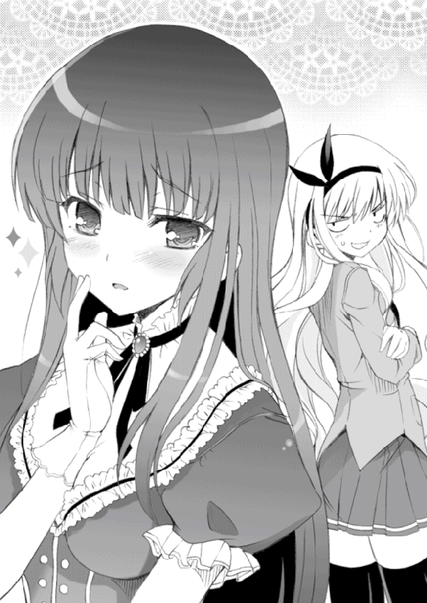
「......あ、あの、辰吉さん？」
「平民風情が気安くお声を掛けないでくださる？ まあ貴族であり超越的美女のわたくしにお言葉をもらいたい、人格を認知されたいという願望は理解できますけど、いかんせんあなたの身分は低すぎますわ。もし来世で貴族に生まれ変わることができましたら、そのときはダンスをご一緒してあげてもよろしくてよ？ オーッホッホッホッホッホッ！」
「............」
あっ、変な人格出てきちゃった。
「――ああん？」
と、底冷えのするような声を放ったのは石動先輩だった。
「愚民ども？ 貴族？ 女装趣味の変態小僧がなに言っちゃってるのよ？」
のしのしと辰吉に近づき、魔人のような瞳で辰吉を睨みつける。
が、辰吉は余裕の笑みを口元に貼りつけ、
「あなた、悪いけどあまり近づかないでいただけます？ わたくし、平民の臭いには慣れていないものですから」
「ほほう......」
石動先輩はにこりと笑顔を見せた。それは殺すと決めた相手に見せる笑顔だった。
「どうやら命が惜しくないようね」
「言ってる意味がわかりませんわ。ごめんなさいね、一般大衆が使用するスラングのたぐいにはあまり精通していませんの。そんなことよりもあなた、もっと離れてくださる？ わたくしの芸術的に端正な顔を間近でご覧になりたいという気持ちは理解できますけど、残念ながらわたくしとあなたでは住む世界が違いすぎますのよ。オーッホッホッホッホッホッ！」
「確かにあたしとあんたでは住む世界が違うわよね。あんたが生息する変態フィールドなんかじゃあたし生きていけないもの。芸術的に端正な顔だぁ？ 女装した男に過ぎないあんたがなに言っちゃってるんだか。オーッホッホッホッホッホッ！」
なぜに先輩も高笑い？
「ふふんっ」
鼻で笑ったのは辰吉だった。
「真実の美は、性別の差など超越してしまうものですわ。それに、あなた......」
言って。
辰吉は、目の前にいる石動先輩の胸をぐわしぐわしと揉みしだいた。
「......！」
俺も、結野も、そして当事者である石動先輩までもが、死ぬほど愕然とした顔で辰吉を見つめる。俺と結野はなんか顎が外れたみたいになっちゃっていた。
「ずいぶんと貧しい胸をお持ちのご様子ですけど、あなたこそ本当に女性なのですか？」
「な、なな、ななななな......」
「確かに、美緒の胸は小さいな。まあ私はそこも含めてかわいいと思うのだが」
と、一人だけ冷静なみちる先生がつぶやく。
「せっかく女性に生まれたのに、このような貧相で不憫なバストしかお持ちでないなんて、わたくし心から同情してしまいますわ。せめて普段はパッドでも入れてごまかしたほうがよろしくなくて？ それともわたくしのような貴族に同情されるのが狙いかしら？ オーッホッホッホッホッホッ！」
辰吉は右手で石動先輩の胸を揉みしだきながら、左手を口元に当てて高笑いする。あ、あいつ、なんてことを......
ぎらりと禍々しい光を放ったのは、石動先輩の双眸だった。
電光石火――フルスイングの鉄槌のような拳が、高笑いする辰吉の顔面を陥没させる勢いでめり込んだ。
「――っ！」
悲鳴を上げる間もなく半回転した辰吉は、部室の床に後頭部を墜落させた。やけに生々しい鈍い音が室内に響き渡った。
「て、ててててててめぇ！ キモ変態の分際で、あ、あああたしの胸を、胸を、もみしだりゅりありぁあぁあ――っ！」
あまりの怒りのせいか後半は言葉になっていない。激怒した石動先輩は、顔を真っ赤にしながら、初撃で気絶した辰吉にスコールのような蹴りを放っている。
「ちょ、ちょっと先輩！ 落ち着いてください！ それ以上やったら辰吉がマジで死んでしまいますっ！」
「こ、ここここ殺すつもりでなぐりりゅりぃああぁあぁああ――っ！」
俺と結野とみちる先生の三人で、暴走した石動先輩を押しとどめる。このままでは部室が殺人現場になってしまう。というかもうなっちゃったかもしれない。
「お、おい、辰吉......大丈夫か？」
先輩をなだめるのは結野とみちる先生に任せ、俺は床に倒れたままぴくぴく痙攣している辰吉のそばに近づいた。打撃の衝撃で長い髪のカツラが外れてしまっている。
「え......？ あ、あれ？ 太郎、俺はいったい......」
「お、おまえ覚えてないのかよ？ いまさっきの自殺行為を」
「なんとなく心に残ってるけど、なんか記憶にもやがかかってる感じで......」
辰吉は頭を触りながらつぶやく。
「それにしても、体が鬼のように痛い......わけわかんねえぜ」
言いながら、辰吉は無意識な感じでそばに落ちている長い髪のカツラを手に取り、それを頭にかぶった。すると。
「オーッホッホッホッホッホッッホッ！ すぐに暴力に頼るのは、知能が低い愚民の証拠ですわ！ 学問を知らない動物の分際でこのわたくしに――」
俺は辰吉の頭からカツラをはぎ取った。
「ハッ!? お、俺はいったいなにを......」
「............」
どうやら辰吉は女装するとさっきの貴族人格が現れてしまうようになっちゃったみたいだ。女装趣味だけでも後ろ指さされそうなのに、そんな変な人格まで抱えることになっちまって......なんか不憫な奴。あんまり人のこと言えないけど。
――そんなこんなでいろいろあったが。
俺と結野と辰吉の三人は、当初の予定通り勉強会をはじめることにした。女装した辰吉と相性の悪い石動先輩には、勉強会のあいだは奥の部屋に引っ込んでもらうことにした。
女装辰吉は傲慢で高飛車で唯我独尊で誰かさんを彷彿とさせる困った人格の持ち主だったが、勉強はしっかりと教えてくれた。『愚民ども』とか『下々の者』とかいうセリフと耳障りな高笑いを我慢すれば、辰吉は優秀な教師だった。
木曜日。金曜日。土曜日は弁当持参で。日曜は休みなのにわざわざ学校に来て。俺たち三人は勉学に励んだ。そして――
今日は、五月の二一日。月曜日。
中間テスト一日前だった。
「......じゃあ、俺はそろそろ帰るぞ」
女装から普通の男子の姿に戻った辰吉が言う。時刻は午後七時を過ぎていた。
「ああ。いつも悪いな、辰吉」
「いいよ。でも、おまえも結野もまだ帰らねえのか？」
俺は結野のほうに目を向けた。結野はポツリと、
「もうちょっと残ってる。まだ不安なところあるし」
「俺はもう帰ってもいいんだけど......」
俺もまだ万全とまではいかないが、家に帰ってからでも勉強はできる。だが。
「ダメよ、タロー。あんたはまだ残ってなさい。あんたまでいなくなったら、わたしのわからないところを教える奴がいなくなるでしょ」
これだよ。命令口調だよ。
まあ、試験前はコンビニのバイトは休ませてもらっているので、別に遅くなってもかまわないのだが、それにしても言い方ってものがあるだろう。
「......先に帰っててくれ、辰吉」
「ああ。......おまえもいろいろ大変だな」
同情を込めた目で辰吉が見つめてくる。
「まあ二人ともがんばれよ。じゃあな」
「......ねえ、葉山くん」
帰ろうとした辰吉に、結野が声をかけた。
「ん？ なんだ？」
結野は少しのあいだ躊躇したあと、
「由美とは、まだ続いてるの？」
「え？」
辰吉がぽかんとした顔で結野を見る。由美？ 誰だそれは？
「いや、いまはもう付き合いは続いてねえけど......どうしておまえが由美のことを？」
「そっか。終わっちゃったんだ」
結野は淡々とした口調で言う。
「ごめん、変なこと訊いちゃって」
「あ、ああ......」
辰吉は釈然としない様子だったが、結野にそれ以上会話する意志がないらしいことを悟ると、「じゃあ」と短く言って部室を出て行った。
そうか。思い出した。
由美というのは、間宮由美。辰吉が中学三年生のときに付き合っていた女の子の名前だ。生徒会の仕事の関係で知り合って仲良くなり、交際することになった女の子。中学を卒業すると同時に、親の転勤でこの町を離れてしまった女の子のこと。
俺は結野の顔を見た。どうしてこいつが辰吉と間宮由美のことを知っているんだ？
「なあ結野。おまえ、由美って子のこと知ってるのか？」
結野は「うん......」と遠くを見るような顔でうなずき、
「友達なの。それでさ、由美と葉山くんがどうなったのかちょっと気になってて。最近電話とかで喋ってても由美からそういう話してこないから、どうしたんだろって」
「友達なのか......」
こいつにも友達がいたんだな。いつも教室では一人でいるので、こいつが友達と喋ってるところとかがなんか想像できない。
「――無駄口はこれくらいにして、さっさと勉強するわよ。もう試験まで半日ぐらいしかないんだから」
「お、おう」
それから、三時間が過ぎ――
「......さすがに、そろそろ帰らねえか？」
俺は肩をもみほぐしながら、結野に言った。
「......そうね。もう十時すぎてるし」
結野はううーん、と背中を伸ばす。
「じゃあ、美緒さんを呼んでくるね」
「ああ」
石動先輩はいつも俺たちが帰る時刻まで奥の部屋に居座っていた。勉強会が終わるまで部屋で暇を潰し、俺たちを待っているのだ。それはどうやら、男性恐怖症の結野を気遣ってのことらしい。
「ちょっと、美緒さん。もう帰るから起きてください」
「んー......もうちょっと......」
そんな会話が聞こえてくる。先輩は部屋で眠っていたようだ。
寝起きでぽーっとした顔をしている石動先輩が、部屋から出てくる。
「ふぁ......なんか中途半端に眠い。家に帰ったらちゃんと寝よっと」
この人は自分も明日からテストだということをわかっているのだろうか。
帰り支度を終えた俺たちは、第二ボランティア部の部室を出た。
外は真っ暗だった。もう十時を過ぎてるのだから当然だが。こんなに遅い時間まで残ったのははじめてだな。
校門を出て下校路を歩く。石動先輩とは家の方向が真逆なので、校門を出たところですぐに別れた。
俺の三メートルほど後ろを、結野が歩いている。
いつも部活から帰るときはこんな感じだった。俺の三メートルほど後ろを結野が歩く。いっしょに帰っているのかそうでないのか、微妙な感じだった。まあ最初は四メートルの距離だったから、それよりは進歩したのかもしれないが。
電車でも同じ車両に乗るのだが、距離は適度に離れている。
電車の中では、俺はいつも結野のほうばかり見ていた。前に気分が悪くなって車両を降りたことがあったから、なんか気になってしまうのだ。が、あれ以来結野が電車を降りたことは一度もなかった。
やがて、電車が俺たちの降りる駅に到着する。
俺と結野の帰り道は正反対なので、いつもここで別れることになる。駅前で俺が「......じゃあな」と一声かけ、結野がうなずく。それが別れの儀式みたいになっていた。
だが。
「――ちょっと」
と、結野が俺に話しかけてきた。
「ん？ なんだよ？」
結野は俺のほうは見ずに、自分の帰り道の方向に顔を向けていた。
「......この前、帰る途中に酔っぱらいに遭遇したの」
「は？」
「お酒くさいおじさんが、いきなりわたしに話しかけてきたのよ。あのときは、すっごく怖かった」
「ああ、そうなのか......」
こいつはなにが言いたいんだ？
そのとき俺は、結野の体がほんの少しだけ震えていることに気づいた。
結野は不安そうな顔で、真っ暗な帰り道を睨むように見つめている。
「............」
そういえば、勉強でこんなに遅くなるのは今日がはじめてだったな。
俺はため息をつき、
「ったく......送ってほしいなら、素直にそう言えよ」
「だ、誰もそんなこと言ってないでしょ！」
結野はそう叫んでから、
「......で、でも、どうしても送りたいって言うのなら、送らせてあげてもいいけど」
気弱そうな、不安そうな顔で、ごにょごにょと言う。
やれやれ。そんな言い方じゃあ、ドＭ体質も反応しねえよ。
「わかったわかった。ぜひ送らせてください、嵐子姫」
「しょ、しょうがないわね。そこまで言うなら、送らせてあげる」
どこかホッとしたような顔で言い、結野は帰り道を歩きはじめた。
俺は結野の隣を歩こうとしたが、
「ちょ、ちょっとっ！ 隣を歩かないでよっ！」
「な、なんでだよ。送っていくんだから、普通は隣に......」
「男が隣に立ってるなんて我慢できないの！ たとえそれが犬のタローだとしても！」
「じゃあ、どこを歩けばいいんだよ」
「わたしの四メートル後ろを歩きなさい！ そんだけ離れてれば我慢できるから！」
「でもよ......」
俺はちょっといじわるなことを言ってやろうと思った。
「そんなに離れてたら、もしおまえが酔っぱらいに襲われても、たすけにいくのが遅くなっちまうな。よそ見とかしてたら、おまえが襲われてることにさえ気づかないかも」
「え......？」
そんなことあるわけないのだが、結野は予想以上に顔を強ばらせた。
そして、しばらく思案したあと、
「......わかった。隣を歩いてもいい。で、でも、絶対に二メートル以上は離れなさいよ！ それ以上近づいたら訴えるから！」
別にそんなに結野の隣を歩きたかったわけじゃないし、訴えられても絶対に負けないだろうが――
「わかった。了解。二メートル以内には近づかねえよ」
俺は苦笑しながら言った。
そして、俺と結野ははじめて並んで歩いた。
ひと気のない暗い夜道を、とぼとぼと歩く。なにか話すにしては微妙な距離が横たわっているので、俺たちは無言で歩いた。
「あっ、そうだ」
途中で、結野が言う。
「ちょっとコンビニに寄ってもいい？」
「ん？ ああ、いいけど。なんか買うのか？」
「うん。今日の夕飯を買わなくちゃと思って」
「夕飯って......家の人は用意しといてくれないのか？」
俺がそう尋ねると、
「............」
結野はなにも言わず、ただ寂しそうな表情を浮かべ、うつむいた。
なんだ？ 俺、そんな悪いこと訊いちまったのか？
コンビニに寄ってから、再び並んで夜道を歩く。
駅から十分ほどのところに、結野の家はあった。
立派な二階建ての家だった。が、なぜかどの部屋にも明かりがついていない。
「えっと......あ、あれ？」
結野は制服のポケットや鞄の中をごそごそ探りながら、困ったような顔で首をかしげていた。
「なんだ？ どうしたんだよ？」
「うん......鞄の中に入れといたはずの家の鍵がね、ちょっと見つからなくて......」
「なくしたのか？」
「ううん、そんなことないと思うけど......どこに入れちゃったのかな？」
「つーか、家に鍵かかってんのか？ 家の人はいないのかよ？」
「え？ ......う、うん。ちょっとまだ帰ってきてないみたい」
「ふうん、そうなのか......」
つぶやき、結野の自宅を見上げる。確かに結野の家からは人がいる気配がしない。
「あっ、でも大丈夫よ。こーゆーこともあろうかと思って、合い鍵を置いてあるから」
言うと、結野は門戸を抜けてドアの脇に置いてある観葉植物の植木鉢を持ち上げた。
「いつもこの植木鉢の下に......ほらっ」
拾い上げた合い鍵を、ちゃらちゃらとこちらに向けて揺らす。
「備えあれば憂いなしっ......でも、鍵はどこいっちゃったんだろ？ たぶん鞄の奥にでも入ってると思うんだけど」
「あとでよく探してみろよ」
「うん、そうする」
言ってから、結野は合い鍵でドアを開ける――前に、俺のほうに顔を向けてきた。
「――ねえ」
「ん？ なんだ？」
「わたし、明日のテスト大丈夫かな？」
「そうだな......」
俺はちょっと考え、
「まあ、あれだけ勉強したんだから大丈夫だろ。少なくとも赤点はないと思うぜ」
「そっか......うん、そうよね」
結野は少しだけほほ笑み、うなずいた。
俺は片手をひらひら振り、
「じゃあ、俺もう帰るから」
「あ、うん――ちょ、ちょっと待って！」
「あん？ なんだ？」
まだなにかあるのか？
「あ、あの、ええっと......」
結野はこちらに体を向け、うつむいている。その顔は少し赤くなっていた。
「え、ええっとね、きょ、今日まで、勉強教えてくれて......あ、あ、あ......」
とても小さな声で、結野は言う。
「あ、あ、あ、あ、あり、あり......」
「はあ？ あり......なんだよ？」
そう俺が言うと、結野は、
「な――なんでもないっ！」
なぜか逆上しながら叫んだ。
「わ、わたしこれからまだ勉強するんだから、さっさと帰ってよっ！ じゃあね！」
結野は乱暴にドアを開け、逃げるように家の中に入っていった。
「やれやれ......」
つぶやき、苦笑する。
『ありがとう』って言葉ぐらい、もっと簡単に言いやがれ。
そして――三日間の中間テストが終わった。
「やっと終わったぜ......」
最後のテストを終え、俺は安堵の息を吐いた。
「で、感触はどんな感じだ？」
前の席の辰吉が、訊いてくる。
「そうだな......まあ、どの教科も平均点は越えてると思うぜ。なんとなくだけど。辰吉、おまえはどうなんだよ」
「俺はまあ、平均九十は固いだろうな」
当たり前のような顔で言いやがった。なんかむかつくぞ。
「そうだ。結野の奴は......」
俺は後ろの席に座る結野のほうに顔を向けた。
テストを終えたばかりの結野は無表情で、その顔からはテストの手応えを知ることはできなかった。どうだったのだろうか。最低でも赤点は――マッチョの補習はまぬがれたのだろうか。
結野が、俺の視線に気づいた。その瞬間。
結野はびしっとＶサインを俺に向けて突き出し、にこっと満面の笑みを浮かべた。
一瞬後、ハッと我に返った結野は耳たぶまで真っ赤にしてうつむいた。結野の近くにいたクラスメイトたちは、あんぐりした顔で結野のほうを見つめている。
「......どうやら、大丈夫そうだな」
「そうだな。あんなふうに我を忘れるほど喜んでるんだから、赤点はないだろうよ」
俺と辰吉は顔を見合わせ、言った。
放課後。俺と辰吉と結野の三人は、第二ボランティア部の部室に向かった。テストが終わったら部室に顔を出すように石動先輩に言われていたのだ。
部室では先輩とみちる先生が談笑していた。
俺たちの姿に気づいた先輩が、笑顔を見せる。
「嵐子、どうだった？ 赤点はまぬがれそう？」
「はい。思ってたよりできた感じだから、さすがに赤点はないと思います」
「そっか。嵐子は勉強がんばってたからね。えらいえらい」
言って、先輩は結野の頭を何度も撫でた。結野は心地よさそうにほほ笑んでいた。
「君たちはどうなんだ？」
と、みちる先生が無表情で俺と辰吉に尋ねてくる。俺たちは「まあできたほうです」とか、そんな返答をした。
「そうか。三人ともよくがんばったな。では、君たちにご褒美をあげよう」
いつもの抑揚のない声でそう言うと、みちる先生は俺たちになにかのチケットを渡した。
「なんですか、これは？ ......動物園の入場券？」
「ああ、そうだ。明日から一週間の試験休みに入るだろう？ だから明日、ここにいるみんなで動物園にでも行こうじゃないか。チケットは私のおごりだ」
「動物園ですか......」
しかも、ここにいるメンバーで。
「でも......」
俺は結野のほうをちらっと見た。
結野はチケットを両手で持ち、じっと見つめていた。はたしてこいつは、動物園に行くことを了承するのだろうか。先輩とみちる先生だけならまだしも、俺と辰吉もいっしょというのは、男性恐怖症のこいつにはつらいような気がするのだが。
ここは結野に気を遣って、俺と辰吉は辞退するべきなのかもしれない。そんなことを考えていると、
「動物園......」
結野はぽつりとつぶやいてから、にこっと笑顔を浮かべ、言った。
「みちる先生、ありがとう。明日、すっごく楽しみです」
あれ？ 結野の奴、やけに素直に了承したな。俺と辰吉もいっしょに誘われてるってこと、わかってるのか？
と。
「葉山辰吉。ちょっと話がある」
みちる先生が、くいくいと手招きして辰吉を呼んだ。
「はい？ なんですか？」
辰吉がみちる先生に近づいていく。
みちる先生は、なにやら辰吉に耳打ちをしだした。
「なるほど。わかりました。了解です」
辰吉はにやりと笑い、うなずいた。
「......なぁ、さっきの耳打ちはなんだったんだ？」
みちる先生から離れ、こちらに戻ってきた辰吉に尋ねる。すると、
「なんでもねえよ。まあ気にすんな」
辰吉は含み笑いをしながら言った。なんだよ、気になるじゃねえか。
「明日が楽しみだな、太郎」
言って、辰吉は俺の肩にぽんっと手を置いた。
翌日。
待ち合わせの場所に指定されたのは、俺の自宅近くにある駅前の広場。俺はその場所に一人でいた。午前十時に集合ということになっているのに、まだ誰もきていない。もう十時を五分過ぎてるのに。
「時間にルーズな奴らばっかりだな......」
広場のベンチに腰かけながら、つぶやく。
そのとき――見覚えのある少女の姿が、視界に入った。
小走りで広場のほうに向かってくるその人物は、結野だった。
結野はベンチの前までたどりつくと、何度か大きく息をついてから、
「ご、ごめん。ちょっと遅れちゃった」
「お、おう」
「あれ？ ほかのみんなはまだなの？ タローだけ？」
「え？ ああ、まだ俺だけしかきてねえ」
「......なんだ、そうだったんだ。あやまって損しちゃった」
「な、なんだよその言い方は」
言いながら、俺は私服姿の結野を改めて見つめた。薄黄色のシャツの上にピンク色のパーカを着て、下はハーフジーンズにスニーカー。胸元にはひかえめにアクセサリーが光っていた。走ってきたせいか、そのつるりとした頬はうっすらと上気している。
かわいい。
ふいに、そんな言葉が頭に浮かんでしまった。
って――なにを思ってるんだ俺は。こいつはあの結野嵐子だぞ。いきなり俺を殴ってドＭに目覚めさせた意味不明な少女で、しかもいまは俺のことを犬扱いする非人道的な少女でもあるんだぞ。そんな奴のことを、俺は......
心の中であたふたしていると、俺の携帯電話が鳴った。
それに一瞬遅れて、結野の携帯電話も鳴り出す。
俺たちはちょっと離れた位置で、お互いの電話に出た。
俺の相手は石動先輩だった。
『もしもし、ブタロウ？ ご機嫌麗しゅう？』
「先輩。もうとっくに待ち合わせ時間すぎてますよ？ 寝坊でもしたんですか？」
『嵐子はもうきてる？』
「ええ、ついさっき......」
『そう。じゃあ今日は二人でがんばってー。あたしもみちる姉も葉山も動物園にはいかないから』
「は？」
俺は一瞬ぽかんとしてから、
「ど、どういうことですか？」
『今日は、あんたと嵐子だけで動物園に行くのよ』
「わけわかんねえこと言わないでください！ どういうことか、ちゃんと説明をしてくださいよ！」
俺と結野だけって、どういうことだよ。
『よく聞きなさいよ、変態チャンピオン。これは、あんたたちの願い......あんたのドＭ体質の改善と、嵐子の男性恐怖症の克服カリキュラムの一環なのよ』
「な、なにを......」
困惑する俺に、石動先輩は静かな声で言った。
『あたしね、あんたたち二人はとてもよく似てると思ってるのよ』
「似てる？ 俺と結野が？」
『そうよ。女性からの苦痛や加虐によって快感を覚える変態体質であるあんたは、女性に近づくことに対してある種の恐怖感があるわよね？ そして男性恐怖症の嵐子は、男性というものの存在自体が怖くて仕方がない。二人とも異性に対しての恐怖を抱いているという点で、とてもよく似ているわ』
「だ、だからなんですか？」
『でも、人間には〝慣れ〟という機能が備わっているわ。どんなことであっても、何度も同じ刺激を受ければ人間は慣れていくもの。たとえ、それがほんの少しずつだとしてもね。そして、いまのあんたたちに必要なのは、異性に対しての〝慣れ〟ではないかとあたしは思うのよ。だからあたしはみちる姉と相談して、あんたと嵐子を二人っきりで動物園にいかせるという計画を立てたの。葉山には、昨日のうちに今日の計画のことは告げてあるから、奴が待ち合わせ場所にくることもないわ』
俺の脳裏には、部室でみちる先生に耳打ちされる辰吉の姿が映っていた。そうか、あのときに......昨日の辰吉の含み笑いの理由が、いまやっとわかった。
「異性に対しての慣れって......そんなことで......」
「もごもご言うんじゃないわよ、気持ち悪いわね。あたしの命令に反論はゆるさないわよ。これは、あんただけじゃなく嵐子のためでもあるんだから」
俺はちらりと結野のほうを見た。結野はまだ電話の相手と話している途中だった。
「そういえば......」
俺はふと思ったことを尋ねてみた。
「結野の奴は、どうして男性恐怖症になったんですか？」
彼女が男性恐怖症であるということは前から知ってるけど、その原因についてはまだなにも知らなかった。
『それを知りたかったら、自分で嵐子に尋ねなさい。簡単に人に頼ろうとするんじゃねーわよ、ブタ小僧』
「んなこと言っても......あいつ、俺が訊いても絶対に教えてくれませんよ」
『そんなことないと思うけど』
「え？」
『最近のあんたたち、なんかいい感じよ。嵐子もずいぶんあんたに心を開いてるように見えるし。だから訊いたら教えてくれるんじゃない？』
「......露骨に適当なセリフですね」
『ああ？』
「いえ、なんでもありません。すみません」
俺は反射的にあやまってしまっていた。
はあ、とため息。どうやら本当に先輩たちはこないようだ。やれやれ、なんでこんなことになっちまったのか......
と――
『嵐子の心の傷は、たぶんあんたが思っている以上に深いわ』
石動先輩は、唐突にそんなことを言った。声のトーンも真剣味を帯びている。
『......嵐子があたしに男性恐怖症を克服したいという願いをしにきたとき、神様であるこのあたしもどうすればいいのかわからなかった。でも、あの子をこのまま放っておくことだけは絶対にできないと思ったのよ。だから、第二ボランティア部に入部させた。いっしょにがんばろうって。いっしょに男性恐怖症を克服する方法を探そうって』
「............」
『ねえ、ブタロウ。あんた、嵐子の笑った顔を見たことある？ あの子の笑顔はね、それはそれはかわいらしいのよ。あの子には笑顔が一番似合う。だから、あの子にはいつも笑顔でいてほしいの。いつも笑顔でいられるような生き方を、してほしいのよ』
――いつか、駅のホームで腹を抱えて笑っていた結野の姿。
――テストがうまくいって、Ｖサインをしながら笑っていた結野の姿。
結野には笑顔が一番似合う。それは、俺も同じ意見だった。
『あんたが協力してくれるなら、嵐子の男性恐怖症を治す方法を見つけられるような気がする。そしてそれは、あんたのドＭ体質を治す道と同じ方向を向いていると思うのよ』
俺の、ドＭ体質を治す方法と？
『じゃあ、嵐子のこと頼んだわよ――太郎』
言って、石動先輩は電話を切った。
「............」
俺は無言で携帯電話を見つめる。「らしくなくて気持ち悪いですよ、先輩」と、携帯電話に向かってつぶやいてみた。
通話を終えたらしい結野が、俺のほうに近づいてきた。
「いま、みちる先生から電話があったの」
結野がうつむきながら言う。
「みちる先生から聞いた。今日は、わたしとあんたの二人だけだって」
「そう、か......」
結野にかかってきた電話はみちる先生からだったのか。たぶん、さっき先輩が俺にしたような話をみちる先生もしたのだろう。
「ど、どうする？」
俺はおずおずと声をかけた。石動先輩が俺に期待してるのはわかるが、結野がどうしても嫌だというなら、俺にはどうすることもできない。
結野はしばらく迷っていたが、やがて、
「......いく」
と、小さな声を落とした。
「あんたがわたしと二人っきりでいくのが嫌なら、やめるけど......」
「そ、そんなことねえよ。俺は......いいよ。二人でも」
なぜかちょっと照れながら、俺は言った。
なんというか......
つまり、これはデートというやつではないだろうか。
電車に揺られながら、俺はそんなことを思った。男子と女子が二人っきりで動物園にいく。これはもはやデートと呼んでも差し支えないのではないだろうか。
俺たちの向かう桜守動物園までは、電車で二十分くらい。桜守町で唯一の動物園である桜守動物園は町民たちのあいだではけっこう有名で、桜守町に住む人間なら誰もが一度は訪れたことがあるのではないかという場所だった。俺も何度か家族できたことがある。
やがて、電車が目指していた駅にたどり着く。
桜守動物園は、駅を出てすぐの場所にあった。
俺たちは入場チケットを渡し、園内に入った。
「動物園なんて、久しぶりだな」
園内を眺めながら、俺はつぶやいた。最後にきたのは、確かまだ父さんが生きていた頃だったと思う。
結野はきょろきょろと辺りを見回していた。どことなく体がそわそわしているように見える。なんか落ち着きのないガキみたいだ。
そして、俺と結野は園内を進んでいった。
――園内にはいろんな動物がいた。
ライオン、フラミンゴ、ダチョウ、カンガルー、アフリカゾウ。
久しぶりにきてみると、動物園はけっこう楽しかった。それに――
「うっわー！ ゾウ！ すっごいおっきーっ！」
結野は俺以上に楽しそうだった。
男に慣れるためにきたなんてことを忘れているかのように、俺のことなんかほっぽり出して動物園にいる様々な動物たちをキラキラした目で眺めている。
と。
常に俺から二メートルの距離を保って歩いていた結野が、ふいに俺のほうに近づいてきた。二メートルの距離が、半分の一メートルに縮まる。
「え？ お、おい」
「......み、みちる先生にね、言われたの」
結野はうつむきながら言う。
「わたしはもっと男の人に慣れないといけないって。今日、あんたと二人でここに向かわせる計画も、そのためなんだって。わたしが男性恐怖症を克服するために、美緒さんとみちる先生が一生懸命考えてくれたの......だ、だから、わたしも、少しだけがんばろうと思って......」
そうか。それで、少しでも俺に近づいて歩こうと。
うつむいた結野の輪郭が、微かに震えている。
「それに、あんたは犬みたいなもんだし」
「犬じゃねえよ」
へっ、と笑う。
そのときだ。
ぐるぐると園内を元気に走り回っていた五歳ぐらいの女の子が、結野の足にどんっとぶつかった。
「あ......」
バランスを崩した結野は、近くに立っていた人物の胸の中にぽすっと軽く倒れ込んだ。
近くに立っていた人物――すなわち、俺の胸の中に。
「............」
「............」
間近で見つめ合う、俺と結野。ぱっちりとした大きな瞳には、俺の顔が映っている。
「ふぅ......やれやれだぜ......」
俺はニヒルな笑みを浮かべ、ふっと息を吐いた。未来予知に近い精度で、一瞬後の自分の運命がわかってしまったからだ。
結野の顔がみるみると紅潮し、俺の胸にひっついているその全身がぶるぶると震え......
「い――いいいいいいやあぁああぁあああぁ――――っっっ！」
「ぞがぶ――っ！」
はい、見事に予想通り。結野の鉄拳によって吹っ飛んだ俺は、
「う、うひょー！ うひょひょひょひょーっ！」
ドＭの快楽に溺れた哀れなブタの笑みを浮かべながら、地面に倒れ込んだ。
だが......やはり未来を完璧に予測することなど誰にもできない。
地面に倒れながら醜く悶える俺のほうに、さきほど結野にぶつかった女の子がたたたたっと走り寄ってくる。よそ見をしながら走っているのか、地面に横たわる俺の存在にはまったく気づいていないようだった。そして――
「べぶぐぎょば――――っっっ!?」
えへへと狂ったような笑みを浮かべる俺の顔面を、女の子は無邪気な問答無用さで思いっきり踏みつけてくださった。
「あ......」
すぐに人の顔面を踏んづけたことに気づいた女の子は、ちっちゃな体いっぱいに申し訳なさそうな気配を漂わせて、
「お、おにいちゃん、だいじょうぶ？ ごめんね、あたし......」
「うふ、うふふふふふふ......」
「お、おにいちゃん？」
「うふふふフフフフオオォオォオォオオォ――――ッ！ イャッハァ！」
「――!?」
俺はがばりと起きあがり、女の子の小さな両肩にぐわしっと手を置いた。
「す、すんごいよおおおっ！ いまのすんごいよかったよキミィイイィイィッ！ ほ、ほんとマジできぃもちよくってぇ、お、おおおおにいちゃんは、おにいちゃんはもうアレだよ、はあはあはあはあ、お、お、おにいちゃんばあぁああぁ――！」
「ふ、ふぇ......」
「や――やめなさいよ、この変質者っ！」
「ぐぶぉ！」
結野の横殴りの一撃に、俺は再び吹っ飛んだ。結野は涙目になってしまった女の子の前にしゃがみ、優しく頭を撫でながら、
「だ、大丈夫!? ごめんね！ あああ、お願いだから泣かないでェ！ このおにいちゃんはね、ちょっとアレなの！ わ、悪い病気なのよ！ だからゆるしてやって！ ね？」
「ふぇ......おにいちゃん、病気なの？」
「そ、そそそうなのっ！ だから、お母さんに告げ口したり警察沙汰にするのだけは勘弁してやって！ お願いっ！」
「うん......わかった」
女の子は小さな手で涙をぬぐい、こくりと大きくうなずいた。
「おにいちゃん、早く病気が治るといいね」
「そ、そうね。どうもありがと」
「あっ、ママが呼んでるからもういくね。ママぁー！」
大きな声を上げて、女の子は遠くから手を振る母親のほうに走り去っていく。
結野は女の子を見送ってから、俺をジト目で見て、
「あんたって......」
「なにも言うな。言わないでくれ。俺だってヘコんでるんだ......」
俺は頭を抱え、その場にしゃがみ込んでいた。あんな小さくて心の優しい女の子に、俺って奴は、俺って奴は、ああああああ......
「ま、まあ、さっきのはわたしも悪かったから......あっ！ ねえ、タロー！ あそこ！」
と、結野が指さした先には『ふれあい広場』と記された看板が。
「ウ、ウサギに触れるんだって！ ウ、ウ、ウサギにっ！」
「ううう......ウサギ？」
「そう！ ふれあい広場ではウサギに触れますって書いてるの！ かわいいウサギさんとふれあうことで心が癒されますだって！ あんたの傷ついた心もウサギさんがきっと癒してくれると思うからいこっ！」
「わかったわかった」
俺たちはふれあい広場とやらに向かった。
係の人に案内され、ウサギが飼われてる柵の中に入れてもらった。
「ふ、ふおおおおっ......」
結野は地面にしゃがみ、ゆっくりとした動作でウサギを抱きかかえる。
「ほぉわぁ......」
とても幸せそうな顔をしていた。こ、こいつって、こんな奴だったっけ？
「わたしね......」
至福の笑みを浮かべながら、結野はほわんとした声で言った。
「じつは、動物がすっごい好きなの......」
「ああ......見てるとわかるよ」
「あったかくて、ふさふさで、やーらかいよぉ......」
俺もしゃがみ、ウサギを抱きかかえた。
「う、うぉ......こ、これは......」
確かに、かわいい。
なんか触ってるだけで幸福感に包まれるというか、癒されるというか......
「あっ！ おい結野！ 二〇〇円でウサギの餌が売ってるぞ！」
「えっ、そうなの!? か、買って！ 買いなさい！」
俺たちはウサギの餌を買い、それを手のひらに乗せた。
抱きかかえたウサギちゃんが、手のひらの餌をもすもすと食べる。
「あ......ああ......」
結野が変な声を出した。その両目は線みたいに細められていて、なんかとろけそうな表情をしている。
「かぁーいー。かぁーいいーっ。こ、ここに住みたい......」
「た、確かにこれはいいなぁ......」
俺たちはふれあい広場で確かな幸せを得たあと、食事処で昼食をとった。そのあともノンストップで動物巡り。すべての動物を制覇するつもりだった。
昼食から三時間ほどが経ち。
「さ、さすがにちょっと疲れたな......」
「そ、そうね......」
俺たちは喫茶店のような場所で休むことにした。
オープンカフェのように店外に置かれたテーブルに向かい合って座る。俺はアイスコーヒー、結野はオレンジジュースを頼んだ。
「やっぱり、動物園は楽しいわねー」
にこにこしながら結野が言う。普段の結野を見てる俺からしてみれば、今日の彼女はちょっと怖いくらいに上機嫌だ。
「おまえ、本当に動物が好きなんだな」
俺がそう言うと。
「うん......」
結野の表情に少しだけ翳りが見えた。え？ どうしたんだ？
「......昔、わたしがまだ幼稚園児だった頃にね」
結野は園内に目を向けながら、
「一度だけ、家族でここにきたことがあったの。お父さんとお母さんとわたしの三人で。あのときは、すっごく楽しかった。その頃からかな、わたしが動物好きになったのは」
小さな声で告げる。
「そのとき、お父さんとお母さんと約束した。また、絶対にこようねって。三人でここにこようねって......でも、結局、それから一度もこれなかった」
結野の視線は、園内ではなくもっと違うなにかを見つめているように思えた。
「だから、今日ここにくることができて、すっごくうれしいの。なんか、あのときの楽しかった思い出が、頭の中によみがえってきて」
「そっか......でも、どうして家族ではこれなかったんだ？」
「ん......わたしが小学校に上がってすぐに、お父さんとお母さんが離婚しちゃったから」
結野は寂しげな表情を浮かべた。
「そ、そうだったのか。わ、悪い」
「いーわよ、べつに」
遠くを見つめながら、結野は言う。
白く、儚い、結野の横顔。
こいつは、こんなに綺麗な顔をしているのに、どうしていまみたいに寂しそうな顔をすることが多いのだろうか。
――嵐子の心の傷は、たぶんあんたが思っている以上に深いわ――
「............」
俺はしばらくためらったあと、
「......なぁ」
ある種の勇気を振り絞り、結野に尋ねた。
「おまえはさ、どうして男性恐怖症になっちまったんだ？」
「え？」
結野の大きな瞳が、俺のほうに向けられる。俺は少し怯みながら、
「い、いや......なんかさ、ちょっと気になって。話したくないなら別にいいんだけど」
「美緒さんから聞いてないの？」
「ああ。おまえが男性恐怖症を治したくて第二ボランティア部を訪れたってことは聞いたけど、その原因とか背景とかはまったく聞いてねえ」
「そう......」
結野は再び俺から視線を逸らした。
それきり黙り込む。やはり、俺なんかには教えたくないのだろうか。まずいことを口にしてしまったと、俺はうつむいた。
が。
「......中学生のとき」
静かな声が、俺の耳に届く。
えっ、と顔を上げると、結野がまっすぐ俺を見つめていた。
「中学生のときのわたしってね、いまとは違って、どっちかというと活発で明るい子だったの。友達だっていっぱいいたし、クラスメイトとも仲良くやってた」
「あ、ああ......そうなのか」
「うん......」
結野は――俺に教えてくれようとしているのだろうか。
自分が男性恐怖症になった原因を。
俺は全身を耳にして、結野の言葉を待った。
「あんたは信じないかもしれないけど、男の子にだってけっこうモテてたのよ。ラブレターをもらったことだって、付き合ってくれって言われたことだって、何度かある。でも、中学生の頃のわたしは、そんなのにあんまり興味がなかったから、いつも断ってた。だけど......中学二年生のときにね、ある人に告白されたの。一年上の吉岡先輩。あんたも同じ学校だったんだから、吉岡先輩のこと聞いたことあるんじゃない？」
「えっ？」
あ......そういえば、確か一年上にモデルみたいにかっこいい先輩がいるみたいな話を聞いたことがある。その先輩は医者の息子で、成績も学年トップクラス。性格も明るくて優しいという完璧な人間だという噂だった。確かその先輩の名前が、吉岡。
「吉岡先輩は、放課後にわたしたちの教室にやってきて、みんながいる前でわたしに告白してきたの。二年生の教室を通りかかったときに、わたしの姿を見かけて、好きになったって言ってた。どうしてわたしなんかをって......正直、少し困ってた。吉岡先輩は確かにすごくかっこよかったけど、わたしはまだ男の子と付き合いたいとか、そういうこと思わなかったの」
でも、友達の女子たちは、当然わたしが吉岡先輩と付き合うだろうって考えてた。吉岡先輩を振る奴なんていない、いるわけない、みたいな感じで。みんな、わたしのことをうらやましいうらやましいって言ってたの――と、結野は語った。
「......それでね、いつの間にか、断れる雰囲気じゃなくなってた。わたしがなにか言うよりも先に『もちろんオッケーです、吉岡先輩と付き合いたくないって思う女子なんかいません』みたいなことを言い出す子もいて......わたし、どうしていいかわからなくなって、とりあえずその場では先輩の告白にうなずいていたの」
結野の視線は次第に下がり、組んだ両手の指に向けられていた。
「で、一応は、わたしと吉岡先輩は付き合うことになった。何度か電話で話したり、どこかへ遊びにいったりもした。でもね......わたしは、どうしても吉岡先輩のことが好きになれなかったの。だから、いつも居心地の悪い気分だった」
そんなある日のこと。
下校中、ふとした会話の流れで、結野は自分の両親は離婚していていまは父親と暮らしている、父親は仕事にいっているので昼間は家に誰もいないということを吉岡先輩に話した。すると吉岡先輩は、いまから結野の家に遊びにいきたいと言ったのだという。
「わたし、なんとなく嫌な感じがしたから、先輩の申し出を強く断ったの。でも、先輩はわたしから離れずに家までついてきて......結局、断り切れずに、先輩を家に上げてしまった......」
そう告げる結野の体が、小刻みに震えはじめた。
「お、お茶を飲んで、テレビを見てて......そ、そのときにね、吉岡先輩が、わたしにキスしようとしてきた......」
組まれた両手の指がせわしなく動く。その瞳は恐怖に揺れていた。
「わ、わたしは、そういうことするの嫌だったから、ごまかすように笑ってその場から逃げようとした。で、でも、先輩は、逃げるわたしを抱き寄せて、強引にカーペットの上に押し倒した......」
「............」
「わ、わたし、すごく怖くなって、メチャクチャに両手を振り回したの。そしたら、右手の小指の爪が、先輩の頬をかすめて......」
結野の体の震えは次第に大きくなっていく。
「せ、先輩の頬から、少しだけ血が流れて......そ、そ、その血を見た先輩は、急に怖い顔になって、右拳を、ふ、ふ、振り上げた......」
過去を見つめている結野の瞳から、大粒の涙がこぼれる。
「せっ、せせ、先輩は、怒鳴り声を、上げながら、わっ、わたっわたしの、顔を、殴った。な、何度も、何度も。こ、こここ怖くて、痛くて、わたしは小さく体を丸めた。せ、先輩は、頭とか、おなかとか、背中とかも、殴った......」
「結野......」
「せ、先輩は、赤黒く腫れたわたしの顔を見て、色気もへったくれもねえ、って言って、家から出ていった......わ、わたし、怖くて、ずっと小さく体を丸めてた。つ、次の朝までずっと、体を丸めてたの......」
「............」
言い終えたあと、結野は大きく息を吐いた。
「............」
「............」
園内から聞こえる、小さな子供のはしゃぐ声がとても遠くに感じた。
まるで、俺たち二人だけが世界から隔絶されているみたいだった。
結野はゆっくりと、震える呼吸を整えた。
俺はなにも言わず、言うことができず、ただ結野が落ち着くのを待った。
やがて、結野の呼吸と体の震えがおさまる。
結野は手で涙をぬぐい、
「泣いちゃってごめん」と言ってから、再び口を開く。
「そ、それから、一週間学校を休んだ。......顔もひどい状態だったから、外になんか出られなかったの」
さっきよりは少しだけ落ち着いた声で、結野は告げる。
「一週間後......なんとか登校しようとして家を出たら......」
世界が変わっていたの――そう結野は言った。
「ただ道を歩いているだけの男の人が、とても怖かった。すれ違う見知らぬ男の人が、穏やかな顔のおじいさんが、学校に向かう途中の中学生が、すごく怖く見えた。男の人が近づくたびに、怒鳴り声を上げてわたしに殴りかかってくるような、そんな気がしたの。いままでなんの意識もせずにすれ違ってきた男の人が、とても凶暴で恐ろしい生き物に見えた。そして、人間の半分が、そんな恐ろしい生き物だってことに気づいた。わたしの世界は、少し前とは確実に違うものになっていたの......」
これが......わたしの男性恐怖症の原因よ。
と、結野は消え去りそうな声で言った。
「............」
俺は結野の言葉の重みに、なにも言えなくなってしまった。
「......わたしだって、悪かったと思ってる」
結野はぽつりと言う。
「好きでもない男の人と、なりゆきで付き合ったんだから。もしかしたら吉岡先輩は、そんなわたしの気持ちに気づいてて、それでイライラしてたのかもしれない。わたしも悪いの。だから、吉岡先輩を恨んだりはしてない。でも、あれ以来、どうしても男の人が怖くて......」
「恨んでないって......け、けど、おまえの親父さんとかはどうだったんだよ？ いくらおまえが恨んでないとか言っても、おまえの親父さんはゆるさねえだろ？ 警察とかに......」
どこか場違いなことを口にしているような気がしたが、そう尋ねずにはいられなかった。結野だけがそんなひどい目に遭うなんて、俺は我慢できなかった。
「お父さんは、わたしが殴られたことに気づいてなかったから」
「な、なんでだよ？ 顔を殴られたんだろ？ 痣とかだってすぐには消えなかっただろうし......」
「うちのお父さんね、わたしが中学生になった頃ぐらいから、あんまり家に帰ってこなくなったの」
「え......？」
「お父さんは、付き合ってる女の人のところに泊まることが多くて、あんまり家には帰ってこない。顔を合わすのは月に一度か二度くらいかな。生活費は銀行に振り込んでくれるから、生きていくには困らないんだけど。だから、お父さんはわたしが殴られたことに気づいていないの」
「そんな......」
そのとき俺は、夜遅くに結野を自宅まで送った日のことを思い出していた。
コンビニで夕食を買って帰った結野。
すべての部屋の明かりが消え、ひっそりと静まった二階建ての家。
結野はずっと、一人であの広い家に......
「......でもね」
結野の寂しげな声が、俺の思考を中断させる。
「それで終わりじゃなかったの」
ふぅ、と結野は弱いため息をつく。
その表情は、どこか諦観のようなものを感じさせた。
「一週間後。わたしは体の震えを我慢しながら、それでもなんとか登校したの。あのまま家に戻ってしまったら、二度と外には出られないような気がしたから。でも......」
――教室に入ったわたしを、クラスメイトは冷たい目で見たの。
おはようって挨拶しても、返事もしてくれない。みんな、黙ってわたしから離れていく。あんなに仲の良かった友達が、クラスメイトが、わたしを無視するようになった。たった一週間会わなかっただけで、友達もクラスメイトもみんな、わたしの知らない別のなにかに変わってしまったみたいだった......
「どうしてそんなことになってしまったのか。わたし、意味がわからなかった。でもしばらくして、その理由がわかったの。わたしが休んでいるあいだに、吉岡先輩が......こう言ったんだって」
結野嵐子は、男を取っ替えひっかえして遊んでるひどい女だって。
いつも別の男を家に連れ込んでいるような、いやらしい女だって。
吉岡先輩は、自分がそんな男たちの一人にすぎないってことを知って、とても傷ついたらしいって......わたしが学校を休んでいるあいだに、そんな噂がクラスメイトのあいだに広まってたの。
「どうして吉岡先輩がそんな嘘を言ったのかはわからないけど......みんなは、吉岡先輩の言葉を信じた。あの吉岡先輩が嘘なんかつくわけないって......それで、わたしはクラスメイトに無視されるようになったの」
あんなに仲のよかった友達は。
親しかった、クラスメイトは。
誰も、わたしを信じてくれなかった。
「......わたし、ショックだった。もしかすると、吉岡先輩に殴られたときよりも、ショックは大きかったかもしれない。どうして、どうしてって、泣きわめきたかった。でも、なにも言えなくて......わたしは、クラスで一人ぼっちになった。一人ぼっちで、誰も信じることができなくなってしまった......」
「............」
男に殴られただけでも相当なショックだっただろうに、嘘の噂を流されて、それまで仲のよかった友人やクラスメイトから白い目で見られる。
そのときに負った結野の心の傷は、どれほど深いものだろうか。その深さを想像するだけで、俺は悲しい気持ちになった。
思えば、結野は高校のクラスでは男子だけではなく女子のことも遠ざけていた。女子に話しかけられても素っ気ない態度をとっていた。たぶん結野は、ただ男性恐怖症なだけではなく、人間全般に対しての強い不信感を持っているのだろう。いま話してくれた、中学生のときの出来事が原因で。
「――でも」
少しだけ笑顔を見せ、
「たった一人だけ、わたしのことを信じてくれた人がいたの」
と、結野は言った。
「幼稚園児の頃からずっと親友の、間宮由美って名前の女の子」
「間宮由美......」
それは、辰吉が中学生のときに付き合っていた女の子の名前......
「由美は、由美だけは、わたしを信じてくれた。――あんたに男遊びなんかできるわけないだろって、笑って言ってくれた。吉岡先輩に殴られたこととか、そういうことは言わなかったのに、わたしを信じてくれたの。わたしから離れないでいてくれたの」
「そうか......」
それは、まるで――
「中学生のとき、由美は違うクラスだったんだけど、昼休みにはいつもわたしといっしょに昼ごはんを食べてくれた。放課後や休日にわたしに会いにきてくれた。あの、由美といっしょにいた時間がなかったら、いまわたしは生きていなかったかもしれない......」
「............」
似ている、と思った。
こいつは俺に似ていると思った。
クラスメイトにドＭ体質のことがバレて、クラスで孤立してしまった俺に。
親友である辰吉の支えのおかげでなんとかその時代を生き抜くことができた俺に。
石動先輩が、俺と結野が似てると言った意味が、いまやっとわかった気がした。
「でも、その由美も転校してしまって、いまはそばにいない。わたしはまた、一人ぼっちなの......」
「一人じゃないだろ。いまのおまえには石動先輩だってみちる先生だっているだろうが」
俺だって、というセリフはさすがに言えなかった。
「......うん」
と、うなずいたが、結野の表情は曇ったままだった。
「でもね......」
結野は、弱々しい、なにかを諦めるような声で――
「本当のことを言うと、わたしは美緒さんのこともみちる先生のことも信じていないの」
「え？」
二人のことを信じていない。
結野はそう言ったのか？
「そ、そんなこと言うなよ。あの二人は確かに変わった人たちだけど、でも......おまえを想う気持ちだけは本物だって、俺はそう思――」
「そんなこと、わたしにだってわかってるわよ！」
鋭い声が空気を裂く。俺は思わず呼吸をとめた。
が、その鋭さは一瞬のこと。萎んだ声に、涙の気配が混ざる。
「頭ではわかってる......でも、どうしても信じることができないの。だって、あんなに仲が良かった友達が、クラスメイトが、ほんの少しのあいだに別人みたいになっちゃったのよ？ わたしが知らないあいだに、変わってしまったのよ？ だから......怖いの。美緒さんやみちる先生はわたしにとても優しくしてくれる。でも、もしかするとそれは昨日までのことなのかもしれない。今日の二人は、昨日までの二人とはまったく違う人なのかもしれない。わたしのことを無視するかもしれない。嫌うかもしれない。傷つけるかもしれない。そんなことを、思ってしまうの。心は見えないから......見えないから、怖くて、不安で......」
結野は震える声で言った。
「わたしは美緒さんが大好き。みちる先生が大好き。二人といっしょにいると楽しい。これは本当よ。だから二人のことを心から信じたいのに......そうできない自分が、とても嫌なの。恥ずかしいの。二人ともあんなに優しくしてくれるのに、それなのに......」
「............」
そして、結野は静かに涙を流した。
五分が経ち、十分が経っても、結野は黙って涙を流し続けた。
俺は、結野が泣きやむまで、ずっと待っていようと思った。
三十分でも一時間でも、十時間でも一日でも、ずっとここで待っていようと思った。
たとえそれで餓死することになっても、泣き顔の結野をここに残しておくことは決してしないと、心に誓った。
と――
結野の携帯電話が短く鳴った。
どうやらメールの着信音らしい。結野は携帯の画面をのぞき込み、少しほほ笑んだ。
「美緒さんからだ......」
「先輩から？ なんて書いてあるんだ？」
「ブタロウみたいな変態といっしょで大丈夫？ もし我慢できなかったらそいつを放って帰ってきてもいいんだぞ、だって」
「あの人は......」
結野の涙はいつの間にか消えていた。ほほ笑んだ顔を俺に向け、
「美緒さんとみちる先生ね、毎日のようにわたしに電話したりメールくれたりするの。......わたしって由美以外に友達とか一人もいないから、携帯電話だってほとんど使うことなかった。由美ってあんまりメールとかしない子だし。でも、二人と知り合ってから、けっこう使うようになったの。メールがきて、それに返事を書いて、そういうのってなんか楽しいよね。人とつながってるって、そんな気がするからかな」
「そっか......」
俺は、結野の携帯電話を掠めとるようにして奪った。
「ちょ、ちょっと！ なにすんのよっ！」
「俺の携帯番号とメールアドレスを登録するんだ」
「え......？」
「終わったぜ。ほら」
と、結野に携帯電話を返す。
「おまえの番号とアドレスもこっちに登録させてもらったから」
「な、なんで......」
「お、俺も、暇なときはメールでもしてやるよ」
さすがに顔が赤くなった。結野から目をそらし、
「おまえも......暇なときは、たまには俺にメールでもしろ。ウィットに富んだユーモアをまじえた返事を書いてやるから」
「............」
結野はしばらく携帯電話を見つめていたが、やがて、
「......うん」
と、短く言った。
恥ずかしい。なんか恥ずかしい。いまの俺の行動、変じゃなかっただろうか？ キザじゃなかっただろうか？ ......まあいいか、変でもキザでも。やっちまったもんは仕方がないのだ。
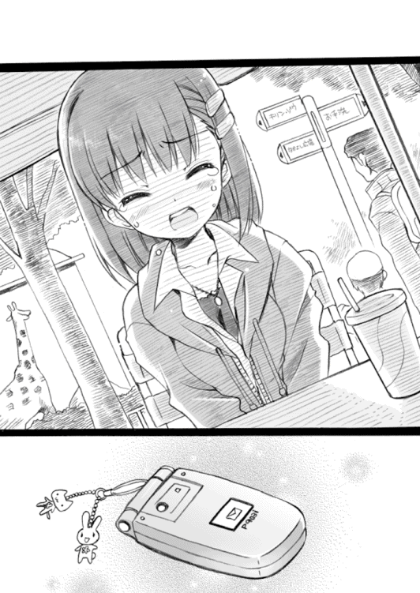
ふふっ――と小さな笑い声を上げたのは、目の前にいる結野だった。
「な、なんだよ。なに笑ってんだ？」
俺が尋ねると、
「んーん、なんでもないもん」
結野は言って、はにかむような笑顔を浮かべた。
俺は「あっそ」と言ってそっぽを向いた。じりじりと少しだけ頬が熱い。
結野の笑顔を真正面から見て『あーあやっぱこいつかわいいなちくしょう』とか思っちゃったのは、絶対に秘密にしておかないと。
それから――
俺たちは動物園をあとにし、地元の駅に戻ってきた。
そして、駅前にあるファミレスでいっしょに夕ごはんを食べた。そこで俺は結野のメシ代をオゴってやった。つらい話をさせてしまった、その償いみたいな気持ちで。
ファミレスを出たところで、俺たちは別れた。「家まで送っていこうか？」と訊いてみたのだが、結野は「まだ完全に真っ暗じゃないから大丈夫」と言って一人で帰っていった。
自宅に戻った俺は、自室のベッドの上でぼんやりした。
今日はいろいろあったなぁ......天井を見つめながら、そんなことを思う。
「なんか、すげえ疲れた......」
疲れたけど、いろんな意味で有意義な一日だったと思う。なんとなく。
「あ、そうだ」
俺は携帯電話を握り、ある人物のメールアドレスを呼び出す。
「暇なときはメールしてやるって言ったからな......それに、ちゃんと家まで帰れたかちょっと心配だし......」
俺は結野に向けてメールを打つことにした。
メールなんか打ち慣れているはずなのに、なんか変に緊張する。そういえば身内以外の女性にメールするのははじめてだな。
俺はどんな文面にするかかなり悩み、最終的にこう打った。
〈太郎だ。無事に家にはついたか？ 酔っぱらいとかには遭遇しなかったか？ 今日はいろいろあったけど、動物を見るのは楽しかった〉
「............」
なんだ、この無味乾燥でおもしろみのないメールは。散々悩んだあげくにできた文がこれか？ 俺は自分のセンスのなさに悲しくなった。だが、下手なことを書いて引かれるのも嫌だ。
「まあいっか、最初はこんなもんで」
次からはもうちょっとがんばろう。そんなことを思いながら、俺は結野に向けてメールを送信した。そのとき。
「太郎ちゃぁんっ！」
ドアが急に開き、姉貴の静香が突進するように部屋の中に入ってきた。
姉貴は手にデジタルカメラを持っていて、そのレンズを俺のほうに向けて連続でシャッターを押した。様々な角度から俺の姿を激写する。
俺は慌てて携帯を閉じてから、上半身を起こし、
「あ、姉貴！ 部屋に勝手に入ってくるなって何度も......」
「細かいこと言わないでよぉ！」
言って、姉貴は連続でシャッターを押す。
「な、なんだよ！ なんで俺の写真とってるんだっ！」
「えへっ。今日、このデジカメ買ったの。ずっと前からほしかったんだよ。これで、太郎ちゃんの写真をいっぱい撮ってコレクションするんだよっ！」
コレクション......そんなのはやめてくれ、頼むから......
「そして写真を撮ったあとはスキンシップです！」
「おわっ！」
姉貴はベッドの上に飛び乗り、ぎゅっと俺に抱きついてきた。
「あーやっぱり太郎ちゃんのそばが一番落ち着くよ！ ......ん？」
にこにこしていた姉貴が、急に真顔になる。
そして姉貴は、俺のほうにゆっくりと顔を向けた。な、なんだよその真剣な顔は。いったいどうしたんだ？
「太郎ちゃん......」
低い声で言う。
「太郎ちゃんの体から、女の子の匂いがする」
「え!?」
俺はぎょっとして姉貴から離れる。
「太郎ちゃん......今日、女の子といっしょにいたでしょう？」
「な、な、な――」
なんでそんなことがわかるんだ？ 匂いだと？ 確かに今日は一日中結野といっしょにはいたが、匂いがつくほど接近はしてなかったぞ？ こ、こいつはエスパーか？
「ええっと......」
俺はとぼけることにした。
「な、なにを言ってるんだよ姉貴。今日俺は、辰吉と遊んで......」
「嘘は言わないで」
姉貴、その小声はなんか怖いからやめてくれ。
「わたしにはわかるんだもん......太郎ちゃん、女の子といっしょだった。これは絶対に間違いないよ」
と――
ドアの外からドドドドドッという音が聞こえてきた。そして。
「な、なんですってぇ―――っ!?」
母さんがすごい勢いで部屋までやってきた。
「い、いまの話本当ですか!? た、太郎さんが女の子といっしょにいたって......」
「なぜだ!? なぜいまの声が聞こえる!? 母さんは一階にいたはずだろ!?」
「太郎さんに関することなら、私の耳はデビルイヤーになるんですっ！」
「お姉ちゃんの鼻はデビルノーズになるんだよっ！」
「なんだよそれは！ 意味不明なこと言ってるんじゃねえ！」
俺は二人の勢いに焦りながら、
「ご、誤解だって！ 俺は女の子なんかと......」
そのとき――俺の携帯電話が短く鳴った。メールの着信音だ。
やばい。俺は本能的にそう思った。
俺は携帯電話に手を伸ばそうと――する前に、母さんと姉貴が神速の動きで携帯をかっさらっていった。
「お、おいっ！ なにしやがるっ！」
怒鳴る俺に背を向け、二人は携帯のメールを開いた。
姉貴が低い声でそのメールを読み上げる。
「無事に家に着いたよ。酔っぱらいとかもいなかった。だいじょうぶ。ウサギ、やわらかかったね。また会いにいきたいね。メール、ありがと」
そして、母さんがメールの送信者の名前を告げる。
「......結野......嵐子？」
ああ、結野......おまえはなんて間が悪い奴なんだ。
二人はしゃこんっと立ち上がり、俺に詰め寄ってきた。
「た、太郎ちゃん！ 嵐子って誰!? 嵐子って誰よ!?」
「そ、そうですよ太郎さん！ 何者ですか!? どこの馬の骨ですかっ!?」
「お、落ち着け！ 頼むから二人とも落ち着いてくれ！」
「太郎ちゃんひどいっ！ 太郎ちゃんのお嫁さんはわたしだって前世の頃から決まってるのに！」
「あんまりですっ！ 私は太郎さんのお嫁さんになるって太郎さんが私の子宮にいる頃から決めてたのにっ！」
「あ、あんたら、弟と息子になに言ってんですかっ!?」
「な、なによ嵐子って！ 嵐子......あらしこぉっ！」
「う、うえーんっ！ ぶえーんっ！ びぃーんっ！」
「あ、姉貴！ 怒りで発狂して俺の部屋のものを破壊しないでくれっ！ か、母さん！ そんな漫画みたいな量の涙を流したらやばいって！ 体が干上がっちゃうよ！ ......がああああああっ！ だ、誰かなんとかしてぇ――――っ！」
結野と動物園にいった日から五日が経ち――今日は五月の三〇日。水曜日。
明日で試験休みは終了し、明後日からはまた学校がはじまってしまう。
いま時刻は午後四時過ぎくらい。俺は部屋でなんとなくテレビを見ていた。
そのとき俺の携帯電話が鳴った。電話の発信者を見て、思わず顔をしかめる。
「......石動先輩からだ」
先輩には試験休み中も部活に出てこいと言われていたのだが、母さんと姉貴に結野の存在が知られてからは、二人に監視されて満足に外出することもできなかったのだ。外に出ようとすると母さんか姉貴のどちらかがストーカーのようにあとをつけてくる始末。これでは部活になど出られるわけがない。だから休みになってからは一度も部室に顔を出していなかった。さすがに四日も経つと、母さんと姉貴の監視もなくなったのだが......
「やれやれ......今度は先輩のお叱りが待ってやがるのか......」
ため息をつきながら、通話ボタンを押す。ここでシカトするのは簡単だが、そんなことをしてはあの頭のおかしい先輩はなにをするかわからない。
「もしもし」
『ブタロウ？』
「はい、そうですけど......」
陰鬱な声で答える。と、先輩は慌てた声で、
『ブ、ブタロウ！ た、大変なの！ 大変なのよ！』
「なにが大変なんです？」
部活に出てこない俺への怒りで電話をかけてきたんじゃないのか？
『嵐子が......行方不明なのよ！』
「......は？」
結野が行方不明？ この人はなにを言ってるんだ？
「そ、それはどういうことですか？」
『言葉通りの意味に決まってるだろうがボケ！ 嵐子の行方がわからなくなったのよ！』
「行方がわからなくなったって......」
『携帯や家の電話にかけてもまったくつながらない、みちる姉といっしょに嵐子の家にいっても誰もいないの！ これは完全に行方不明だわっ！』
「お、落ち着いてください......電話に出ないし家にもいない？ それは本当ですか？」
『そう言ってんだろクソ野郎！ おとといまで嵐子は毎日部室にきてたのに昨日からこなくなって......あたしやみちる姉が電話やメールをしてもまったく反応なし。心配になって家までいってみても、嵐子はいない、見つからない......も、もしかしたらあんたがなにか知ってるんじゃないかと思って、電話したのよ！』
「いや、俺はなにも知らないです......」
結野とはいっしょに動物園にいった日から会ってない。メールもあの日以来は送っていなかった。
『ほんとだろうな？ あんたまさか嵐子がかわいいからって拉致監禁してるんじゃ......』
「んなわけないでしょうがっ！ アホですか！」
『とにかく、いまあたしたちは心当たりを探してるわ。ブタロウ、あんたもいまから嵐子を探しに出なさい。いい、これは命令よ、見つかるまで家には戻るな！』
「わ、わかりました。とりあえず俺も探してみます」
先輩との通話を切ったあと、俺は結野の携帯電話に電話してみた。
が、何度かけても電話はつながらない。電源が切れているか、電波が届かないところにいるか......みたいなアナウンスが流れるだけ。先輩の言うとおりだった。
結野が行方不明......
「マジかよ......」
俺は家を飛び出した。
「はあ、はあ、はあ、はあ......」
懸命に走る。目指すは結野の自宅だった。
十分ほどで結野の家にたどり着く。俺は荒い息をしたまま、結野の家のインターホンを何度も押した。ドアを直接拳で叩いた。が、家はひっそりと静まったままで、誰かが玄関に出てくることはなかった。どうやら本当に無人のようだ。
「連絡がつかない......部活にも出ていない......家にもいない......」
まさか、誰かに誘拐されてしまったとか――
「そ、そんなわけあるかよっ！」
俺は焦りながら、繁華街に向かって駆け出した。どうせ結野は繁華街で買い物でもしているはずなんだ。連絡がつかないのは、あいつがうっかり携帯の電源を切ったままにしているからなんだ。そうだ、そうに決まってる。
デパート。コンビニ。本屋。ブティック。ゲームセンター。漫画喫茶。ファミレスなどの飲食店。俺は手当たり次第に繁華街を巡り、結野の姿を探した。がむしゃらになって結野を探した。だが。
「はあ、はあ、はあ、はあ、はあ、はあ、はあ......」
繁華街の道路の上、俺は両膝に手を置き、肩で息をしていた。
どこを探しても、結野の姿は見つからなかった。
「どこいっちまったんだよ......結野......」
絞り出すようにつぶやいた、そのとき。
背後から、誰かが俺の肩を叩いた。
弾かれたように振り向くと、そこにいたのは――辰吉だった。
「やっぱり、太郎か」
辰吉は俺を見て目を丸くし、
「繁華街で買い物してたら、おまえの姿を見かけたんだけど......どうしたんだよ？ なんか、バテバテじゃねえか」
「結野が......」
「え？」
「結野が、いなくなっちまったんだ」
俺は先輩から聞いた経緯を辰吉に説明してやった。辰吉は驚きながら、
「行方不明って......マジなのか？」
俺はなんとか呼吸を整え、
「ああ」とうなずいた。
「辰吉......おまえ、なんか知らないか？」
「そうは言われても、俺はそれほど結野と親しいわけじゃ......あっ」
辰吉はなにか思いだしたような顔をし、
「そういえば......俺、おとといに結野を見かけたぞ」
「えっ？ 結野を？」
「ああ。確か......午後六時くらいだったな。駅の近くで見た」
おととい――月曜日の午後六時か。石動先輩の話によると、結野は月曜まで部活に出ていたらしいから、その帰りだったのかもしれない。
「結野はどんな感じだった？」
「どんなって......あ、そうだ！ そういえばあいつ、あの人と喋ってたな」
「あの人？」
「ああ。一人で駅から出ようとしてた結野に、その人が気づいて近づいていったみたいな感じだったかな。結野の顔はよく見えなかったけど、その人はなんか笑いながら話しかけてたから、ああ結野ってあの人と知り合いだったんだなって......」
「だから、そいつは誰なんだよ？」
「吉岡先輩だよ」
「な......に？」
「俺たちと同じ中学で一つ上だった先輩だ。いまは確か、公立だけどこの町で一番の進学校の緑栄高校に通ってるみたいなことを誰かが言ってたな。あの人の家ってさ、わりと駅に近い場所にあるらしいから、俺も何度か駅近くで見かけたことがあるよ。おまえは知ってるかどうかわからないけど、吉岡先輩ってかなりの有名人だったんだぜ。成績優秀で、モデルみたいな――って、おい！ 太郎！」
俺は辰吉の言葉を最後まで聞かず、走り出していた。
結野......結野っ！
一分でも早く。一秒でも早く。
俺は辿りつかなければならない。
「結野ぉ！」
繁華街を駆け抜け。
住宅街を駆け抜け。
俺は再び、結野の自宅に辿りついた。
「はあ、はあ、はあ、はあ......」
門戸を乱暴に開け、ドアに拳を叩きつける。
「結野っ！ いるんだろ！ 開けてくれ！」
結野はこの家の中にいる。絶対にここにいる。
「そ、そうだっ！」
俺は、試験前日に結野をこの家まで送ったときのことを思い出した。
俺は体をかがめ、ドアの脇にある観葉植物の植木鉢に触れる。
「あいつは、確かあのとき......」
俺は植木鉢を持ち上げた。
植木鉢の下には、家の合い鍵が置いてあった。
「あった......」
あのとき、家の鍵をどこにしまったか忘れてしまった結野は、この合い鍵を使って家に入ったのだ。防犯的にはかなり杜撰な鍵の扱いだったが、いまはたすかった。
俺は鍵を使い、ドアを開けた。完全に不法侵入になってしまうが、いまはそんなことどうでもよかった。玄関で靴を脱ぎ、廊下に足を下ろす。
「いるとしたら......自分の部屋か」
じゃあたぶん二階だろう。俺は階段を上がった。
『あらしこ』というプレートの下がったドアがある。あれが結野の部屋に違いない。
俺はドアを開けた。
そこに――結野がいた。
ベッドの上に座り、頭から布団をかぶり、虚ろな目をした結野が、そこにはいた。
「結野......」
俺は囁くような声で、結野を呼ぶ。
その体がびくりと大きく震え――
「ヒッ――！」
結野は布団を投げ払いながら、ベッドの後ろのほうに下がった。その表情は恐怖に歪んでいた。
「い、いや......こないで......」
「結野」
「いやだっ！」
結野は転げるようにベッドから降り、じたばたした動きで俺から距離をとろうとする。そのとき、ベッドの脚やクローゼットの角に体をかなり激しく打ちつけていた。
「お、おいっ！ だ、大丈夫か!?」
心配になって、俺は結野に近づく。相当強く打っていたので痣になるかもしれない。
が、結野は――
「こ、こないでっ！」
叫び声を上げた。
「こないでください......お願い......お願いします......」
「結野......」
おまえ、俺がわからないのか？
「結野......結野っ！ 俺だ！ 太郎だっ！」
「こ、こないで――っ！」
結野は錯乱した様子で、手足をばたばた動かした。このままでは、またどこかに体をぶつけてしまう。俺は結野の動きをとめようと接近し――
「い......いやだっ！ もう、やめ――」
そのとき。
結野が大きく振り回した右手が。
俺の左頬を、強く打った。
「ぐおっ......！」
予想外の一撃を喰らい、俺は後ろに吹っ飛んだ。そして背後にあった机の角に思いっきり後頭部を打ち付ける。激突した振動で机の上に置いてあった分厚い辞書が落ち、床に倒れる俺の顔面に――めり込んだ。
「............」
結野は呆然と自分の右手を見つめてから、
「あ......ああ......」
さきほどまでよりさらに錯乱した様子で、悲鳴のような声を上げた。
「い、いや......ま、また、殴られ......！ もういやだ......お、お願いします......なんでも言うことききますから......だから、もう殴らないで......」
絞り出すように、結野は言葉を落とす。
「............」
地獄の蓋が、開放されて。
闇の魔獣が、咆吼を上げる。
魔獣の牙が、精神を噛み砕き。
凶悪な力で俺の存在を支配する。
その魔獣の名は――マゾヒズムという。
「......はあ、はあ、はあ、はあ......はあはあはあはあはあはあはあ......」
呼吸と鼓動が加速していく。俺はがばっと立ち上がり、大声を上げた。
「な、殴らないでください？ な、なにを言ってるんだおまえはっ！」
「ひぃ――！」
俺は怯える結野のそばで四つんばいになり、
「殴られるのは――俺のほうだろうがあっ！」
叫んだ。
「結野様！ も、もっとですっ！ もっと俺を殴ってください！ あなた様の聖なる拳で醜い俺の体を痛めつけてやってくださいぃいぃいぃ――っ！」
「......え？」
「ワンワン！ ワォーン！ お、おおお俺は犬です！ 醜い駄犬です！ こ、この躾のなってない哀れな犬畜生を、あなた様の拳で躾けてくださいよっ！ お、お願いします！ が、顔面を踏みつけながら、このクソ犬野郎と言っておくんなましっ！」
「............」
「あはっ！ あはははっ！ ほ、ほら、卑屈な笑顔でしょう？ 気持ち悪いでしょう？ な、殴りたくなったでしょう！ え、遠慮はいりませんよ！ 思いっきり......思いっきり、できれば鞭とかで......え？ あ、あれ？」
結野は、唖然とした顔で俺を見ている。
「............」
「............」
俺と結野は、しばし見つめ合った。そして。
「――ハッ!?」
俺は愕然と体を震わせた。
「ま、ま、ままままさか......お、俺という奴は......」
この状況で――ドＭ体質を目覚めさせてしまったというのか？
「そんな......そんぬぁあああぁあああ――――っっっ！」
俺は激しく体をのけぞらせ、叫んだ。自己嫌悪で脳が破裂しそうだった。
俺は......俺って奴は......ああ......
と。
「タ......タロー......？」
つぶやくような、結野の声。
「え？」
俺は弾かれたように結野を見る。
結野は膝下を太ももの脇にぺたんと置き、両手を床の上に張り付かせた格好で、まっすぐ俺を見ていた。その瞳には正気の光が宿っている。
「そ、そっか......」
俺は奇跡を見ているような気分だった。
さっきまで錯乱していた結野が、笑っていたのだ。
「あんたは......ドＭの変態さんだもんね......」
細められた両目から、涙がこぼれる。結野は笑いながら泣いていた。
「女の子に殴られたいって思っても......女の子を殴りたいとか思わないよね......」
呆然としていた俺は我に返り、
「そ、そうだよ。女の子を殴っても気持ちよくねえだろうが。俺はマゾヒストなんだ。殴られるほう専門なんだよ」
結野に顔を向け、へっ、と笑う。
「ふふ......そうだよね......」
言ってから。
結野は床に顔を伏せ、静かに泣き出した。
「結野......」
「吉岡先輩に......会ったの」
震える声が、聞こえる。
「月曜日に、駅の近くで偶然に......せ、先輩は、笑顔でわたしに話しかけてきた......」
「............」
「久しぶりだなとか、元気だったかとか、そんなことを言ってた。わたしは怖くてなにも言えなかった。黙ってると、先輩はいつの間にかいなくなってた」
「......そのショックで、家に閉じこもっていたのか？」
そう尋ねると、結野はぶんぶん首を横に振り、
「......怖かったけど、でも、先輩に会ったことは早く忘れようと思った。だけどね......家に帰ってから......」
先輩から電話があったの――そう結野は言った。
「ちゅ、中学生のときのことを誰かに喋ったらどうなるかわかってるだろうなとか......今度外で会ったらまた殴ってやるよとか......い、いまからおまえの家にいくから待っててくれよとか......そ、そんな電話が何回も」
「............」
俺は絶句していた。
「そ、それで、わたし怖くなって......電話線を切って、家のドアにも鍵をかけて、ずっと閉じこもっていたの......ドアの外に先輩がいるかもしれない......そう思ったら、怖くて怖くてなにもできなかった......」
「結野......」
「わ、わたし......」
涙のような声が、
「わたし、がんばろうと思ったんだよ......」
部屋に流れ落ちる。
「こ、高校生になったら、環境が新しくなったら、中学生のときのつらいことは忘れて、がんばろうと思った。男性恐怖症も治したかったから、自分から第二ボランティア部にお願いしにいった。......でも、ダメなの？ わたしみたいな人間は、どんなにがんばってもダメなの？ がんばって、がんばっても、わたしはどうしようもないままなの？」
「............」
「もういや......もういやだよ。こ、こんなに怖くちゃ、わたし、生きていけない。どうして......どうしてわたしがこんな目に遭わなきゃいけないの？ わたし、そんなに悪いことした？ ねえ......どうしてよ......」
結野は両手で顔を覆い、言った。
「わたし......もう、死にたい......」
「............」
俺はなにも言うことができず、涙を流す結野を見下ろしていた。
結野を残し、俺は家を出た。
携帯電話で石動先輩に連絡し、結野が自宅にいることと結野から聞いた話を伝える。電話の向こうで先輩がぎゃーぎゃー言っていたが、俺はそれを全部聞かずに通話を切った。
体は沸騰するように熱いのに、頭の芯は氷のように凍てついている。
俺は生まれてはじめて、本物の怒りというものを感じていた。
いったん自分の家に帰り、『あるもの』を持ち出してから、すぐ目的地に向かう。
結野の自宅から歩いて二十分ほど――俺は、緑栄高校の校門の前に立っていた。
辰吉が言っていた。吉岡はいま、緑栄高校に通っていると。
躊躇することなく、緑栄高校の校門をくぐる。
公立の緑栄高校はテスト休みなどないので、今日も生徒たちは普通に登校している。下校する生徒たちが、私服姿の俺を訝しげな顔で見ていた。その生徒の一人を適当に呼び寄せ、二年の吉岡はどこにいるか知らないかと尋ねる。吉岡はこの学校でもすでに有名人らしく、その生徒も吉岡のことを知っていた。吉岡はボクシング部に入っているので、そこにいるのではないかと教えてくれた。
俺はボクシング部に足を向けた。
ボクシング部の部室。俺はそのドアを躊躇なく開けた。
十畳以上はある、かなり広い部室だった。
部室のソファーの一つに、制服姿の男女が座っていた。
その二人は抱き合いながらキスをしていた。男の右手は制服姿の女子の胸の上に置かれている。二人は部室に入ってきた俺に気づくと、驚いた顔でお互い距離をとった。
俺はかまわず部室の中に入っていく。
「あ、あの......じゃあ、わたしはこれで......」
恥ずかしさに耐えられなかったのか、制服姿の女子のほうが男子に声をかけて立ち上がった。俺の横を通り、部室を出ていく。
男子のほうは、平然とした顔をしていた。
とても整った顔立ちをした男子だった。あまりに整いすぎているせいか、まるで無機物のようだ。彼は丁寧に手入れがされてそうな眉をひそめ、言った。
「なんだい君は？ ボクシング部じゃないようだが、どうして私服なんだ？」
「吉岡って奴を探してるんだ」
俺がそう告げると、
「吉岡は......俺だけど」
「そっか。なんとなく、そうだと思ったよ」
「俺になんの用だ？」
「結野嵐子」
吉岡の頬が、ぴくっと微かに震えた。
「もちろん知ってるだろ？」
「ああ......昔、付き合っていたからな」
「ちょっと前に、駅の近くで偶然会ったんだろ？ それから、結野の家に脅迫じみた電話をしたらしいな」
「......なんの話だ？」
「とぼけんなよ」
「とぼけてるんじゃない。本当に意味がわからないんだ」
きょとんとした顔の吉岡は、首をかしげ、
「確かに駅の近くで結野に会ったけど......ただ、懐かしくて声をかけただけだよ。それだけだ。もちろん家に電話なんかかけてない。結野になにを言われたのか知らないが......俺はなにも知らないよ」
「......結野は、あんたからの電話を録音しておいたんだよ」
「え？」
「それを聞かせてもらった。脅迫の電話を。確かに、あんたの声だった」
俺がそう言うと――吉岡は両目を細め、小さく舌打ちした。
俺はその顔を見下ろしながら、
「嘘だよ。結野はあんたの声を録音してなんかいない。カマをかけただけだ」
「おまえ......」
「ずいぶんと演技がうまいんだな。ボクシング部じゃなくて演劇部に入ったほうがよかったんじゃねえか？」
露骨にイライラした様子を見せる吉岡に、俺は淡々と言う。
「どうしてそんな電話をかけたりしたんだ？」
吉岡は足を組み、冷笑を浮かべながら、
「中学のときのことを誰かに漏らされたりしたら面倒だと思ったからだよ。だから、あいつに脅しをかけた。......もう全部聞いてると思うが、あいつは中学のときに俺が流した嘘の噂のせいでクラスで孤立し、登校拒否寸前になったんだ。だから、ここでもう一回強く脅しておけば、あいつはまた学校にいけなくなって、引きこもりにでもなってくれるんじゃないかって期待したんだよ。そうなってくれたら、俺はすごくたすかるからな」
「おまえ、最低だな」
吉岡は鋭く俺を睨みつけ、
「ていうか、おまえはなんなんだ？ 結野の彼氏とかか？」
「違う」
「じゃあなんだよ？ ああ、もしかして、このことで結野に貸しを作ってあいつをどうこうしたいとでも思ってるのか？ まあ、あいつは確かに美人だからな。おまえみたいなぱっとしない奴が夢中になってしまうのもわかるよ。俺も中学のときちょっと遊んでやろうと思ってたんだが......あの野郎、この俺の顔に傷をつけやがったんだ。あのときはマジで腹が立ったよ」
「今日はずいぶんと悪者キャラじゃねえか。いいのか、優等生の完璧人間がそんなこと言って」
「ふん。聞いてるのがおまえだけだからだよ」
吉岡は長い足を組み直す。
「言っておくが、おまえや結野がほかの奴に俺のことを言いふらしても無駄だぜ？ 俺の言葉とおまえたちの言葉、みんながどちらを信じるかはわかるだろう？ 人間ってのはな、真実の言葉よりも優秀な人間の言葉を信じるんだよ。まあそれでも万が一ってことがあるから、結野の奴には引きこもってもらおうと思ったんだが......」
「ほかの奴に言いふらすつもりなんかねえよ」
いまさらそんなことをしても、結野の心の傷は癒えない。
吉岡は訝しげな顔をし、
「じゃあ、おまえはなにしにきたんだ？」
「殴りにきた」
短く言って――
俺は、大きく振り上げた右拳を吉岡の顔面に打ち込んだ。だが。
「おい。いきなりなにするんだよ」
吉岡は素早くソファーから立ち上がり、俺の拳を避けた。
「わかってるのか？ 俺はボクシング部なんだぜ？」
「関係ねえよ」
俺はファイティングポーズをとりながら言う。
こいつだけはゆるさねえ。
絶対に、ぶん殴ってやる。
「はん。さっきの動き、完全にド素人じゃねえか。それで俺に挑むなんて無謀な奴だな」
吉岡は楽しそうに笑いながら言う。
「いいぜ。相手してやるよ。もう部員はみんな帰ったあとだから、ここには誰もこない。おまえがどんなに泣き叫んでも......誰も助けにこないぜ」
「そりゃ好都合だ。誰にも邪魔されずにすむからな」
「減らず口だけは一人前だな」
吉岡は軽く踏み込み――左のジャブを放った。
拳がほとんど見えなかった。顔面に吉岡の左拳がめり込み、俺は痛みに顔をしかめながら後ろに下がった。つつーっと流れた鼻血が唇を濡らす。
吉岡は嘲笑を浮かべ、
「おいおい、いま俺はかなり手加減してやったんだぜ？ そんなの喰らっちまうレベルで俺に勝てると思ってるのか？」
「うるせぇ」
俺は右拳を振り上げ、吉岡に突進していった。
「うおおおぉおぉおぉっ！」
渾身の右ストレート。が、吉岡は笑いながらそれを簡単に避ける。
「おらっ！」
吉岡の鋭い踏み込み。弧を描くようにして放たれた右拳が、俺の腹にめり込む。
「......っ！」
衝撃が、内臓まで届く。
体を折って前のめりになった俺の顔面に、吉岡の左拳が衝突した。
「がはっ......！」
激痛に思わず声が出る。口の中に血の味が広がり、視界が歪む。
倒れそうになった体を――なんとか気合いで立て直し、俺は右足で蹴りを放った。ボクサーなら蹴りには慣れていないのではないかと思ったのだ。
だが、吉岡は華麗な足さばきで蹴りの射程範囲外に移動してしまう。俺の右足は無意味に舞い上がっただけだった。
「くそっ！」
距離をとる吉岡にタックルするように向かっていく。吉岡は軽いサイドステップで俺の体をかわした。勢いあまった俺は、部室の備品が置いてある場所に突っ込んでしまった。反転し、体を立たせようとしたところで、
「たまには蹴りもいいなぁ！」
楽しそうに言いながら、吉岡が俺の腹部に蹴りを喰らわせてくる。声にならない悲鳴が俺の口から漏れる。間髪入れず放たれた二撃目の蹴りが、横殴りに俺の頭を吹っ飛ばした。俺は備品をまき散らしながら床に転がった。
「ちく......しょうっ！」
ふらふらしながら立ち上がり、吉岡に殴りかかる。
吉岡は事務的な動きで俺の拳を避け、スナップの利いた拳を三発、四発と喰らわせてくる。俺は激痛に呻きながら、それでも吉岡に向けて拳を放つ。空を切る。
俺は吉岡の動きに翻弄される哀れなピエロだった。吉岡は俺の不格好なダンスを嘲笑しながら眺めていた。
吉岡の右アッパーが顎に入る。
吉岡の左フックが肋骨をきしませる。
吉岡の右ストレートが俺の頬を打ち抜く。
「............」
――痛え。すげえ痛え。
この拳が、結野を殴った拳なんだな。
結野......
「いい加減に......しろよっ！」
もうこれで何度目だろうか、吉岡の右拳が俺の左頬を貫いた。
足裏が床を滑り、体が背後に流れる。が、俺はなんとか倒れずに踏ん張った。
「......はあ、はあ、はあ、はあ、はあ」
俺の呼吸に唱和するように、吉岡の荒い息が部室に響く。
「おまえ......なんなんだよ」
吉岡の顔から嘲笑は消えていた。不可解な生き物を見るような目で俺を見下ろしている。
「いったい何発殴ってると思ってるんだ？ なんで、おまえはまだ立ってやがるんだよ」
「へ、へへ......」
俺は痛む顔面をにやりと歪め、
「も、もし、おまえが......美少女だったら......これの百倍は......耐えられる、ぜ......」
「はぁ？」
「お、俺は......ドＭの家系......代々女に殴られてきた家系、だぜ......ふ、普通の人間とは......体のデキが違う、んだよ......い、遺伝子的にな......」
「なにわけわかんねえこと言ってるんだよっ！」
吉岡の拳に、俺の顎が跳ね上がる。俺はよろよろと後ろに下がった。
「......おまえ、結野のために俺を殴りにきたんだよな？」
吉岡はファイティングポーズのまま、言ってくる。
「わけわかんねえ......所詮は他人事だろう？ それなのに、なんでおまえは、そんなに必死になれるんだよ？ 何発も殴られて、無様に床を舐めて、それでもなぜ立ち上がってくる？ 気絶したフリでもしとけば、これ以上痛い目見ずにすむだろうが」
「う、うるせぇ......」
「人間なんて、誰だって自分さえよければそれでいい生き物だろうが。表面だけを見て中身を見ようとしない、クズみたいな生き物だろうが。他人なんてバカばかりでクソばかりで......信じる価値も認める価値もない、醜い奴らばかりじゃねえかっ！」
「はあ、はあ、はあ、はあ......」
「クソが......ちくしょうっ！」
吉岡が右拳を振り下ろし、俺の顔面を打つ。
さすがに――もう限界が近かった。
体中が激痛で熱を持ち、もはや立っているのがやっとの状態。何度も殴られたせいで顔面は腫れ、左目の視界は完全にふさがっていた。無事な右の視界も、ぐわんぐわんと激しく揺れている。目眩と嘔吐感が間断なく襲ってくる。一瞬でも気を抜けば間違いなく昏倒してしまうだろう。
だが、このまま倒れるわけにはいかない。
「もう、死にたいって......そう言ったんだよ......」
「あ？」
「高校生になったばかりの女の子が、死にたいって、言ったんだぜ......ふざけんじゃねえよ......そんなこと、言わせちゃダメだろうが......」
熱に浮かされたように、声が漏れる。
「なにわけのわからないことを言ってやがる！ クソがっ！」
吉岡が叫び声を上げ、俺に向かってきた。
「もう――死ねよ！」
必死の形相で大きく右拳を振り上げる。とどめを刺すつもりだろう。
俺は両腕を上げようとしたが――腕はぶるぶる震えるだけで、動いてくれない。足も同じだった。もう、一歩も動くことができなかった。
「く、くそったれ......」
ダメか。
結局、俺はなにもできないのか。
「結野......」
吉岡の姿が目前に迫る。揺れる視界では、その姿をまともに認識することができない。
そのとき、だった。
突然――左膝に痛みが走った。
突き抜ける衝撃。まるで後ろから膝かっくんをされたような感じで、左膝が折れる。
「あ......」
――頭のすぐそばをなにかが通り過ぎ、俺の髪を微かに揺らす。
俺はなんとか倒れないようにバランスをとろうとし、右足のほうに体重を移動させた。不平を漏らした右足がたたらを踏み、俺は前方に体を傾けながら一歩前に踏み出した。
トンッ、と。
額になにかが当たった。
ぎょっとした気配が頭上から伝わってくる。額が触れたもの――それは、吉岡の胸部だった。
「え......？」
そうか。
左膝が折れて体が傾いたおかげで、どうやら俺は吉岡の渾身の一撃を偶然かわすことができたらしい。しかも、いま俺は、右腕を伸ばしきった吉岡の懐に入っている。
運がいい......神様のご加護としか、思えないほどに。
俺は――残っていたすべての力を両膝に込めた。
膝がぐっと沈む。明らかに労働基準法違反の俺の指令に、脚部の関節と筋肉たちが激痛という名の抗議を送ってくる。もう少し、もう少しだけがんばってくれ。
「うぅ......ううう......」
俺がいままで生きてきた中で蓄えてきた力と、俺がこれから生きていく中で得るであろう力を、ここで全部使ってもかまわない。
いけ――っ！
「うおおぉおぉおおぉおぉおぉおおぉお――――っっ！」
両膝が、噴射するように伸びる。そして。
巨大な拳と化した俺の頭蓋が――
吉岡の顎を下から貫いた。
「が、があっ――――っ！」
吉岡が叫び声を上げる。
会心の一撃だった。
一瞬宙に浮いた吉岡の体が、酔っぱらいみたいな動きで俺から離れていく。
吉岡はなにが起こったのかわからない様子で、驚愕の目を俺に向けていた。
「てめえは......」
俺は、ふらふらしながら吉岡に近づき。
「絶対に......」
右拳を大きく振り上げる。
「ぶん殴る――っ！」
渾身の力を込めた一撃が、吉岡の端正な顔面にめり込んだ。頬を歪ませ骨に衝突する感触を拳に感じながら、俺は最後の力で右拳を――振り抜いた。
「............っ！」
声を上げることもできず、子供に投げ捨てられた人形のように吹っ飛んだ吉岡の体が、背後にあったソファーにぶつかり、跳ねる。
吉岡の体はそのままずるずると落ち、床に倒れた。一瞬だけ、大きく見開かれた目で俺の姿を捉えたあと、かくんっとその首が垂れる。そのまま動かなくなった。
「ちくしょう......」
自分の右拳を見つめる。
「やっぱり、人を殴ってもぜんぜん気持ちよくねえよ......」
そう呻いたあと、俺は深々とため息をついた。
「それにしても......運がよかったな」
あそこで左膝が折れていなかったら、やられていたのは間違いなく俺のほうだった。
「まあ、あんだけ殴られてたんだから、膝から力が抜けるのも......ん？」
ふと床を見やると、なにやら見覚えのある物体が転がっている。
ころころと転がるそれは、金属バットに間違いなかった。
「え......？」
俺は弾かれたように、部室の扉のほうに顔を向けた。そこには――
石動先輩が立っていた。
「せ、先輩!? どうしてここに......」
言ってる途中に、俺は気づいた。
先輩がここにいる理由。そんなの一つしかないに決まってるじゃないか。
石動先輩は――俺と同じ理由で、ここにやってきたのだ。
「......そう、あんたと同じよ」
先輩は腕を組み、ふんっと鼻を鳴らす。
「でも、残念ながら、一足遅かったみたい」
もしかして......
「先輩がたすけてくれたんですか？ 俺の左膝が折れたのは、先輩が......」
言うと、照れ隠しなのか、先輩はぷいっとそっぽを向き、
「......扉を開けたら、びっくりしたわよ。変態で、女の子に殴られることが専門のあんたが、誰かと殴り合いなんかしてたんだから。それを見て、あんたの相手が吉岡って奴なんだってすぐにわかったわ。どうしようもないほど劣勢だったし、たすけてあげようと思ってたんだけど......」
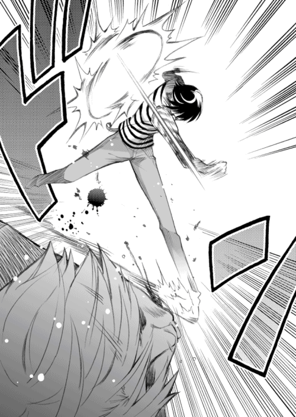
先輩が見ていたなんて、俺はまったく気づかなかった。周囲に目を向ける余裕なんて全然なかったのだ。
「あんたの顔が、あまりに真剣で、一生懸命だったから......あたしは出ていっちゃいけないって思った。戦ってるあんたを邪魔しちゃいけないって思った。......でもまあ、ちょーっとだけなら、手を貸してもいいかなって......」
「金属バットを、俺の膝に向けて投げつけたんですね？」
バットの先端に膝裏を貫かれ、バランスを崩し、吉岡の拳を回避することができた。
「う、うん。まあね」
そうだったのか......
あれはやっぱり――神様のご加護だったんだな。
「へへ......」
ふっ、と気がゆるんだところで、意識が消えそうになった。
ぐらっと体が傾く。あっ、やばい。俺はふらふら倒れそうな体を――
ふらふら倒れそうな体が――ふわりと優しいものに包まれる。え......？
前のめりに倒れそうになった俺を、石動先輩が抱きしめて支えてくれていた。
「え？ えぇ？ えええぇ？」
うん、混乱。激しく混乱。もしかしてこれは夢か？
先輩は血で汚れた俺の顔を、その胸の中で抱きしめてくれていた。天使のようにやわらかい体。力が抜けるような甘い匂い。穏やかに俺の頭を撫でる小さな手のひら。
「こんなぼろぼろになるまで、あんたは嵐子のためにがんばってくれたんだね......見直したわ......」
聞いたことのないような、優しい声。
「それに......ちょっとだけ、かっこよかったわよ」
「............」
あ、あう、あうあうあう、やばい。声が出ない。すでに体はぼろぼろなのに、こんなわけのわからないことをされては、もう心臓も爆発しそうで、とにかくやばい。し、死ぬ、死んでしまう。もしかしてこれは、先輩の考えた新手のいじめですか？
先輩は、すっ、と俺から離れると――
「あんたはこれから嵐子のところにいくんでしょ？ あたしもそうしようと思ってたんだけど、今回はヒーローのあんたに譲るわ。あたしとみちる姉は夜にでも顔を出すことにする」
言って、俺に背を向ける。
「じゃあね。嵐子のこと、よろしく頼んだわよ」
そして先輩は部室を出ていった。
俺はぽかんとしたまま、その場に立ちつくしていた。いまのはやっぱり夢だったんじゃないだろうか......だって、あの石動先輩があんな......
「あっ、そうだ」
いつまでもぼぉーっとしているわけにはいかない。
「俺にはまだやることが残ってるんだった......」
言って、俺は家から持ってきた『あるもの』をポケットから取り出した。
俺はやるべきことを済ませたあと、緑栄高校をあとにした。
いったん自宅に戻る。こんな顔を姉貴や母さんに見られたらえらい騒ぎになってしまうと心配だったが、運よく見つからずに用事を終わらすことができた。再び家を出て、歩く。
いつの間にか日は落ちかけており、町は夕焼けに赤く染まっていた。ポンコツになった体の歩く速度は、普段の倍くらい遅いような気がする。ぼこぼこに腫れた顔で歩く俺を、通行人は訝しげな顔で見ていたが、なんとか通報はされずに済んだ。
そして、俺はやっと結野の自宅にたどり着くことができた。
インターホンを押しても反応がないので、勝手に家に上がる。
結野はまだ自分の部屋にいた。
結野はどこか呆然とした顔で、床の上に座っている。俺の顔を見上げると、その表情がぎょっとした。
「タ、タロー！ あんた、その顔......」
「気にするな。かすり傷だ」
ほんとは致命傷寸前な感じだったが、意地を張ってそう言っておく。
「それよりも、おまえにプレゼントがある」
「え......プレゼント？」
「ああ」
言って、俺は手に持っていたものを結野に渡した。
それは写真の束だった。そして、その一番上には――
全裸になった男性の股間部分がドアップで写してあった。
「きゃ......きゃあああっ――――っ！」
結野は半狂乱になって、手に持っていた写真を投げ捨てる。写真が床の上に散乱した。
結野は半泣きの顔で怒鳴った。
「な、な、ななななによこれはっ!? あ、あんた、なんのつもりで......」
「違う写真も見てくれ」
「ち、違う写真？」
結野は困惑した顔で、床に散乱した写真の一枚を手に取る。
そこには、股間の主の体全体が写っていた。
――気絶する吉岡の姿が。
吉岡は全裸の格好で、部室に気絶していた。その額には油性ペンで『天罰』と書いてある。もちろん俺が書いたものだ。
唖然とした顔で写真を眺める結野に向かって、
「あいつに言っといたから。約束させたから」
「え......？」
結野が顔を上げ、俺を見る。
「もう金輪際、結野には近づくな。電話もかけるな。もしおまえがそれを破ったら、この全裸の恥ずかしい写真を街中とネットにばらまくって」
緑栄高校に向かう前に、一度家に寄って『あるもの』――姉貴のデジタルカメラを、無断で拝借した。それは吉岡をぶちのめしたあと、この写真を撮るためだった。
「写真は俺も持ってるけど、おまえも一応持っとけよな。......たぶん、これでもう大丈夫だ。あいつがおまえに近づくことも、家に電話をかけることも、ないと思う」
この写真を早く結野に渡したくて、ここにくる前に家に戻ってプリンターでプリントアウトしてきたのだ。もう大丈夫だからと、結野に言いたくて。
結野は言葉を失っているようだったが、やがてハッとした顔をして、
「あ、あんた、もしかしてその傷......」
「ん？ あ、ああ。いや、まあその......き、気にすんな」
俺はなんか照れくさくなって、結野から顔を逸らしながら言った。
と――
「あ、あ、あんたって......」
全裸吉岡の写真の上に、ぽたぽたと水滴が落ちる。
「ほ、本当に......バカなんだから......」
体中を震わせながら、結野は全身で泣いていた。
俺は「うるせえよ」と小声で言った。
バカなのは自分が一番わかっている。でも、俺にできるのはこれくらいだから。結野のためにしてやれることは、これくらいしかないから。
「タロー......」
結野は嗚咽の隙間から、吐息のような声を漏らした。
「......ありがとう」
「............」
――なんだろう。
その一言で、全部報われたような気がした。
体中の痛みが、俺を褒めてくれているような気がした。
そんな気がして、俺はほほ笑んだ。
次の日の、試験休み最終日。頭上には百点満点の青空が広がっている。
俺たちはまた動物園にやってきた。
今日は俺と結野だけではない。石動先輩とみちる先生、辰吉もいっしょだった。
「つーか辰吉......おまえはなんで女装してるんだ？」
「オーホッホッホッホッ！ 前々から一度、この格好で昼間の外を歩いてみたいと思っていたのですわ！ わたくしの美しさは太陽の光の下でこそ映えるというものでしょう？」
「相変わらずキモいわね、こいつ。嫌悪感で言えばブタロウを超えるかもしれないわ」
先輩が悪魔のような眼光で辰吉を睨みつける。辰吉はその視線を持っていた日傘で防御していた。やはりこの二人は相性が悪い。みちる先生は、睨み合う先輩と辰吉にデジカメを向けていた。俺はため息をついてから、隣に立つ結野に顔を向け、
「なあ、結野。この動物園は前にきたばかりなんだから、あんまり楽しめないんじゃねえか？」
「え？ ううん、そんなことないよ」
結野はにっこりほほ笑みながら、
「動物園は何回きても楽しいし。それに、今日はみんなもいっしょだから。人数が多いほうが楽しいって、あんたもそう思わない？」
「ううむ......まあ、退屈だけはしないですむ気がする」
俺はしかめっ面でつぶやく。
「あれ？」
ふと背後を見やると、すぐ後ろを歩いていたはずの石動先輩たちがいない。
「......なにやってんだよ、あいつらは」
石動先輩、辰吉、みちる先生の三人は、俺たちのかなり後方にいた。辰吉は先輩にコブラツイストをかけられていて、みちる先生はそんな二人にカメラを向け続けている。
「やれやれ......」
あまり先に行きすぎると、先輩がぎゃーぎゃー言うかもしれない。俺は三人のいるほうに戻ろうと足を進め――ようとしたところで、背中がくいっと引っ張られた。
なんだろうと思い、俺は顔だけを後ろに向けた。
結野が、俺の服の袖をつまんで引っ張っていた。
俺の体に触れないように注意しながら、右手の指で服をつまんでいる。結野はどこか恥ずかしそうにしながらうつむき、俺とは目も合わさない。が、服も離さない。
「......なんだ、結野？ どうしたんだ？」
「え、ええっとね......」
結野はうつむいたまま、上目遣いで俺を見てくる。
そして、どこか思い切ったふうに――
「あ、あんたに、言わなきゃならないことがあるの......」
言わなきゃならないこと？ なんだそれは？
「ずっと......ずっと、言わなくちゃって思ってたんだけど......」
結野は躊躇いを見せた。
なんだろう。なにを言う気だ？
まさか......愛の告白か？ いや、ないな。それはないな。
俺の服から手を離した結野は、きゅっと唇を引き締め――
深々と頭を下げ、叫ぶような声を上げた。
「あのときは――ごめんなさいっ！」
「......え？」
あのとき、ってなんですか？
そう思ったのも一瞬。俺の脳裏に、あの日の出来事がよみがえってきた。
中学三年生のときの、放課後の教室。
突然教室に乗り込んできた結野嵐子。
結野にビンタされる俺。
そして俺は――
「あのときって......中学生のときの......」
「そう、なの」
気まずそうな顔で、結野はうなずく。
そうだ。
ずっと気がかりだったこと。
あのとき、なぜ結野は俺を殴ったのか。
面識がないはずの俺に、どうして『あんたなんて死ねばいいのに』なんて暴言を吐いたのか。俺はずっと......ずっと、不思議に思っていたのだ。
その解答が、いまついに得られるのか？
「どうして、なんだ？」
憎しみではなく、純粋に疑問の気持ちで、俺は尋ねた。
「どうして、おまえはあのとき......」
すると。
「あ、あれは......あれは......」
結野は、深く息を吸い込み、
「あれは――勘違いだったのっ！」
と、大声で言った。
「............」
「............」
勘違い？ どういうことだ、それは？
「......詳しく教えてくれないか？」
「うん......」
結野はうなずき、
「......わたしに、由美っていう親友がいるって言ったよね？」
「あ、ああ」
「その由美がね、中学三年生のときに、好きな人ができたって言ってきたの」
「それは......」
「うん。葉山辰吉くん。......由美は思い立ったらすぐ行動する人だから、葉山くんに付き合ってって言ったの。そしてオッケーをもらって、二人は付き合うことになった......」
ああ、それは俺も知っている。そのとき、辰吉からいろいろ相談されたから。確かあのとき俺は「嫌いじゃないなら付き合ってみれば？」みたいなことを軽く言った。
「でも......わたしはすごく不安だったの。由美が、恋人とばっかり仲良くして、わたしにかまってくれなくなったらどうしようって。由美にまで見捨てられたら、わたしはどうなってしまうんだろうって......あのときのわたしは、自分で言うのもなんだけど普通じゃない精神状態だった」
「............」
「それでね、あるとき、わたしと由美が廊下を歩いていたら、並んで歩くあんたと葉山くんにすれ違ったの。......って言っても、そのときのわたしはあんたと葉山くんのことはまったく知らなかったんだけど。でも、すれ違ったとき、由美が言ったの。『いますれ違ったのが、わたしが付き合ってる葉山辰吉くん』って」
「......そのときまで、俺はともかく辰吉の顔も見たことなかったのか？」
「うん、見たことなかった。由美から聞いてたのは、名前だけ」
弱々しい声で結野は言う。
「わたしはすぐに振り向いて、仲良さげに喋ってる二人の顔を確認した。そして、そのうちの一人の顔を脳裏に刻んだのよ。......憎むべき相手として」
「に、憎むべき相手？」
「ええ。わたしから由美を奪おうとする憎むべき相手よ。......もう一度言うけど、あのときのわたしは普通じゃなかったの」
「............」
「そしてある日のことよ。放課後、わたしが帰ろうとある教室の前を通ったら、その教室で葉山辰吉が友達と楽しそうに談笑してたの」
なんだか嫌な予感がした。猛烈に嫌な予感が。
「わたし、その姿を見てたら、すごいムカムカしてきちゃって。クラスでもずっと無視が続いてたから、精神的にも追いつめられてたの。......さらにもう一度言うけど、あのときのわたしは普通じゃなかったの」
「そ、それで？」
「気がつくと、わたしはその教室の中に入ってた。あんたがいると、由美がわたしから離れていくのよ......そんなことをぶつぶつつぶやいていたと思う。そして、葉山辰吉のそばに立った。男子の前に立つなんてすごく怖くて、体は震えてたんだけど、そのときのわたしはその恐怖感さえも目の前の相手への怒りに変えることができたの。あのときのわたしは......」
「普通じゃなかったんだろ？」
完全に言い訳にしか聞こえないけど。
「そして、わたしは、ありったけの怒りを込めて――」
「まさか......」
「葉山辰吉の頬を」
「おい......」
「ビンタしたの」
「ああ......」
俺は額を手でおさえ、呻いた。
「床に倒れた葉山辰吉に向かって、こう言ったわ。あんたなんて死ねばいいのに、って。あんたさえ死ねば、わたしと由美の友情が壊れることはない。......我ながら、なんてひどいことをしたんだろうって思うわ。自分でも引くぐらいだもん」
「そ、それは葉山辰吉じゃなくて――」
俺は我慢できずに叫んだ。
「俺だっ！ 砂戸太郎だっ！」
「......じつは、そうだったんです」
「そうだったんですじゃねえ！ なんでそんな間違いしやがったんだ！」
「だ、だって！」
結野は声を上げた。
「由美が言ってた！ 辰吉くんは頭がよくて、一年生の頃からずっと学年トップの成績なのって！ そ、それに、辰吉くんは生徒会にも入ってるって！ そんな情報を前もって聞いてたら、まさかあんな格好した人が葉山辰吉だなんて夢にも思わないわよ！」
「う......」
確かに、金髪でどこからどう見ても不良ですという格好をした辰吉を見て、奴が学年トップの成績で生徒会にも入っている超優等生だと判断できる人間はいないだろう。
でも、だからって......普通、もっとちゃんと確認するだろ。
結野はしゅんとした顔をして、
「だから......あんたと葉山くんとすれ違ったとき、あの金髪のほうじゃないなって思ったの。それじゃあ、もう一人の黒い髪の男子......あんたが葉山辰吉だって、そう思いこんでしまったの......」
「な、なんてことだ......」
俺は愕然としながら、つぶやいた。
ずっと気がかりだったことの解答が、そんなアホな勘違いだったなんて。
俺はあまりに脱力してしまって、へなへなとその場に膝をついた。前のめりに倒れそうになった体を、両手を地面について支える。
「ごめんっ！ 本当にごめんなさいっ！」
結野は真摯に頭を下げている。
「あんたが、あのあとどうなったのか......クラスでどんな扱いを受けたのか、美緒さんから聞いて知ってる。わたし、ずっと気に病んでた。なんてひどいことしてしまったんだろうって......クラスで孤立するつらさは誰よりも知っているはずなのに、それなのに......」
「............」
結野が心の底から申し訳ないと思ってることはわかった。
だから――
「......もういいよ」
俺は投げやりな感じで言って、へっと笑った。
「え？」
「もう過ぎたことだ。いまさらおまえに怒ってもしょうがねえよ。それに......」
ふう、とため息。
「たとえあのときにドＭが目覚めなくても、いずれどこかで目覚めてたよ。俺のこのドＭの体質は、砂戸家の血脈の中に棲んでるんだから」
「タロー......」
「だから、もう気にすんな」
俺は笑顔を見せた。
結野は――
ぽろぽろと大粒の涙をこぼした。
「ごめん......ごめんなさい......」
「泣くなって。ほんとに、もういいから」
こいつの泣き顔は苦手だ。こいつが泣いていると――どんなことをしてでも、その涙をとめたいとか、そんなことを思ってしまう。俺は子供をあやすような優しい声で、
「泣くなよ。頼むから。な？」
「うん......うん......ごめんなさい......」
結野は軽く握った両手で必死に涙を拭いながら、こくりこくりとうなずいている。
そのときだった。
不吉なオーラを感じたのは。
「ブタロウ......」
ビクッとした。いつの間にか、すぐそばに石動先輩が立っている。
「なんで、嵐子が、泣いてるのかしら......？」
黄金の闘気を放ちながら、凶悪な瞳を俺に向けてくる。
「い、石動先輩！ ち、ちち違うんですっ！ 結野が泣いてるのは......」
「わかってる。皆まで言わずとも、状況を見ればわかるわよ」
ゆっくりとうなずく石動先輩。そ、そうか、わかってくれてるのか......
「つまり、こーゆーことでしょ？ ドＭの変態であるあんたは、かわいい嵐子にサディスティックな行為を要求した。嵐子はもちろん断った。でもあんたは諦めきれず、土下座をして嵐子に頼み込んだ。嵐子はあまりのキモさに泣いてしまった」
うわぁ......完全無欠にわかってねえ......
「こんな天気のいい日に、みんなが笑顔で楽しむはずの動物園で、あんたって野郎は......」
先輩の口から漏れる暗黒のつぶやき声。地面に四つんばいになっていた俺は、すぐさま立ち上がった。このままでは殺される。俺は全速力で先輩から逃げようと――
「この、変態ブタロウがぁあぁあああぁ――――っ！」
「ごぼっへあぁ――っっ！」
先輩の綺麗な回し蹴りが炸裂し、俺は苦悶の声を垂れ流しながら吹っ飛んだ。
吹っ飛んだ先には、いまだ泣きじゃくる結野がいて......
「ひっ――!? い、いいいいいいやぁあぁあぁああ――っ！ わたしに触らないでぇええぇええぇええ――っ！ こ、こここわいよぉ――――っっ！」
「こっちもでぼがぁ――――っっっ！」
結野の拳が顔面にめりこみ、俺の体は再び宙を舞う。
「あは、あははははは......」
俺は全身に走る快楽に破滅的な笑みを浮かべながら......
――ああ、今日もいい天気だ。
そんな、どうでもいいことを思った。
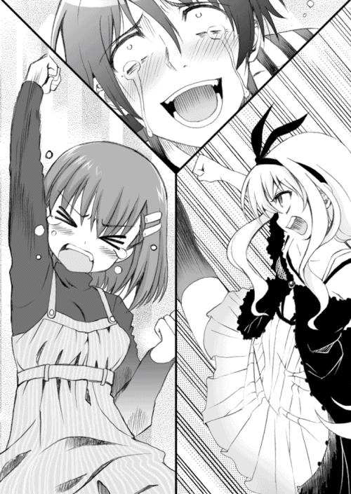
ああ、なんて変態的な主人公なんだろう......
こんな変態野郎が主人公の小説を、はたしてメディアファクトリー様は刊行してくださるのだろうか。初稿を書き上げて提出するときかなりドキドキしていました。担当編集のＳ様や編集長のＭ様（続けて読むとＳＭですね）に「こんなもんだせるかああああああ！」と原稿でびしばし叩かれたらどうしようと心配でした。
ですが、こうやって無事に出版することができました。あーよかったぁ。
はじめまして、そしてお久しぶりです。松野秋鳴と申します。ぼ○ち揚の食べ過ぎで最近は頭皮からぼ○ち揚の匂いがするという重度のぼ○ち揚ジャンキーです。座右の銘は『武士は食わねど高楊枝』。でも実行できた試しがありません。
この物語は、ちょっと性格というか性質というか性癖に難がある変態野郎改め主人公の砂戸太郎くんが、美少女の先輩やかわいらしい同級生やクールビューティーな大人の女性にいじめられちゃう話......かな？ ちょっとそのあたり自分でもよくわかりません。すみません。いろんな意味ですみません。と、とにかく、読んでくださった方（そうです、あなた様です！ ......え、本屋であとがきを立ち読みしてるだけ？ そ、そうですか......）に少しでも楽しんでいただけたなら、これに勝る喜びはございません。
まだまだ未熟者の僕ですが、少しでもいい作品が書けるようにこれからもがんばっていきますので、どうかよろしくお願いします！
最後に謝辞を。
超絶すばらしいイラストを描いてくださったQP:flapperの小原トメ太様とさくら小春様、どうもありがとうございました。お二人のイラストは究極的かつ悶絶的にすばらしいです。装丁を担当してくださった松井様、どうもありがとうございました。担当Ｓ様、編集長のＭ様、いろいろとありがとうございました。校正様、営業の皆様方、いつもお世話になっております。ありがとうございます。
そして、この本を手にとってくださったあなたに。ありがとうございます。
それでは、またお目にかかれる日がくることを願っております。
二〇〇七年 一月
松野秋鳴
著者
松野秋鳴（まつの・あきなり）
兵庫県の川西市出身。第一回ＭＦ文庫Ｊライトノベル新人賞優秀賞を受賞してデビュー。この小説の主人公はせつないほどにヘンタイですが、僕はヘンタイではありません。たぶんちがう。きっとちがう。ちがうと......信じたい。
イラスト
QP:flapper（きゅーぴーふらっぱー）
さくら小春と小原トメ太によるユニット。
ゲームの原画、ライトノベルの挿絵、よくわからない漫画を描いたり色々やっています。
代表作『鎖‐クサリ‐』（Ｌｅａｆ）
キャラクターデザイン＆原画担当
公式ＨＰ「QPchick（キューピチック）」
えむえむっ！
著者名......松野秋鳴
発行者......三坂泰二
発行所......株式会社メディアファクトリー
http://www.mediafactory.co.jp/
２０１１年８月31日 電子書籍版 ver.1.0.1
無断で複製・複写・放送・データ配信などをすることは、かたくお断りいたします。
c2007 Akinari Matsuno